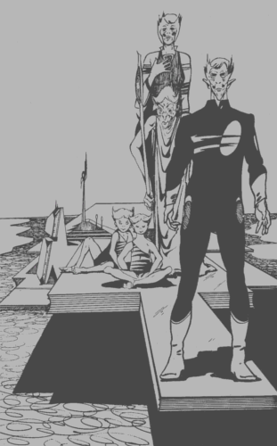

PRZYGOTUJ SIĘ DO WYPRAWY
Jesteś Kapitanem Okrętu Gwiezdnego "Podróżnik". Jest on dumą całej Gwiezdnej Floty. Jego uzbrojenie i systemy obronne są najnowszymi osiągnięciami techniki, a załoga składa się z najlepszych ludzi we flocie.
Zanim rozpoczniesz podróż, musisz dobrze poznać silne i słabe punkty - zarówno swoje, Kapitana, jak i członków twojej załogi. Przejście przez czarną dziurę przyniesie pewne szkody wyposażeniu statku.
Aby określić swój początkowy "stan posiadania", potrzebne ci będą dwie kostki do gry i ołówek, by zapisywać wyniki na Karcie Przygody.
Zanim zaczniesz wypełniać Kartę Przygody, zrób kilka jej kopii, których będziesz mógł użyć w następnych epizodach - jest raczej nieprawdopodobne, byś odnalazł drogę powrotną na Ziemię już podczas swojej pierwszej przygody.
W odróżnieniu od poprzednich książek tej serii, nie znajdziesz w tym miejscu, na początku książki, reguł walki z obcymi istotami i statkami. Podajemy je w tekście, aby umożliwić ci rozpoczęcie zabawy z minimalną tylko zwłoką. Gdy dojdziesz do sytuacji wymagających walki, zostaniesz odesłany do partii tekstu zawierającej właściwe zasady. Wszystko, co powinieneś zrobić teraz, to rzucić kostkę, aby określić początkowe wskaźniki.
TWÓJ STATEK
Rzuć jedną kostkę. Do liczby wyrzuconych oczek dodaj 6. Wpisz otrzymaną liczbę do rubryki MOC UZBROJENIA w Karcie Przygody. Strzelając do wrogiego statku, będziesz musiał wyrzucić wartość niższą od zapisanej, by uzyskać trafienie.
Rzuć jedną kostkę. Do liczby wyrzuconych oczek dodaj 12. Wpisz otrzymaną liczbę do rubryki SIŁA OSŁON w Karcie Przygody. Gdy wrogi statek trafi cię, utracisz odpowiednią liczbę punktów z tego konta. Po przyjęciu kilku trafień twoje osłony poważnie osłabną. Jeżeli kiedykolwiek twój statek zostanie trafiony w momencie, gdy siła osłon wynosić będzie zero, zostanie natychmiast zniszczony.
TY I TWOJA ZAŁOGA
Działanie personelu określają dwie wartości: SPRAWNOŚĆ i WYTRZYMAŁOŚĆ. SPRAWNOŚĆ każdego z członków załogi oznacza jego umiejętności zawodowe, tzn. chodzi tu o sprawność twojego Oficera Naukowego w posługiwaniu się komputerami, biegłość twojego Oficera Medycznego jako lekarza, sprawność bojową twojego Oficera Bezpieczeństwa i twoją własną sprawność w dowodzeniu statkiem i podejmowaniu decyzji, związaną z funkcją Kapitana.
Na swojej Karcie Przygody zobaczysz rubryki dla całego ścisłego sztabu (Kapitan, Oficer Naukowy, Oficer Medyczny, Oficer Bezpieczeństwa i Oficer Techniczny oraz dwóch Strażników). Dla każdego z nich po kolei powtórz następującą procedurę:
Rzuć jedną kostkę. Do liczby wyrzuconych oczek dodaj 6. Wpisz wynik jako ocenę SPRAWNOŚCI danej osoby.
Rzuć dwie kostki. Do liczby wyrzuconych oczek dodaj 12. Wpisz wynik jako ocenę WYTRZYMAŁOŚCI danej osoby.
Teraz możesz ocenić, czego się spodziewać po każdym z członków załogi w jego pracy; im wyższy wynik SPRAWNOŚCI, tym lepiej.
WALKA
Tylko sztab ochrony (Oficer Bezpieczeństwa i Strażnicy) jest pełnosprawny w walce. Na nich więc, oczywiście, powinien padać twój wybór w walce wręcz lub z użyciem fazerów (ręcznych laserów). Personel nie należący do ochrony może walczyć, lecz ich umiejętności dotyczą raczej innych spraw. Jeżeli zatem decydujesz (z wyboru, lub powodowany koniecznością), by nie należący do ochrony członek załogi walczył z obcym, musisz odjąć trzy punkty od jego SPRAWNOŚCI na czas trwania bitwy. Reguła ta dotyczy tylko Oficera Naukowego, Oficera Medycznego i Oficera Technicznego. Nie dotyczy ona ciebie, jako Kapitana. Twoja sprawność bojowa jest równa sprawności zawodowej, jak przystoi prawdziwemu bohaterowi.
SZCZĘŚCIE
Każdy prawdziwy bohater jest na łasce sił losu. Na swojej Karcie Przygody znajdziesz rubrykę SZCZĘŚCIE. Rzuć jedną kostkę, do liczby wyrzuconych oczek dodaj 6 i sumę wpisz do tej rubryki.
Nazywaj to Wolą Bożą, Mocą, czy jak jeszcze chcesz - SZCZĘŚCIE będzie odgrywać ważną rolę w twojej przygodzie.
ZEJŚCIE NA POWIERZCHNIĘ PLANETY
Po dotarciu do planety będziesz musiał posłużyć się określoną procedurą "zejścia" na jej powierzchnię. Czasami będziesz schodził sam, ale częściej otrzymasz instrukcję, by wybrać dwóch lub trzech członków załogi, którzy będą ci towarzyszyli. Możesz ich wybrać tylko spośród personelu figurującego na twojej Karcie Przygody (jest kilka warunków, ograniczających twój wybór - patrz ustęp "Utrata Oficera" poniżej). Oficer Naukowy jest specjalistą od rozwiązywania problemów, Oficer Medyczny jest lekarzem, Oficer Techniczny posiada znajomość mechaniki i geologii, a Oficer Bezpieczeństwa i Strażnicy są twoimi wojownikami.
Zapisuj swoje wybory zanim wylądujesz na planecie i pamiętaj, że tylko członkowie ekipy lądującej mogą zastępować cię na powierzchni.
PRZYWRACANIE WYTRZYMAŁOŚCI
Na niektórych planetach ty i twoja załoga możecie zostać wciągnięci w walkę lub inne sytuacje, które obniżą waszą WYTRZYMAŁOŚĆ. Można ją odtworzyć dwoma sposobami. Pierwszy z nich polega na znalezieniu planety z cywilizacją o wysokim poziomie techniki medycznej. Szczegółowe instrukcje będą podane w tekście. Możesz także odzyskać po 2 punkty WYTRZYMAŁOŚCI na każdego członka załogi, figurującego na twojej Karcie Przygody, za każdym razem, gdy opuszczasz planetę. Ten sposób możesz jednak wykorzystać tylko w przypadku, jeśli posiadasz swojego oryginalnego Oficera Medycznego. Jeżeli twój Oficer Medyczny zginął, nie możesz odzyskiwać WYTRZYMAŁOŚCI tą metodą. Poziom WYTRZYMAŁOŚCI członków załogi nie może, rzecz prosta, nigdy przekroczyć wartości początkowych, ustalonych w czasie przygotowań do podróży.
UTRATA OFICERA BEZPIECZEŃSTWA LUB STRAŻNIKA
Jeżeli podczas przygody któryś z Oficerów lub Strażników, figurujących na twojej Karcie Przygody, zginie lub zaginie, musisz wykreślić go z Karty i nie może on już występować w dalszym ciągu przygody. Wakujące stanowisko obejmuje jego asystent. Musisz określić SPRAWNOŚĆ i WYTRZYMAŁOŚĆ nowo awansowanego asystenta i zapisać to w Karcie Przygody. SPRAWNOŚĆ asystenta jest równa SPRAWNOŚCI utraconego Oficera minus 2 punkty, jako że asystent ów nie jest tak biegły, jak Oficer, którego zastąpił. WYTRZYMAŁOŚĆ asystenta określa się w normalny sposób, to znaczy, rzucając dwie kostki i dodając do wyrzuconych oczek 12.
Świeżo mianowany zastępca nie może schodzić na powierzchnie planet, ani brać udziału w żadnej misji, gdzie instrukcja będzie ci nakazywała wybór członka załogi. Jest ostatnim możliwym kandydatem na swoje szczególne stanowisko - nie możesz ryzykować jego utraty. Możesz jednak używać go w rutynowej służbie (tj. wtedy, gdy żaden wybór nie jest dany w tekście). Zastępca Oficera Medycznego może podnosić WYTRZYMAŁOŚĆ poszkodowanych członków załogi przy opuszczeniu planety (zob. "Przywracanie wytrzymałości" powyżej), ale w zmniejszonej dawce: 1 punkt WYTRZYMAŁOŚCI na planetę.
TWOJA PRZYGODA ZARAZ SIĘ ZACZNIE!
Wyniki, które zapisałeś na Karcie Przygody, dadzą ci wskazówki, dotyczące mocnych i słabych punktów: twoich własnych, twojej załogi i statku. Nie musisz wiedzieć, jaką szczegółową rolę będą te wyniki pełniły w grze - wszystko zostanie wyjaśnione, gdy zajdzie potrzeba, w miarę, jak twoja przygoda będzie się rozwijała.
W przygodzie, która zaraz się zacznie, jesteś Kapitanem "Podróżnika" zaginionego w nieznanym wszechświecie. Twoja sprawność w tej roli zadecyduje, czy ty i twoja załoga ujrzycie jeszcze kiedykolwiek Ziemię. Za chwilę zostaniecie przerzuceni przez czarną dziurę w niezbadaną przestrzeń. Jedyną waszą szansę powrotu stanowić będzie znalezienie innej stosownej czarnej dziury i przeprowadzenie przez nią statku z powrotem do własnego wszechświata.
Teraz jesteś już gotów do wyruszenia w drogę. Zajmij swoje miejsce na mostku i przygotuj się na spotkanie przygody. .
1
Popłoch!
Ze swojego fotela u sterów "Podróżnika" z niepokojem śledzisz ekrany. Przed chwilą Sekcja Techniczna meldowała o awarii - zablokowane zostały silniki hiperciągu. Statek ma dziesięcioprocentową nadszybkość, która zwiększa się z każdą chwilą. Obserwujesz miarowy ruch wskazówki prędkościomierza: z bezpiecznej strefy nieubłaganie przesuwa się ku czerwonemu polu przeciążenia. Wciskasz taster komunikatora i żądasz kolejnego raportu od Sekcji Technicznej...
Niedobrze. Nie mogą zlokalizować awarii. Dopiero za trzynaście minut system kontrolny będzie mógł podać pełną analizę.
Lecicie w kierunku Selcjańskiej Pustki - znanej czarnej dziury. Być może udałoby się wam ją ominąć, lecz twój Oficer Naukowy ma inny plan. Jeśli skierujecie statek w jej pobliże, kolosalne ciążenie może wyhamować waszą szybkość, zakrzywiając tor lotu. Rzecz wydaje się warta spróbowania, ale nawigacja musi być niezwykle precyzyjna...
Ostro kładziesz statek na sterburtę po wejściu w pole grawitacyjne kolapsu. Zawisasz wzrokiem na prędkościomierzu. Ku twojej wielkiej uldze wygląda na to, że plan się powiódł! Nadmiar prędkości maleje od 10 procent do 5 procent, do zera, do -5 procent!
Załoga głośno wiwatuje, ale ty ciągle obserwujesz prędkościomierz. Pokazuje teraz -15 procent, potem -25 procent i ciągle opada. Statek jest wciągany przez Pustkę!
Naciskasz guzik czerwonego alarmu i nakazujesz wszystkim mocno zapiąć pasy. Okręt zaczyna trząść się hałaśliwie, w miarę jak wzrasta przyspieszenie przy zbliżaniu się do czarnej dziury. Nie możesz już nic zrobić, by odwrócić zbliżającą się zagładę.
Potężna eksplozja wstrząsa statkiem i cała załoga, łącznie z tobą, traci świadomość. .
2
Zbliżacie się do błękitnej planety i wchodzicie na orbitę. Skanery wykazują, że planeta jest zamieszkała, a na jej powierzchni znajdują się godne uwagi wytwory inteligentnych form życia, świadczące o wysoce zorganizowanej strukturze społecznej.
Próbujesz różnych częstotliwości i, po pewnym czasie, na ekranie ukazuje się twarz obcej istoty. Ubrane w swego rodzaju mundur stworzenie jest humanoidem, ale niezwykłej chudości, z wielką, bulwowatą głową i kościstymi palcami. Przedstawia się jako Pierwszy Oficer I-Abail, reprezentujący Rząd Narodowy planety Jolsen 3. Wyjaśniasz wasze krytyczne położenie i zapewniasz go o pokojowych zamiarach. Zaprasza cię - ale tylko ciebie - do swego biura na planecie.
Wylądujesz , czy podziękujesz mu za propozycję i odlecisz ?
3
Bestia ryczy głośno, gdy promień razi ją z bezpośredniej odległości. Z przeraźliwym hukiem pada martwa. Wywołujesz statek i każesz załadować cielsko na pokład. Z pewnością dostarczy sporo pożywienia dla załogi. Teraz możesz albo zacząć zbierać, jadalne rośliny , albo iść dalej, szukając innej łownej zwierzyny .
4
Dziecko wprowadza cię do budynku, gdzie siedzi kilkoro innych dzieci. Twoje wejście witają podnieconymi piskami. Zostawiając ci rozmowę z nimi, twój przewodnik wychodzi do innego pokoju i wraca z jeszcze jednym dzieckiem, które przedstawia się jako Luft. Wyjawiasz swoje zdziwienie faktem, że tak małe dziecko mogło nawiązać kontakt z waszym statkiem i chłopiec opowiada o dziwnych drogach ewolucji społecznej Terrialczyków.
Jak widać, w świecie Terrialu panują dzieci. Rodzą się obdarzone niezwykłą inteligencją i zdolnościami i natychmiast po urodzeniu obejmują wysokie stanowiska. Po jakimś czasie bardzo szybko stają się starcami, niezdolnymi do wykonywania swoich obowiązków i zastępowane są przez jeszcze młodsze dzieci.
Wyjaśniasz wasze trudne położenie Luffowi, który słucha współczująco. Może pomóc wam w poszukiwaniach przejścia do waszego własnego wszechświata. Jeżeli pragniesz skorzystać z tej możliwości, przejdź do . Wyjaśnia także, że ich medycyna jest bardzo rozwinięta i jest w stanie przywrócić pełnię sił twojej załodze. Jeśli wolisz wybrać tę możliwość, przejdź do . Wszelako w zamian za pomoc lub leczenie Luff chce, byście go wzięli na pokład statku i ujawnili mu szczegóły uzbrojenia i systemów obrony. Jeśli ta cena jest zbyt wysoka, możesz uchylić się od jego propozycji i powrócić na statek .
5
M'k Mal oznajmia, że wdarliście się na terytorium Konfederacji i jesteście więźniami. Żąda, byście lecieli w ślad za jego statkiem do najbliższej bazy. Decydujesz się: towarzyszyć mu , uniknąć pojmania ?
6
Ustalasz kurs i zbliżasz się do czarnej dziury, wytracając hiperszybkość w pewnej odległości od niej. Ostrożnie dobierając kąt wejścia i prędkość, celujesz w ciemną pustkę. Czujesz, jak chwyta statek potężna siła grawitacji i wydajesz całej załodze rozkaz zapięcia pasów. Nagle statek szarpie się w przód i nabiera szybkości. Przyspieszenie jest tak silne, że wraz z resztą załogi tracicie przytomność. .
7
Twój Oficer Medyczny nie może dobrze poznać anatomii obcych, a tym samym nie może wiele zrobić, nie dysponując swoim laboratorium na statku. Jednak niektóre z chorób przypominają ziemskie i porady można udzielić na podstawie ogólnych zasad pomocy lekarskiej. .
8
Idziecie wolno w stronę drzwi wejściowych, jakbyście mieli wejść do pojazdu. Mijając obcych, dajesz sygnał pozostałym i trzech z was rzuca się na nich. Wydaje się to raczej bezowocnym posunięciem, bo te trzy istoty są niezwykle silne. Rzucają was na ziemię, ale padając udaje ci się strącić hełm jednemu z obcych. Ów zastyga w zupełnie nienaturalnej pozycji, jakby za przekręceniem jakiegoś kontaktu. Dowódca łapie hełm i błyskawicznie umieszcza go z powrotem na głowie swego kolegi, który raptownie ożywa. Przekonawszy się, że nie możecie się mierzyć z tymi istotami, wsiadacie do ich pojazdu, jak kazali.
Ale twoje odkrycie może się okazać istotnym elementem w usiłowaniach ucieczki z rąk tych koposów, jak sami się nazywają. Jeśli będziesz podążał dalej pewnymi drogami, możesz stanąć przed koniecznością wykonania rzutu SPRAWNOŚCI. Twoja wiedza czyni prawdopodobnym, że wykonasz dobry ruch. Możesz odliczyć 2 od liczby wyrzuconych oczek, gdy rzucasz dla określenia SPRAWNOŚCI oznaczonej jako SPRAWNOŚĆ (nabierze to więcej sensu we właściwym czasie). .
9
Twój Oficer Naukowy nie ma żadnych propozycji. Musisz zwrócić się albo do Komandora Domma , albo do pokładowego komputera .
10
Rzuć dwie kostki. Jeżeli suma wyrzuconych oczek jest równa lub wyższa od liczby określającej twoje SZCZĘŚCIE, przejdź do . Jeżeli jest niższa - do .
11
Znowu na mostku, zastanawiasz się nad wyborem dalszej drogi. Na wprost nas leżą dwie planety. Możesz wziąć kurs albo na jedną z nich (czerwoną - lub błękitną - , albo na małą, szybko poruszającą się plamkę, wykazującą oznaki życia .
12
Wasza opowieść wydaje się strażnikom zupełnie niewiarygodna. Przerywając w pół zdania, energicznie popychają was w kierunku korytarza.
13
Lądujecie na powierzchni planety i rozglądacie się wokół. Szaleje burza z piorunami, z nieba leją się strugi deszczu. Znajdujecie się na skalistym gruncie, w odległości mniej więcej stu metrów od czegoś, co wydaje się być rodzajem wioski. Trójka obcych, jak można się domyślać, mieszkańców wioski, człapie w połowie dystansu między osiedlem, a wami. Z waszym pojawieniem się wyraźnie wzdrygają się i kierują twarzami do was. Są to dziwne, pękate istoty o długich szyjach i krótkich, grubych nogach. Jeden z obcych zawraca do wioski. Jego kaczy chód jest niezbyt szybki. Z pewnością to tutejszy krok wyścigowy. Dwaj pozostali zbliżają się do was z bronią (długie, zaostrzone na końcach pałki) czujnie wyciągniętą przed siebie. Co zrobicie?
Poczekacie, aż podejdą blisko do was?
Pójdziecie im naprzeciw, by spotkać ich w połowie drogi?
Pobiegniecie do wioski?
14
Masz pomysł: zwiększając do maksimum moc swego fazera, strzelasz w najbliższą skałę, rozżarzając ją do białości, w nadziei, że ciepło i światło pozwolą załodze precyzyjnie cię zlokalizować.
Czekasz, prażąc skałę, aż wyczerpie się zapas energii w twoim fazerze. Ku twojej wielkiej uldze zaczynasz się dematerializować i pojawiasz się znów w Przekaźniku Materii swojego statku. Plan się powiódł i wracasz na mostek, by wykreślić dalszy kurs. .
15
Lecicie za Ganziganami kilka godzin, aż wreszcie wasze skanery wykrywają mały, okrągły obiekt. Przed wami znajduje się wielka, kolista konstrukcja, która obraca się powoli. Ganziganie oznajmiają swoje przybycie. Przejmując tę ich rozmowę, dowiadujecie się, że jesteście w kosmoporcie Laur-Jamil. M'k Mal znowu kontaktuje się z wami i podaje instrukcje do lądowania.
Cumujecie okręt i czekacie, podczas gdy on sprawdza waszą opowieść. W jakiś czas później widzisz, jak ganzigański statek opuszcza dok. Przypuszczalnie zostaliście oczyszczeni z podejrzeń albo zapomniano o was, czy też was zignorowano. Postanawiasz opuścić statek i zbadać kosmoport. .
16
Badacie przestrzeń za pomocą skanerów dalekiego zasięgu. Niemal na końcu ich zasięgu, po lewej, jest Mada, gwiazda z układem planetarnym. Możecie tam polecieć . W innym wypadku możecie zwiększyć szybkość aż do hiper i polecieć w głęboką przestrzeń .
17
Dilane dziękuje ci gorąco. Nawiązujesz łączność z Oficerem Technicznym na pokładzie statku i wyjaśniasz mu sytuację. Zgadza się pozostać na planecie i pomóc Makommonianom w budowie okrętów. Dilane proponuje ci wizytę w Wydziale Astronomii. W budynkach służących celom naukowym nie wolno nosić broni. Zgadzasz się oddać swój fazer jednemu ze stojących przy drzwiach techników. .
18
Załoga szybko odizolowuje zaatakowany obszar, by nie dopuścić do rozprzestrzeniania się zabójczego czynnika. Nie ma meldunków o dalszych wypadkach śmiertelnych. .
19
Ranne stworzenie podnosi się na nogi. Spogląda na ciebie dziwnie i nie może pojąć twego zaniepokojenia. Chwiejąc się na nogach, wprowadza cię do wnętrza budynku. Panuje tu chaos - wszędzie walają się połamane meble i resztki jedzenia. Obcy pada na najbliższą ławę i koncentruje się. Kikut zaczyna powoli rosnąć, formuje się nowa noga i już po chwili rana jest zagojona! Zasypujesz obcego pytaniami, ale wygląda na posiadacza nikłej inteligencji. To Kroll; nie wie nic o podróżach kosmicznych i czarnych dziurach. Radzi ci odwiedzić Timola, który mieszka kilka domów stąd i jest, być może, najinteligentniejszą istotą w tych okolicach. Dziękujesz mu i wychodzisz.
Czy skierujesz się do Timola , czy też zbadasz wielką budowlę widoczną na końcu ulicy ?
20
Ścieżka zakręca w prawo i znowu się rozwidla. Idziesz w prawo , czy w lewo ?
21
Zbliżasz się do trzech ludzi i pozdrawiasz ich. Nie wyglądają na zainteresowanych tobą, pochłonięci jakimś sporem. W końcu odwracają się do ciebie i agresywnym tonem pytają, czego chcesz. Relacjonujesz swoją historię, ale nie robi to na nich wrażenia. Znowu pytają, czego chcesz. Prosisz ich, by zaprowadzili cię do swego zwierzchnika. .
22
Wespół z kilkoma członkami załogi rzucasz się na te istoty. (Bestie nazywane są Squinnami). Reguły walki wręcz znajdziesz pod , ale zapamiętaj numer tego fragmentu, abyś mógł do niego wrócić.
Pierwszy Squinn s8
Drugi Squinn s7
Trzeci Squinn s8
Jeśli inni członkowie załogi są z tobą, możesz im nakazać zaatakowanie jednego zwierzęcia. Istoty te atakują tylko wtedy, gdy same są atakowane. Musicie zabić co najmniej jedną, zanim będziecie mogli skontaktować się ze statkiem, ale jak tylko jedna legnie martwa, możecie wejść na pokład w dowolnym czasie, zabierając ze sobą zdobycz. Gdy wejdziecie na pokład, przejdź do .
23
Posuwając się dalej wąwozem znajdujecie tylko skalisty grunt. Przenośny skaner nie pokazuje nic użytecznego pod powierzchnią. Wspiąwszy się na zbocze wpadacie znowu w porywisty wiatr, wzbijający tumany pyłu. Decydujesz się wrócić na pokład. .
24
Twój Oficer Naukowy przypuszcza, że skoro twój umysł znalazł się w darvilańskim ciele, to gdzieś musi być twoje ciało, wyposażone w umysł Dar-Vilanina. Być może, gdy powtórzysz swoją drogę przez Przekaźnik Materii w to samo miejsce, uda ci się odkryć miejsce, w którym to drugie ciało się znajduje. Czy uważasz to za dobry pomysł? Jeśli tak, wypróbuj go . Jeśli nie, możesz poprosić o opinię darvilańskiego Komandora lub użyć komputera dla znalezienia rady .
25
Obcy nie cofają się i przygotowują broń. Krzyczą do was i przez swój translator słyszysz, że każą wam zostać na miejscach. Możecie ich posłuchać i poczekać, aż podejdą do was lub iść dalej. Jeżeli chcesz iść dalej, przejdź do .
26
W kabinie komputera Ganziganin poleca ci zostawić go samego, wrócić na mostek i podążać dalej za jego statkiem. Przyłącza do wejścia komputera mały aparat, który odczytuje zawartość pamięci i transmituje informację na pokład krążownika.
Od tej chwili będziecie w niekorzystnym położeniu przy każdym spotkaniu z Ganziganami, ponieważ znają oni wasze uzbrojenie i wyposażenie obronne. Odejmij 2 punkty od MOCY UZBROJENIA i OSŁON swojego statku przy każdym przyszłym starciu z tą rasą.
Twój Oficer Naukowy poinformował cię o tym, co robi obcy. Czy postanowisz nie wszczynać żadnych działań, póki nie osiągniecie ganzigańskiej bazy , czy też układasz plan pojmania nieproszonego gościa ?
27
Za pomocą skanerów badasz przestrzeń wokół statku. Na wprost znajduje się zielono-szara planeta, od której dzieli was kilka godzin lotu. Możesz pozostać na kursie, wiodącym ku tej planecie lub skierować statek ku czemuś, co wydaje się być stacją kosmiczną i leży w stosunkowo niewielkiej odległości .
28
Wybierz dwóch członków załogi figurujących na Karcie Przygody, aby towarzyszyli ci na powierzchni planety. Wchodzicie do Przekaźnika Materii i po kilku minutach materializujecie się na planecie - w samym środku dżungli. Zorientowawszy się w sytuacji, słyszycie jakiś dziwny dźwięk. W pewnej odległości, coraz mniejszej, coś wielkiego przedziera się przez poszycie w waszym kierunku. Co rozkazujesz swoim ludziom: ukryć się , czy wyciągnąć fazery ?
29
Robot jeszcze raz kontaktuje się ze swoim centralnym procesorem. Znowu poleca wam iść za sobą, ale wy znowu odmawiacie. Bez ostrzeżenia, z jednej z jego kończyn błyska promień paraliżujący, powalając was bez czucia na ziemię. Każdy członek twojej ekipy traci po 2 punkty WYTRZYMAŁOŚCI. Budzisz się po jakimś czasie w innym pokoju. .
30
Oficer przystępuje do pracy przy użyciu mikrokoparki. Przez komunikator oznajmia o wartościowym złożu, w zupełności wystarczającym na potrzeby statku. Załadowawszy parę kilo do zasobnika, odbija się od powierzchni asteroidu i rozpoczyna powrót do statku. Rzuć jedną kostkę.
Jeśli wyrzucisz jedynkę, przejdź do . W innym przypadku - do .
31
Łączysz się ze statkiem i polecasz zabrać was na pokład. Znowu pojawiacie się w Przekaźniku Materii, szczęśliwi, że wyrwaliście się z tego piekła na dole. Wracasz na mostek. .
32
Wybierasz dwóch członków załogi z Karty Przygody, by towarzyszyli ci w lądowaniu (za pomocą Przekaźnika Materii, oczywiście). Dematerializujecie się i pojawiacie ponownie na powierzchni. Rozglądając się wokół widzicie, że znaleźliście się wewnątrz swego rodzaju ogrodzenia. Z tyłu, za wami stoi kopulasta budowla. Powietrze aż drży od ryku syreny, a spod kopuły wybiega trzech, podobnych do K'taita, obcych, z wyciągniętą bronią! Czy pozwalacie im się zbliżyć, by zobaczyć, czego chcą , czy też wyciągacie broń i otwieracie ogień ?
33
Rzuć dwie kostki. Jeśli suma wyrzuconych oczek jest równa lub mniejsza, niż SPRAWNOŚĆ twojego Oficera Naukowego, przejdź do . Jeśli wyrzucona liczba jest wyższa od jego SPRAWNOŚCI - do .
34
Zbliżacie się do błękitno-zielonej planety średniej wielkości i wchodzicie na jej orbitę. Badanie jej powierzchni ujawnia kilka skupisk inteligentnych form życia. Próbujecie nawiązać kontakt, lecz radio milczy. Zejdziecie na dół, by rzecz zbadać na miejscu , czy polecicie dalej ? Jeśli decydujesz się na lądowanie, możesz zabrać ze sobą trzech członków załogi z ekipy wpisanej do Karty Przygody.
35
Rzuć dwie kostki. Jeśli suma wyrzuconych oczek przewyższa SPRAWNOŚĆ twego Oficera Naukowego, przejdź do . Jeśli jest równa lub niższa - do .
36
Masz ze sobą trzech oficerów: Naukowego, Technicznego i Bezpieczeństwa. Możesz rozkazać któremukolwiek z nich, by spróbował obezwładnić Ganziganina lub też możesz sam tego spróbować. Zdecyduj, kto zaatakuje obcego i przejdź do .
37
Przerywają ogień i rozbrajają was. Na szczęście ich broń była nastawiona na oszołomienie i wszyscy porażeni członkowie załogi odzyskują przytomność. Obcy pod konwojem prowadzą was do aresztu i zamykają tam .
38
Bierzecie kurs na czarną dziurę, wytracając hiperszybkość w pewnej odległości przed nią. Starannie dobierając kąt wejścia i prędkość, starasz się trafić prosto w ciemną pustkę. Czujesz, jak okręt porywa olbrzymia siła grawitacji i nakazujesz całej załodze mocne zapięcie pasów. Nagle statek przechyla się i nabiera szybkości. Przyspieszenie jest tak gwałtowne, że ty i twoja załoga tracicie przytomność .
39
Dilane prosi, byś w sprawach związanych z bezpieczeństwem przybył na powierzchnię planety, co też robisz. Pojawiasz się w wielkiej sali o gładkich ścianach. Drzwi otwierają się i staje w nich dwóch Makommonian, za którymi ukazuje się sama Dilane. Używając jakiegoś rodzaju detektorów, technicy sprawdzają, czy masz broń i meldują Dilane o twoim fazerze. Dilane kiwa głową i pyta cię, co miałbyś ochotę zobaczyć. Czy chciałbyś:
Porozmawiać w Wydziale Astronomii na temat możliwości znalezienia drogi powrotnej do domu?
Poprosić ją, by pokazała ci miasto?
40
Zlecasz oficerowi nawigacyjnemu wykreślenie kursu na gwiazdę podwójną i rozkazujesz włączyć hipernapęd. Statek podąża ku swemu przeznaczeniu. Nagle podniecony głos w interkomie prosi cię o zejście do kantyny, gdzie zdarzyło się coś niepokojącego. .
41
Porzuciwszy orbitę Jolsena-3 przeszukujecie za pomocą skanerów pobliski obszar, szukając innych życionośnych planet. Najbliższą okazuje się mała, żółta planeta. Kierujecie statek ku niej , czy lecicie w głęboki kosmos ?
42
Istota uspokaja się, najwyraźniej była przestraszona gwałtownym wyrwaniem ze snu przez obcego (i to na dodatek tak brzydkiego!). Wyjaśnia, że jest Timolem i wygląda na całkiem przyjazne stworzenie. Skacze po całym pokoju i proponuje ci poczęstunek, którego grzecznie odmawiasz. Planeta jest skolonizowana, zasiedlają ją najrozmaitsze gatunki istot inteligentnych, zwłaszcza takich, które nie mogły wytrzymać swoich rodzimych światów lub były zbyt awanturniczego usposobienia, by ich rodzime światy wytrzymały z nimi. Jako, że planeta okazała się wymarzonym miejscem do życia, z łagodnym klimatem, wieść o tej "ziemi obiecanej" wolności i równości obiegła błyskawicznie całą galaktykę, ściągając coraz więcej osadników. Problem w tym, że nikomu nie pozwolono zajmować odpowiedzialnych stanowisk - wszyscy byli wszak zupełnie równi. Rezultatem, po wielu latach osadnictwa, jest kompletny chaos. Mieszkańcy planety nie mogą się do tej pory pogodzić nawet co do jej nazwy!
Wyjawiasz Timolowi swój własny kłopot - opowiadasz, jak zgubiliście się we wszechświecie równoległym do waszego. Timol niewiele wie o astronomii i podróżach międzygwiezdnych, ale proponuje, byście udali się na planetę Culematter, jako że tamtejsza cywilizacja jest bardzo rozwinięta. Dziękujesz mu za wskazówki i wychodzisz. Możesz, jeśli chcesz, udać się do okazałego budynku stojącego na końcu drogi lub też powrócić na statek, by lecieć dalej .
43
Gdy strażnicy wchodzą do pokoju, by zabrać obcych na tę Próbę Quaików, rzucacie się na nich. W czasie walki strażnicy mogą używać swoich paralizatorów. Za każdym razem, gdy ktoś z twojej ekipy zostaje trafiony przez strażnika, rzuć kostkę. Jeśli wyrzucisz 4, 5 lub 6, cios jest zadany paralizatorem i kosztuje twojego człowieka 4 punkty WYTRZYMAŁOŚCI zamiast normalnych 2 (wyrzucenie 1, 2 lub 3 oznacza normalne uderzenie). Reguły walki wręcz znajdziesz pod , ale zapamiętaj numer tego fragmentu, abyś mógł do niego wrócić później.
Pierwszy strażnik s8
Drugi strażnik s7
Trzeci strażnik s8
Jeśli pokonacie strażników, przejdź do . Jeśli zechcesz poddać się w którymś momencie walki - do .
44
Na podejściu do purpurowej gwiazdy wasze skanery wykazują, że druga planeta ma atmosferę idealnie sprzyjającą organizmom żywym. Wchodzicie na orbitę wokół tej planety i badacie powierzchnię. Są wyraźne oznaki działalności istot inteligentnych. Jest prawdopodobne, że cywilizacja tej planety jest o wiele bardziej rozwinięta niż wasza. Możecie zejść na planetę lub lecieć dalej .
45
Nastawiwszy odpowiednio moc rażenia swego fazera, strzelasz w ziemię, zataczając, promieniem krąg wokół siebie. Ku twej uldze ucisk nogi maleje i możecie zerwać z siebie pnącza. Jednak kontrolka fazera sygnalizuje ostry niedobór energii i nie będziesz mógł go użyć przed ponownym naładowaniem na statku. Możecie teraz wrócić na pokład , albo iść dalej, szukając łownej zwierzyny dla uzupełnienia jadłospisu . Cokolwiek wybierzecie, ścięliście już całkiem pokaźną ilość roślin i posłaliście ją zawczasu na statek.
46
Twój Oficer Medyczny pojawia się z substancją, która może być antidotum. Robi sobie zastrzyk, schodzi do komory cumowniczej bez skafandra i czeka. W godzinę później nadal nie wykazuje żadnych objawów choroby. Antidotum działa! Cała załoga melduje się w Sekcji Medycznej na leczenie. .
47
W pobliżu środka roju oficer musi wykonywać skomplikowane, a szybkie uniki, by ominąć asteroidy, które cały czas grożą mu zmiażdżeniem. Szczęśliwie akurat dwa z nich zderzyły się i rozleciały w różnych kierunkach, powodując co chwilę coś w rodzaju reakcji łańcuchowej. Przy użyciu przenośnego skanera twój oficer lokalizuje cztery asteroidy zawierające rudę dilibrium. Który wybierze?
Pierwszy asteroid
Drugi asteroid
Trzeci asteroid
Czwarty asteroid
48
Natychmiast twój starszy oficer wydaje rozkaz, by członków załogi, Komandora Domma i ciebie ściągnięto z powrotem na pokład. Na statku Oficer Naukowy dokonuje błyskawicznej analizy sytuacji przy pomocy komputera. Wynika z niej, że Przekaźnik Materii przesłał cię dokładnie w miejsce, zajmowane akurat przez jednego z darvilańskich strażników, w efekcie czego twoje ciało "wtopiło się" w jego.
Musisz teraz zdecydować, w jaki sposób powrócić do swojej postaci. Co zrobisz:
Zapytasz o opinię swojego Oficera Naukowego?
Zadasz pytanie komputerowi statku?
Spytasz darvilańskiego Komandora o jakieś pomysły?
49
Czekacie na sposobność, by rzucić się na strażnika. Jest niezwykle silny i sam nie miałbyś szans. Ale jeśli jest was dwóch lub trzech i walczycie razem, możecie go pokonać. Reguły walki wręcz znajdziesz pod , ale zapamiętaj numer tego fragmentu, abyś mógł do niego wrócić później.
Obcy będzie atakował dwukrotnie w każdej rundzie walki (musisz więc rzucać dwukrotnie, aby określić jego Siłę Ataku), a każdy atak będzie kierowany przeciw temu z was, który ma aktualnie najwyższy współczynnik WYTRZYMAŁOŚCI (jeśli dwóch z was ma równe współczynniki, losuj rzucając monetę).
Obcy strażnik s11
Jeśli zredukujecie WYTRZYMAŁOŚĆ obcego do 5 punktów, będziecie mogli strącić jego hełm, co go unieruchomi. Jeśli to zrobicie, przejdź do . Jeśli w jakimś momencie walka nie idzie dobrze i wolałbyś jej zaniechać, przejdź do .
50
Opłaty portowe można wnieść w postaci pewnej ilości każdego z następujących materiałów: żółtego mineralnego proszku, malinitu lub fluoryzującego zielonego metalu. Jeśli macie któryś z nich, możecie wprowadzać statek . W innym przypadku będziecie musieli się targować .
51
Komputer statku nie posiada żadnych informacji na temat Imperialnej Konfederacji Ganzig. Niecierpliwiąc się waszą opieszałością, krążownik oddaje starannie wymierzoną salwę przed dziób twojego statku. Zostaje ona, co prawda, zneutralizowana przez osłony, ale za cenę dwóch punktów SIŁY OSŁON (skreśl te 2 punkty na Karcie Przygody). Co zrobisz?
Zastosujesz się do żądań Komandora M'k Tela?
Odpowiesz ogniem?
52
Przy podejściu do kosmoportu odbieracie niejasną wiadomość, ostrzegającą was, by nie lądować. Próbujesz ponownie połączyć się z kosmoportem, ale nie otrzymujesz odpowiedzi. Podejmujesz ryzyko, kontynuując swój plam i lądując , czy zmieniasz zamiar i wracasz na poprzedni kurs ?
53
Po przejściu przez "bramę" tracisz grunt pod nogami i spadasz. Wpadasz w panikę, ale już po chwili uświadamiasz sobie, że nie jest to prawdziwe spadanie, ale raczej powolne szybowanie w dół przez pustą przestrzeń. Stopniowo twoje otoczenie staje się jaśniejsze i możesz zobaczyć, że zbliżasz się do swego rodzaju ścieżki, utworzonej, przynajmniej pozornie, z niematerialnej energii. Opadłszy na nią, rozglądasz się dokoła. Ścieżka wygina się, skręca, rozwidla i znowu schodzi, wijąc się i tworząc przed tobą coś na podobieństwo pajęczej sieci w czarnej pustce. Wygląda na to, że utrzymuje twój ciężar, ale wszystko wokół pogrążone jest w czerni i jakby wszechogarniającej próżni. Ostrożnie wstępujesz na ścieżkę i kroczysz przed siebie, wyczuwając drogę tylko stopami.
Przed tobą ścieżka się rozwidla. W którą stronę skręcasz: w lewo czy w prawo ?
54
Próbujesz kontynuować rozmowę, ale jedynym efektem jest coraz większe rozdrażnienie starca. Wzywa swoich towarzyszy i do pokoju wchodzi dwóch Terrialczyków z wyciągniętą bronią. "Zabrać ich"! krzyczy i obaj wycelowują broń. Starzec też wyciąga pistolet i trójka obcych strzela do was. Reguły walki przy użyciu fazerów znajdziesz pod , ale zapamiętaj numer tego fragmentu, abyś mógł do niego potem wrócić. Terrialczycy strzelają pierwsi.
Starzec s6
Pierwszy Terrialczyk s7
Drugi Terrialczyk s5
Jeśli przeżyjesz walkę, możesz powrócić na pokład statku razem ze wszystkimi ocalałymi członkami załogi. .
55
Wchodzicie do budynku i rozglądacie dookoła. Wygląda na pewnego rodzaju bibliotekę. Na pulpicie przy wejściu spostrzegasz coś, jakby gazetę. Zabierasz ją ze sobą - może da wam pewne wyobrażenie, dlaczego całe to miasto wygląda jak pustynia. Na szczęście biblioteka jest sterowana komputerowo. Włączacie konsolę, po kilku zgrzytliwych i charkotliwych dźwiękach rozlega się głos: "Dzień dobry, czytelniku! Jaki dziś będzie temat?". Przede wszystkim interesuje was tutejsza historia, ale najświeższy zapis wydaje się pochodzić sprzed okresu, gdy to miasto tętniło życiem.
Wbiega jeden z członków załogi. "Kapitanie" - woła. - "Właśnie przejrzałem kartoteki astronomiczne. Jest czarna dziura! Autorzy zapisu podają, że prawdopodobnie jest to spaczona przestrzeń. W sektorze 288!" Wiadomość jest rzeczywiście doniosła i polecasz, by statek zabrał was na pokład, żeby sprawdzić całą sprawę. .
56
Planeta jest czarna i jałowa, o surowej skalistej powierzchni. Badacie ją około pół godziny, po czym decydujesz się wracać na statek, jako że wkrótce skończy się wam powietrze. Ku swemu przerażeniu, nie możesz się połączyć ze statkiem! Twój Oficer Naukowy przypuszcza, że przyczyną są magnetyczne skały tej planety, wytłumiające wasz sygnał. Rozważa ten problem przez jakiś czas i wraca z pewnym pomysłem. Rzuć dwie kostki. Jeśli wyrzucona liczba jest równa lub mniejsza, niż jego współczynnik SPRAWNOŚCI, przejdź do , jeżeli przewyższa jego sprawność - do .
57
Wybierasz dwóch członków załogi z Karty Przygody, którzy będą ci towarzyszyli w zejściu na planetę. Po zmaterializowaniu się na jej powierzchni, zostajecie powitani przez K'taita. Zaprasza was do swego gabinetu i opowiada wam o planecie. Wyjaśniasz, że jesteś przekonany, iż jedyną drogą powrotu do własnego wszechświata jest dla was ponowne przejście przez czarną dziurę. Pytasz, czy ktoś na planecie mógłby wam pomóc. K'tait uważa to za prawdopodobne. Sygnał z pulpitu wzywa go do "areny". Przeprasza was i wychodzi. Czekacie na jego powrót. .
58
Próbujecie kontaktu na wszystkich częstotliwościach, lecz odpowiedzi brak. Kolejna salwa wstrząsa statkiem. Rzuć dwie kostki. Liczba równa lub niższa od wskaźnika SIŁY OSŁON oznacza zmniejszenie tego wskaźnika o 1 punkt. Jeśli suma wyrzuconych oczek przekracza SIŁĘ OSŁON, tracisz dwa punkty, zaś dwie szóstki przynoszą ci osłabienie osłon aż o 5 punktów. Wydajesz rozkaz gotowości bojowej .
59
Wyłączacie hipernapęd w bezpiecznej odległości od czarnej dziury. Oficer Naukowy wylicza optymalny kurs na komputerze pokładowym. W miarę zbliżania się, możecie odczuć potworną siłę przyciągania kolapsującej gwiazdy. Gdy poddajesz statek tej sile, załoga mocno zapina pasy. Pustka porywa statek i cała załoga traci przytomność. .
60
Zbliżacie się do małej gromady gwiezdnej. Przez interkom dochodzi wiadomość od intendenta: "Kapitanie, właśnie odkryłem awarię jednej z naszych chłodni. Straciliśmy sporo żywności. To, co zostało, wystarczy nam najdalej na czterdzieści osiem godzin!" Zgadzasz się, że musicie teraz znaleźć zaopatrzenie dla statku.
Przeszukując za pomocą skanerów gromadę przed wami, znajdziesz dwie planety o temperaturach i grawitacji sprzyjających istnieniu życia: jedna jest zielona, druga błękitna. Którą zbadacie: zieloną , czy błękitną ?
61
Nastawiacie fazery i strzelacie. Reguły strzelania z fazerów znajdziesz pod , ale zapamiętaj numer tego fragmentu, abyś mógł do niego potem wrócić. Każdy członek twojej ekipy może raz strzelić do strażnika. Jeśli moc waszych fazerów jest nastawiona w pozycji "oszołomić", dodaj dwa punkty do każdego rzutu, jako że strażnik jest opancerzony (nie rób tego, jeśli fazery nastawione są na "zabić"). Jeśli traficie strażnika, przejdź do . Jeśli wszyscy chybicie - do .
62
Ustalasz kurs i zbliżasz się do czarnej dziury, wytracając hiperszybkość w pewnej odległości od niej. Ostrożnie dobierając kąt wejścia i prędkość, wcelowujesz w ciemną pustkę. Czujesz, jak statek drży, zagarniany potężną siłą grawitacji. Wydajesz całej załodze rozkaz zapięcia pasów. Nagle statek szarpie do przodu i zwiększa prędkość. Przyspieszenie jest tak silne, że wszyscy tracicie przytomność. .
63
Strażnicy odstępują, trzymając was na muszkach. Każą wam iść przodem. Korytarzem sprowadzają was do windy. Po kilkuminutowej podróży przybywacie do aresztu, gdzie wrzucają was do cel. Nie wiecie, że Dar-Vilanie są w kłopocie, głowiąc się, jak rozwiązać wasz problem. W końcu decydują, że najłatwiejszym rozwiązaniem problemu jest pozbycie się go. Gaz wsącza się bezszelestnie przez wywietrzniki i zapadasz w nieświadomość, z której już się nie ockniesz...
64
Zawody organizuje się na Malini co roku, by dostarczyć rozrywki górnikom. Są to różne rodzaje walk, sprawdzające wszechstronnie sprawność i wytrzymałość zawodników. Obcy, z którymi jesteście zamknięci, startują w Próbie Qualków - jednej z konkurencji. Qualki są półinteligentnymi, błyskawicznie latającymi zwierzętami o długich, ostrych jak brzytwy dziobach. Na Malini uważa się je za niebezpieczne szkodniki. Wasi współlokatorzy zostaną uzbrojeni w fazery i wypróbują swoje szczęście w walce z quazzeną (trzydzieści do czterdziestu) Qualków. Zwycięstwo oznacza wolność i sporą nagrodę, wypłacaną w malinicie.
Możecie czekać, by zobaczyć, do jakiej walki zostaniecie wyznaczeni , albo spróbować ucieczki .
65
W kosmoporcie zezwalasz załodze na dwugodzinny "urlop" dla relaksu. Większość ludzi, włączając w to ciebie i twoich oficerów, kieruje się do kasyna i do baru.
Bar jest raczej odpychającym miejscem, ciemnym i zadymionym. Spora liczba obcych, należących zresztą do rozmaitych ras, popija różnokolorowe napoje. Obrzucają was podejrzliwym wzrokiem, gdy wchodzicie. Zamówiwszy sobie drinki, siadacie przy stole w rogu sali. Najbliżej znajduje się grupa identycznych stworzeń o ciemnej, pokrytej brodawkami skórze i ponurym wejrzeniu. Jedno z nich zatacza się na ciebie i warczy coś obraźliwego. Twoi oficerowie podnoszą się w twej obronie. Jedno wydarzenie pociąga za sobą następne i, zanim zdołałeś to powstrzymać, namiętności wybuchają jasnym płomieniem walki.
Każdy z oficerów i Strażników Bezpieczeństwa, figurujących na Karcie Przygody, bierze na siebie jednego z obcych. Wszystkie walki muszą być toczone aż do śmierci. Reguły walki wręcz znajdziesz pod , ale zapamiętaj numer tego fragmentu, abyś mógł wrócić później. Każdy z obcych jest identyczny:
Istoty w barze s7
Gdy wszystkie walki zostaną rozstrzygnięte, wydajesz (jeśli, oczywiście jeszcze żyjesz) rozkaz natychmiastowego powrotu na statek. .
66
Zaraz po wylądowaniu kutra patrolowego, jego załoga udaje się do sali odpraw, by złożyć ci meldunek. Gdy relacjonują swoje znaleziska, nagle przerywa wam pilna wiadomość. "Kapitanie! Straciliśmy trzech techników - ostatnio byli zajęci cumowaniem kutra. Wszyscy nie żyją!". Jaki będzie twój pierwszy rozkaz?
Załoga kutra natychmiast do Sekcji Medycznej na kwarantannę!
Odizolować komorę cumowniczą od reszty statku!
Wyrzucić kuter za burtę!
67
Włączasz komunikator, ale słychać tylko szumy statyczne. Coś w budynku wytłumia twój sygnał. Ale próbując to jeszcze sprawdzić, zauważasz coś dziwnego. Wszyscy obcy, jakich możesz dojrzeć, są nieruchomi jak posągi. Odkryłeś coś, co może być drogą ucieczki. Wyłączasz komunikator i obcy powracają do życia. .
68
Warunki są bardzo prymitywne. Twój Oficer Medyczny zauważa, że wielu obcych ma gorączkę i próbuje leków, które jak się wydaje, mogą ją obniżyć. Obcy są wdzięczni za waszą pomoc. .
69
Stajecie przed problemem. Możecie lecieć dalej w hiperszybkości, mając nadzieję, że zapas dilibrium wystarczy wam do osiągnięcia miejsca przeznaczenia , lub też przejść na pomocnicze źródło energii, której jednak zabraknie wtedy do zasilania jednego z ważnych układów statku . Co wybierzesz?
70
Oficer Techniczny znika w swoim laboratorium i przystępuje do pracy. W godzinę później wywołuje cię. Wypróbował trzy różne typy urządzeń ekranizujących filtr, ale nie potrafi znaleźć rozwiązania problemu. Będziesz musiał poradzić się swojego Oficera Naukowego , albo obcego Komandora .
71
Z bronią w ręku uważnie obserwujecie te istoty. Następuje krótka wymiana krzyków i wasze niedawne "schronienie" odchodzi w dżunglę, z potwornym hałasem łamiąc drzewa lub wyrywając je z korzeniami. Stajecie twarzą w twarz z przybyszem. .
72
Ryk tłumu towarzyszy upadkowi robota. Dajecie się poprowadzić na spotkanie z seniorem egzekutywy organizacji górniczej, który obdarowuje was zwyczajowymi nagrodami: wolnością i sporą ilością malinitu. Wspominacie o swojej misji i pragnieniu odnalezienia drogi powrotnej do własnego wszechświata. Kiwa głową i prosi was, byście zechcieli pójść z nim do Głównej Kwatery Astronautyki. .
73
Stopnie wiodą do wielkiego budynku. Napisy na drzwiach sugerują, że jest to budowla o sporym znaczeniu. Pukacie, ale nie ma żadnej odpowiedzi, mimo iż z wnętrza dochodzi gwar podnieconych głosów. Popychasz drzwi - otwierają się. Wchodzicie do wielkiego hallu. Kilka par obcych różnych kształtów i rozmiarów, kroczy w różnych kierunkach po korytarzu, przechodząc w zaaferowaniu od jednej sali do drugiej i dyskutując ze sobą ożywionymi głosami. Tajemnicza istota, odziana w wypłowiałą, błękitną szatę, zauważa was i podchodzi bliżej. Jej twarz jest niewidoczna, ale błyszczą jasnobłękitne oczy. Odzywa się, a twój translator tłumaczy: "O, wyglądacie na zainteresowanych. Jak myślicie, gdzie powinien stanąć nowy szpital?". Wyjaśniasz, że jesteście nowi w tych okolicach i że chcielibyście spotkać kogoś, kto sprawuje tu władzę. Obcy śmieje się: "Nikt tutaj nie ma władzy, przyjacielu. Wszyscy jesteśmy równi! Chodźmy - pozwólcie, że was poprowadzę". Proponuje zwiedzić:
Główną salę zebrań
Całość budynku w krótkiej wycieczce
74
Robot-Służący prowadzi cię do poczekalni. Po kilku minutach zostajesz wprowadzony do zabytkowego gabinetu o błyszczących, metalowych ścianach. Pod wielkim, wychodzącym na otwartą przestrzeń kosmiczną, oknem stoi pulpit, za którym siedzi sporych rozmiarów stworzenie. Ma wielką głowę, takiż tors i kształtem przypomina staromodną klepsydrę kuchenną.
Obcy przedstawia się jako D'Ouse-E i pyta w czym może pomóc. Najwidoczniej jest Kontrolerem tego kosmoportu. Wyjaśniasz wasze położenie i pytasz, czy mógłby pomóc wam w znalezieniu drogi powrotnej do waszego własnego wszechświata. Prosi, byś poczekał, a on skontaktuje się ze swoją Sekcją Kartograficzną. Siedząc sztywno, jakby kij połknął, pogrążony w zamyśleniu, najwyraźniej łączy się z kimś telepatycznie. Czekasz cierpliwie.
Nagle otrząsa się z transu i mówi: "Nie mogę zagwarantować, że ta informacja wam pomoże, ale mój oficer kartograficzny wykonał kilka opracowań na temat przejść między wszechświatami. Wydaje się prawdopodobne, że dwa światy zetkną się w bliskiej przyszłości - w 77 Jednostce Czasu Gwiezdnego, żeby być ścisłym - chociaż nie ma sposobu, by określić, czy chodzi tu o wasz świat. Przejść możecie tylko przez czarną dziurę, ale mój oficer nie ma pewności, którą". Dziękujesz za otrzymane informacje i wracasz na statek. .
75
Nieprzytomny furiat zostaje zabrany do Sekcji Medycznej, gdzie twój Oficer Medyczny prowadzi badania. Rzuć dwie kostki. Jeśli wyrzucona liczba jest równa lub wyższa niż wskaźnik SPRAWNOŚCI twojego Oficera Medycznego - . Jeśli jest niższa - . Jeśli twój Oficer Medyczny zginął lub znajduje się wśród zaatakowanych członków załogi, badania przeprowadzać będzie jego zastępca; w tym przypadku odejmij 2 punkty od SPRAWNOŚCI Oficera Medycznego, zapisanej na Karcie Przygody.
76
Zbieracie broń strażników i wracacie do kwatery Komandora Domma. Wchodzicie do pokoju z bronią w pogotowiu. Twój starszy oficer proponuje powrót na statek i zabranie ze sobą Domma, by poszukać rozwiązania problemu. .
77
Ścieżka biegnie dalej i niebawem zbliżasz się do kolejnego rozwidlenia. W którą stronę idziesz: w lewo , czy w prawo ?
78
Zbrojna eskorta odprowadza was do poczekalni i tam zostawia razem z kilkoma innymi współzawodnikami. O co ich pytacie: o zasady Zawodów , czy o możliwości ucieczki ?
79
Zbliżywszy się, wyłączacie silniki. Przełączając ekrany na optyczną, widzicie małą gromadę w pewnej odległości od was.
Nagle twój oficer nawigacyjny obraca się. "Kapitanie!" - woła, burza meteorytowa. Pakujemy się prosto w nią!" Jaki będzie twój rozkaz?
Manewr wymijający
Osłony na pełną moc
80
Twoi oficerowie robią co mogą, ale morale załogi upada. Otrzymujesz raporty o dwóch samobójstwach. Sekcja Medyczna oblegana jest przez członków załogi cierpiących na rozstrój nerwowy.
Łączy się z tobą oficer nawigacyjny. Melduje w podnieceniu: "Kapitanie! Czujniki wykryły czarną dziurę w odległości 4,2 lat świetlnych stąd!" Postanawiasz postawić wszystko na jedną kartę i nakazujesz lot hipernapędem w stronę odkrytego kolapsu. .
81
Wchodzisz do Przekaźnika Materii i zostajesz przetransmitowany do Dar-Vil. Pojawiasz się tam w takiej samej postaci - eksperyment się nie udał. Wróciłeś znów na pokład, musisz teraz albo skonsultować się z komputerem , albo poprosić o radę Komandora Domma .
82
Ustalasz kurs i zbliżasz się do czarnej dziury, wyłączając hipernapęd w pewnej odległości od niej. Ostrożnie dobierając kąt wejścia w pole i prędkość, skierowujesz statek w ciemną pustkę. Czujesz drżenie statku, zagarnianego przez potężną siłę grawitacji i wydajesz całej załodze rozkaz zapięcia pasów. Nagle statek szarpie do przodu i zaczyna nabierać szybkości. Przeciążenie jest tak silne, że wszyscy tracicie przytomność. .
83
Twój Oficer Naukowy zabiera kopię programu kontroli pogody na statek, aby przeanalizować ją na pokładowym komputerze. Program jest napisany w nieznanym języku, ale komputer może dać wgląd w jego struktury logiczne. Twój Oficer Naukowy zmienia je nieznacznie i wprowadza zmodyfikowany program. W kilka chwil później deszcz zamiera. Bran-Sel jest uszczęśliwiony i proponuje użycie swojego komputera do poszukiwań odpowiedniej czarnej dziury, która przeniosłaby was z powrotem do waszego wszechświata. Komputer lokalizuje kilka takich czarnych dziur. Niestety, nie może wskazać właściwej, ale podaje informację, że powinniście lecieć na 3 stopniu hiperszybkości, by pomyślnie zrealizować przejście.
Dziękujecie Bran-Selowi za pomoc i powracacie na pokład statku. .
84
Z powrotem na statku. Wczytujesz raport do komputera i za pomocą skanerów dalekiego zasięgu próbujesz ustalić kolejny cel waszej podróży (jeśli potrzebowaliście krystalicznego dilibrium, ruda, którą znaleźliście, zostaje przetopiona w Sekcji Technicznej). Skanery wskazują dwie obiecujące gwiazdy z systemami planetarnymi: jedna jasna, purpurowa, druga jest gwiazdą podwójną. Jeśli chcesz skierować się ku pierwszej z wymienionych przejdź do ; jeśli zbadać gwiazdę podwójną, do .
85
Luff przywołuje jednego ze swoich medyków, by ten towarzyszył ci na okręt, ale musisz zostawić swoich dwóch ludzi na planecie jako zabezpieczenie. Ty i Ledoux, medyk, wracacie na pokład "Podróżnika".
W ciągu następnej godziny Ledoux leczy wszystkich członków załogi, którzy wymagają pomocy lekarskiej. Potem obaj wracacie na planetę, gdzie leczeniu poddajesz się ty sam i twoi dwaj towarzysze. Możesz przywrócić początkowe wartości wskaźnikom SPRAWNOŚCI i WYTRZYMAŁOŚCI wszystkim członkom załogi, figurującym na twojej Karcie Przygody. .
86
Na dużej szybkości zbliżacie się do matowo-błękitnej planety i wchodzicie na jej orbitę. Skanery bliskiego zasięgu wskazują, że planeta jest zasiedlona. Najgęściej zaludnionym obszarem wydaje się być miasto, leżące w centrum ogromnej wyspy. Możesz opuścić się na powierzchnię w środku tego miasta, zabierając dowolnych trzech członków załogi z Karty Przygód , lub opuścić orbitę i lecieć dalej .
87
Czekasz przez chwilę, by zobaczyć, czy rośliny poluzują swój uścisk. Ale pnącza owijają się wokół ciebie, przyciskając ci ręce do tułowia. W panice próbujesz wyrwać się z morderczych pęt, lecz twoje usiłowania są daremne. Nie możesz nawet połączyć się ze statkiem. Rośliny zaciskają chwyt wokół twojej szyi; zaczynasz się dusić, ale nie możesz powstrzymać nieubłaganie dławiącej cię pętli. Skończyłeś swoje dni jako pożywienie tych roślin, którymi chciałeś nakarmić swoją załogę.
KONIEC
88
Sobowtór przekazuje na statek wiadomość, udzielając całej załodze dwudziestoczterogodzinnego urlopu na tej planecie "... ponieważ jest ona bardzo gościnna, tak przyjazna jak Malthus-4". Twój Oficer Naukowy rozszyfrowuje wskazówkę. Malthus-4 to spustoszona planeta, zaludniona przez nadzwyczaj wojowniczą rasę i wykorzystana przez Ziemian jako planeta-więzienie. Oficer Naukowy żąda, by Kapitan wrócił na pokład i wydał rozkaz osobiście. Makommonianie nie mogą dopuścić, by sobowtór został dokładnie sprawdzony, więc rozmowa dalej toczy się przez radio. Ku wielkiemu przerażeniu Makommonian, indagowany przez oficera sobowtór mówi, co się stało. Pod groźbą użycia okrętowych laserów, Makommonianie zgadzają się cię uwolnić. Wracasz na statek. .
89
Zajmujecie pozycję na orbicie małej planety, krążącej wokół olbrzymiej, czerwonej gwiazdy. Skanery wykazują, że planeta jest prawdopodobnie pozbawiona życia. Powierzchnia jest gorąca i wulkaniczna. Zejdziecie na dół, by zbadać to dokładniej , czy odlecicie ?
90
Po dokładnych analizach Oficer Medyczny nie może znaleźć żadnej przyczyny, tłumaczącej ten atak szału. Nie mogąc nic więcej zrobić dla pacjenta, proponuje odizolowanie go aż do chwili znalezienia lekarstwa. Strażnicy Bezpieczeństwa zabierają szaleńca do aresztu i umieszczają go w izolatce. Ten członek załogi nie będzie już brał udziału w tej przygodzie. Wracasz na mostek. .
91
Wszedłszy, zaczynasz lepiej widzieć. Nie jesteście w wielkiej sali, czy raczej westybulu, jak tego oczekiwałeś, ale w ogromnej stacji komputerowej. Na ścianach rzędami wiszą dziwne tablice kontrolne, pokryte przełącznikami, skalami i lampkami sygnalizacyjnymi. Na środku sali, przed olbrzymim ekranem, po którego obu stronach widać skomplikowane klawiatury, siedzi jakaś ludzka postać. Gdy podchodzicie bliżej, postać ta obraca się na krześle w waszą stronę. .
92
Lecicie przez pustkę, badając przestrzeń za pomocą skanerów. W ich zasięgu pojawia się mała, szybko poruszająca się kropka. Zbliżywszy się, rozpoznajecie w niej inny statek. Wysyłacie komunikat na wszystkich częstotliwościach i wkrótce obca twarz pojawia się na waszych ekranach. Twarz jest brunatna, pokryta łuską i cokolwiek gadzia. Przedstawia się jako Komandor M'k Mal z Imperialnej Konfederacji Ganzig. Czy zetknęliście się już kiedykolwiek przedtem z Imperialną Konfederacją Ganzig? Jeśli tak, przejdź do . Jeśli nie - do .
93
Wytracacie hiperszybkość w pobliżu gromady gwiezdnej, która wygląda dość interesująco. Decydujesz się zbadać ją bliżej. .
94
Obcy, dzielący z wami salę, są kłótliwą bandą; być może są to górnicy, którzy zmęczeni pracą w kopalni chcą się szybko wzbogacić, jako że nagrody w igrzyskach, do których stanęli, są najwidoczniej wartościowe. Szanse ucieczki, o której mówiliście, są nikłe. Przedpokoje są silnie strzeżone, a strażnicy uzbrojeni w paralizatory, zadające straszliwy ból ich ofiarom. Możecie albo spróbować szczęścia w zawodach, jakie by one nie były , albo zaplanować ucieczkę i zaczaić się na strażników, gdy wejdą do sali .
95
Jesteście odprowadzani do aresztu. Dwaj nowi strażnicy bardziej pilnują twoich ludzi, niż ciebie. Gdy skręcacie za załom korytarza, masz okazję rzucić się na jednego z nich. Ale połowa ciebie opiera się temu impulsowi i musisz ciężko walczyć, by pokonać opór. Chwytasz swoją szansę i sczepiasz się z jednym ze strażników, ale twoja siła jest zmniejszona przez ów wewnętrzny konflikt:
Twój strażnik s7
Ty s6
Gdy obaj walczycie, twoja załoga bierze się za drugiego strażnika.
Strażnik s7
Reguły walki wręcz znajdziesz pod , ale zapamiętaj numer tego fragmentu, abyś mógł wrócić tu później. Najpierw ty staczasz rundę walki ze swoim strażnikiem, potem twoi ludzie staczają rundę ze swoim, itd. Jeśli twoja załoga zabije strażnika, przybędą ci na pomoc. Jeśli ty zabijesz swojego, możesz pomóc swoim ludziom.
Jeśli ty i twoja załoga pokonacie strażników, przejdź do . Jeśli sprawy idą źle i chcesz przerwać walkę - do .
96
Oficer rozpoczyna pracę przy użyciu mikrokoparki. Złoże jest obfite i wkrótce parę kilo rudy znajduje się w podręcznym zasobniku. Szczęśliwie omijając nadlatujące asteroidy, oficer rozpoczyna powrót do statku. .
97
Dalej badasz powierzchnię. Jest to planeta o bardzo dużej gęstości, jej skorupa jest metaliczna. Wybierasz z Karty Przygody dwóch członków załogi i razem, ubrani w skafandry przeciwciążeniowe, wchodzicie do Przekaźnika Materii. W chwilę później jesteście na powierzchni planety. .
98
Poczęstunek wydaje się być syntetycznego pochodzenia, ale jest dość smaczny. Opowiadasz Pierwszemu Oficerowi o swoim własnym świecie, a on tobie o Jolsen-3 Po pewnym czasie zaczynasz odczuwać senność, co jest niezwykłe, jako że twoja pora odpoczynku przypada dopiero za kilkanaście godzin. Twoje powieki stają się coraz cięższe i musisz ciężko walczyć, by nie stracić świadomości. Zbyt późno uprzytamniasz sobie, że jedzenie było nafaszerowane narkotykiem. Zapadając w sen, słyszysz jeszcze, jak I-Abail mówi do swego asystenta: "Zanieśmy naszego gościa do pracowni przejść granicznych". .
99
Zajmujesz Ganziganina rozmową i oprowadzasz go po okręcie, usiłując zyskać na czasie. Pokazujesz mu ładownie, przystań promową, tereny rekreacyjne i laboratoria naukowe. W pracowni biologicznej obcy zaczyna coś wrzeszczeć w podnieceniu na widok orła, przykutego do swojej grzędy. Wnioskujesz z tego, że w świecie Ganziganina podobne istoty są traktowane jako śmiertelni wrogowie. Co robisz:
Ignorujesz incydent i kontynuujesz podróż do sali komputerowej?
Uwalniasz orła?
Wykorzystujesz dekoncentrację obcego, by go obezwładnić?
100
Stworzenie kontempluje cię jakiś czas, po czym obraca się i dostojnym krokiem zagłębia się w dżunglę. Możesz teraz albo zacząć zbierać miejscowe rośliny dla uzupełnienia jadłospisu , albo rozejrzeć się jeszcze za jakąś łowną zwierzyną .
101
Oficer Medyczny robi obchód chat, by się zorientować, czy mógłby coś zrobić. Rzuć dwie kostki i porównaj wyniki ze wskaźnikiem jego SPRAWNOŚCI. Jeśli wyrzucona liczba jest równa lub wyższa od jego SPRAWNOŚCI, przejdź do , jeśli niższa - do .
102
Strażnicy są trochę zaniepokojeni, ale gdy atak ustaje, ostrożnie uwalniają swojego jeńca. Zaczynasz do niego mówić i nagle skacze na ciebie, nim ktokolwiek może go powstrzymać! Sczepiacie się w walce. Stoczcie dwie tury walki (reguły znajdziesz pod , ale zapamiętaj numer tego fragmentu, abyś mógł tu wrócić). Szaleństwo napastnika daje mu niezwykłą siłę - dodaj 3 punkty do jego SPRAWNOŚCI. Po dwóch rundach walki, przejdź do .
103
Wasz przewodnik, nazywający się Fioral, oprowadza was po salach, opowiadając cały czas o planecie i jej mieszkańcach. "Naszymi bóstwami są wolność i równość", mówi to małe stworzenie. "Ta planeta jest nadzwyczaj wygodnym miejscem i chętnie tu witamy wszystkich osadników. Wszyscy są równi, bez względu na to, czy przeżyli tu całe swoje życie, czy też dopiero co przybyli. Każdy może tu robić, co zechce - nie odczuwamy potrzeby posiadania praw". Pokazuje wam archiwum, plac wiecowy i sale używane przy szczególnie uroczystych zebraniach.
Wracając do sali debat, mijacie wartownię. Pytasz, dlaczego, jeśli nie ma tu żadnych praw, są strażnicy. Fioral zatrzymuje się i wyjaśnia: "Strażnicy nie strzegą rzeczy, nie chcemy ochraniać martwych przedmiotów. Po prostu niektórzy członkowie naszej społeczności znajdują przyjemność w atakowaniu innych. Oczywiście, są wolnymi ludźmi, jak my wszyscy i mogą robić, co im się podoba. Ale, by zachować równe szanse dla reszty ludności, ubierają się w mundury i nazywają się strażnikami, aby ostrzec innych, że powinni się mieć na baczności, gdy przechodzi strażnik. Rozumiecie?"
Podczas gdy rozważacie tę sprawę, trzech strażników, opuściwszy wartownię, zakradło wam się za plecy. W pewnym momencie skaczą na was i usiłują was zwalić z nóg. Fioral wycofuje się dyskretnie.
Pierwszy strażnik s8
Drugi strażnik s7
Trzeci strażnik s7
Reguły walki wręcz znajdziesz pod , ale zapamiętaj numer tego fragmentu, abyś mógł do niego wrócić później.
Jeśli pokonacie wszystkich strażników, przejdź do .
104
Redukujecie szybkość w pewnej odległości od planety i wchodzicie na orbitę. Skanery wskazują, że zielono-szara planeta jest nosicielką życia, a co więcej, że jest zamieszkała przez istoty rozumne. Jeśli chcesz opuścić się na powierzchnię planety, przejdź do . Jeśli zejdziesz z orbity i polecisz dalej, przejdź do .
105
Oddajesz swój fazer jednemu z techników i w ślad za Dilane przechodzisz przez drzwi. Jesteś w zewnętrznym korytarzu. Nagle mocne uderzenie w tył głowy pozbawia cię przytomności i padasz na ziemię.
Gdy się budzisz, jesteś przywiązany do wielkiego, metalowego fotela. W różnych punktach twojego ciała przymocowane są elektrody, a gąszcz przewodów spowija cię całego. Przed sobą widzisz dziwną aparaturę, której głowica powoli opuszcza się nad podobnym fotelem. Na twoich oczach w drugim fotelu zarysowuje się kształt ludzkiej postaci.
Z każdą chwilą rysy postaci nabierają wyrazistości i uświadamiasz sobie, co się dzieje. Makommonianie sporządzają twoją kopię!
Do pokoju wchodzi Dilane z dwiema innymi "kobietami", wyglądającymi na ważne osoby, przynajmniej, jeśli sądzić po ich tunikach. "Nasz gość już się obudził", mówi Dilane. Żądasz wyjaśnień. "Nie jesteśmy rasą agresywną, ale w tych czasach rozpaczy musimy zrobić wszystko, co niezbędne, by uratować nasz naród. Nasza planeta wkrótce się rozpadnie pod wpływem oddziaływań grawitacyjnych naszych dwu słońc. Mamy mniej niż rok do chwili, gdy Makommon stanie się niezdatny do życia. Nie mamy dość statków, by przenieść nasz lud do innego świata. Jesteśmy zmuszeni zabrać wasz statek. Ponieważ nie moglibyśmy was zmusić do opuszczenia go, musimy skłonić do tego twoją załogę przy pomocy podstępu". Najwyraźniej ma zamiar wykorzystać fałszywego kapitana, którego sfabrykowali, do przekazania na statek wiadomości, zawierającej rozkaz zejścia na powierzchnię całej załogi. Makommonianie mogliby wtedy bez najmniejszego kłopotu przejąć statek.
Rzuć dwie kostki. Jeśli suma wyrzuconych oczek jest równa lub niższa, niż twoja SPRAWNOŚĆ, przejdź do . Jeśli suma przewyższa twoją SPRAWNOŚĆ, przejdź do .
106
Robot-Służący prowadzi cię do biura, gdzie załatwiasz formalności związane z obsługą techniczną statku; w jej efekcie możesz podnieść wskaźniki MOCY UZBROJENIA i OSŁON do ich pierwotnych wartości.
Teraz możesz poczynić kroki w celu opuszczenia kosmoportu. .
107
Złe samopoczucie wkrótce mija i Oficer Medyczny powraca do sił po krótkim odpoczynku. Cała twoja ekipa naradza się co dalej robić. .
108
Przeskakujecie przez ulicę i wbiegacie za nim do budynku. "W samą porę!" - wykrzykuje. "Nie chcielibyście, żeby koposi znaleźli was na ulicy, co?" Nie masz pojęcia o czym on mówi. Wyjaśniasz, że nie jesteście z tej planety, co czyni go nieufnym. Uspokajacie go, że nie macie zamiaru nikogo krzywdzić i chcecie tylko informacji, które mogłyby wam pomóc w powrocie do domu. Tubylec uspokaja się. "Jesteście na planecie Culematter" - informuje was. "Koposi, którym uciekliście sprzed nosa, to Kontrolerzy Populacji. Na tej planecie nikt nie umiera, ale jako że populacja się rozrasta, konieczna jest eksterminacja części z nas, by zwolnić miejsce dla innych. Koposi mają uprawnienia do zabijania bez powodu kogo tylko zechcą, w ramach pewnych, określonych prawem, limitów. Z pewnością zabiliby was, gdyby złapali was na zewnątrz po godzinie policyjnej".
Nagle drzwi otwierają się z hukiem i trzy postacie w opancerzonych skafandrach wpadają do środka. "Tak mi się właśnie wydawało, że tu weszli" - oznajmia ich dowódca. "Wychodzić!" - rozkazuje. Wasz gospodarz protestuje, tłumacząc, że jesteście tu obcy i nie znacie rozporządzeń o godzinie policyjnej, ale dowódca koposów podnosi rękę i błękitny piorun uderza w pierś waszego obrońcy! Uznajecie, że rozsądniej będzie wyjść za koposami na zewnątrz. .
109
Wchodzicie na orbitę wokół wielkiej, szarej planety i badacie jej powierzchnię. Są oznaki działalności istot rozumnych i próbujecie kontaktu na wszystkich częstotliwościach. Po jakimś czasie łapiecie transmisję, którą przerzucasz na ekran. Ukazuje się twarz obcego: szarej barwy, o malutkich, okrągłych ustach i płaskim nosie. Istota przedstawia się jako K'tait z Filii "Kopalni Malini". Przedstawiasz się i wyłuszczasz mu swoją sprawę. Dowiadujesz się, że Malini jest planetą górniczą - wydobywa się tu malinit, wysoko ceniony w tym wszechświecie minerał. K'tait zaprasza cię na powierzchnię i sugeruje, że cała załoga może być zainteresowana wizytą, jako że Zawody, cykl konkurencji sportowych, urządzanych dla rozrywki górników, są właśnie w pełnym toku. Podaje ci koordynaty do zejścia, ale interferencja zniekształca wiadomość i nie masz pewności, czy podał współrzędne 223.473.85, czy 223.473.83.
Możesz wybrać: zignorować tę planetę i polecieć w dalszą podróż lub spróbować zejścia w punkcie 223.473.85 albo 223.473.83 .
110
Twój oficer odwraca się i widząc zbliżającą się skałę wydaje okrzyk przerażenia. Usiłuje uskoczyć w bok, ale nie jest wystarczająco szybki. Asteroidy zderzają się, niczym potworny dziadek do orzechów, rozpruwając jego skafander. Wystawiony na działanie kosmicznej próżni, natychmiast wyparowuje, podczas gdy wy możecie tylko obserwować to z przerażeniem.
Musisz zdecydować: czy ryzykować wysłanie na zewnątrz innego oficera po rudę dilibrium , czy wyrzec się całej operacji i lecieć w dalszą podróż .
111
Podbiegają bliżej i otaczają was. Wyjaśniasz, że zostaliście zaproszeni na planetę przez K'taita, ale oni nigdy o nim nie słyszeli i zatrzymują was, zabierając wasze fazery. Wydają się być jakiegoś rodzaju strażnikami bezpieczeństwa. Pod konwojem prowadzą was do aresztu i wrzucają do celi. .
112
Włączając komunikator, łączysz się ze statkiem i polecasz wziąć obcego na pokład, aby Oficer Medyczny mógł go obejrzeć. Jeśli twój Oficer Medyczny jest razem z tobą na planecie, powinien towarzyszyć obcemu w drodze na statek, a inny członek załogi może zejść na dół, by go zastąpić. Obcy znika. Zamierzacie już ruszyć dalej, gdy przerywa wam wiadomość ze statku. Obcy nie przybył tam! Potwierdzasz, że z całą pewnością opuścił planetę. Teraz już niewiele możesz dla niego zrobić, więc pozostawiasz tę sprawę obsłudze przekaźnika materii. .
113
Zbliżasz się do kolejnego rozwidlenia. Którędy pójdziesz: w prawo , czy w lewo ?
114
Ustalasz kurs i zbliżasz się do czarnej dziury, wyłączając hipernapęd w pewnej odległości od niej. Starannie dobierając kąt wejścia i prędkość, kierujesz statek w ciemną pustkę. Czujesz, jak potworna siła przyciągania zagarnia statek i każesz całej załodze zapiąć pasy. Nagle statek szarpie do przodu i zaczyna nabierać szybkości. Przyspieszenie jest tak silne, że wszyscy tracicie przytomność. .
115
Za pośrednictwem translatora przemawiasz do nich, wyjaśniając waszą misję. Są podejrzliwi i trzymają was w szachu swoją bronią, ale zgadzają się zabrać was na rozmowę do naczelnika wioski, Eldora. .
116
Dilane rozumie, że nie możesz się obejść bez swojego Oficera Technicznego. "A może" - mówi, "pańska załoga chciałaby przybyć na powierzchnię planety? Byliby najzupełniej bezpieczni pod kopułami ochronnymi, a mamy tu doskonałe urządzenia medyczne i rekreacyjne. Zawsze chętnie spotykamy się z podróżnikami". Jeśli chcesz pozwolić załodze na odpoczynek przez pewien czas na powierzchni Makommona, przejdź do . Jeśli nie, możesz podziękować Dilane, powrócić na statek i rozpocząć następną podróż .
117
Proponuje, byście skoncentrowali ogień swych fazerów na najbliższej skale. Niebawem skala jest rozpalona do białości i Oficer Naukowy ma nadzieję, że na statku zauważą to światło i ogromną ilość wydzielonego ciepła. Zapas tlenu niebezpiecznie maleje, ale jedyne, co możecie zrobić, to czekać. W kilka chwil później twój Oficer Naukowy dematerializuje się i oddychasz z ulgą, gdy też zaczynasz znikać. Wasza ekipa pojawia się w pomieszczeniu Przekaźnika Materii. Zdejmujesz swój skafander przeciwciążeniowy i powracasz na mostek. .
118
Przed zejściem na powierzchnię planety próbujecie nawiązać kontakt radiowy z jej mieszkańcami, aby sprawdzić, czy zostaniecie przychylnie powitani. Po kilku chwilach odbieracie komunikat i przełączacie go na ekran. Ukazuje się oblicze obcego, który pyta, kim jesteście. Jest szczupły, ma białą skórę i wydłużoną, kościstą twarz. Wyjaśniasz, kim jesteście i pytasz, czy możecie wylądować, by się z nimi spotkać. Obcy przedstawia się jako Luff z planety Terrial-6 i daje wam pozwolenie na lądowanie.
Udajesz się do Przekaźnika Materii, wybierając dwóch członków załogi z Karty Przygody, którzy zejdą na powierzchnię planety razem z tobą. Ustalacie koordynaty zejścia - w pobliżu miejsca, z którego prowadzono transmisję. W chwilę później ukazujecie się na planecie. Rozglądając się wokół, stwierdzasz, że właściwie nie jesteście na planecie. Znajdujecie się na krawędzi olbrzymiej latającej platformy, unoszącej się w powietrzu ponad lądem. Na platformie znajduje się pewna ilość wysokich budynków. W sporej odległości poniżej, na powierzchni ziemi, widzicie skupiska czegoś, co musi być pewnego rodzaju fabrykami, otoczone terenami rolniczymi. Jesteście na wyspie, zawieszonej wysoko na niebie!
Przed wami znajduje się grupka trzech szczupłych Terrialczyków i dwójka dzieci. Jedno z dzieci podbiega do ciebie, chwyta cię za rękę i ciągnie gdzieś w bok. Pójdziesz za nim , czy skierujesz się ku dorosłym ?
119
Czerwone światło staje się coraz jaśniejsze, a brzęczący dźwięk wznosi się do granic słyszalności. Zaczynasz odczuwać ciepło. Nagle Oficer Techniczny, obserwujący wskaźniki na pulpicie kontrolnym, wciska czerwony guzik. Usprawiedliwia się, wyjaśniając, że element ekranizujący wydawał mu się przegrzany i nie mógł ryzykować przesłania cię przez filtr. Wraca do laboratorium, by opracować inny ekran. .
120
Wróciwszy na pokład, każesz przygotować się do zejścia z orbity i natychmiast udajesz się na mostek .
121
Formułujesz swoją prośbę, lecz obcy jedynie popycha was naprzód. "To niemożliwe" - odpowiada. "Będziecie zabrani do komory eksterminacyjnej". Możecie próbować obezwładnić go, gdy zostaniecie sami lub iść za nim, by zobaczyć, co się stanie dalej .
122
Gdy sięgacie po swoje fazery, strzelają do was. Musicie przyjąć tę wymianę strzałów, ale ponieważ ich broń była już gotowa do użycia, oni strzelają pierwsi.
Pierwszy Malinita s8
Drugi Malinita s7
Trzeci Malinita s9
Reguły walki przy użyciu fazerów znajdziesz pod , ale zapamiętaj numer tego fragmentu, abyś mógł do niego wrócić później. Podczas pierwszej tury walki jesteście dość daleko od przeciwników, więc musicie (i wy i Malinici) dodać 3 punkty do liczby wyrzuconych oczek. Podczas drugiej tury, jesteście bliżej, więc dodajecie tylko 2 punkty. W trzeciej rundzie dodajecie 1 punkt i odtąd walczycie już normalnie.
Jeśli chcecie im się poddać w jakimś momencie, przejdź do . Jeśli oszołomiliście lub zabiliście Malinitów - do .
123
Twój Oficer Techniczny głośno protestuje, ale rozkazujesz mu utrzymywać aktualną szybkość. Lampki ostrzegawcze zaczynają błyskać, sygnalizując przeciążenie. Podtrzymasz swoją decyzję , czy zwolnicie i podłączycie alternatywne źródło energii ?
124
Oficer Naukowy proponuje, byście wszyscy wrócili na statek dla przeprowadzenia analizy sytuacji przy pomocy komputera. Rzuć dwie kostki. Jeśli wyrzucona liczba jest równa lub przewyższa SPRAWNOŚĆ twojego Oficera Naukowego, przejdź do . Jeśli jest niższa - do .
125
Ostrożnie posuwacie się w dół ulicy z fazerami nastawionymi na oszołomienie. Zaczynacie słyszeć cichy szum, jakby klekot, dochodzący z jednego czy dwu budynków. W jednym z okien pojawia się dziwna twarz. Nie jesteście pewni, czy stworzenie posiada inteligencję i gdy debatujecie, czy podejść do tego budynku, jakiś hałas za waszymi plecami każe wam się gwałtownie odwrócić.
Podeszła do was wysoka (jakieś trzy metry) istota o wrzecionowatym kształcie ciała. Ma sześć niby-pajęczych nóg, a długa szyja unosi jej głowę wysoko nad wami. Mówi do was i twój translator przekłada to: "Czołem, przyjaciele. Nie jesteście najmilej widziani na Bulwarze Komitetu. Musicie niezwłocznie odejść. Czy mogę wam zaproponować nieco ciepła i napoje?" Ten dziwny komunikat wprawia was w zakłopotanie. Oznajmiasz, kim i skąd jesteście, kładąc nacisk na to, że nie zamierzacie nikomu robić krzywdy. Obcy nie jest tym w najmniejszym stopniu zainteresowany i zaczyna się trząść. Co zrobisz: przyjmiesz gościnę u niego , czy zostawisz go i skierujesz się ku któremuś z pozostałych budynków ?
126
Włączacie hipernapęd i kierujecie się ku czerwonej planecie. Po wyjściu z nadszybkości zbliżacie się do małej, szarej planetki. Badacie ją , czy podążacie ku swemu pierwotnemu celowi ?
127
Budzisz się i usiłujesz się poruszyć. Wkładasz w to wiele zapału, ale jakaś niewidzialna siła krępuje twoje członki. Jesteś w przestronnym, białym pokoju, pośród rozmaitych maszyn i terminali komputerowych, którymi pokryte są wszystkie ściany. Staje przed tobą I-Abail. "Cudzoziemcze" - mówi - "trafia ci się zaszczytna sposobność wspomożenia naszego postępu technologicznego. Nasi technicy odkryli portal czasoprzestrzenny, który działa jak drzwi pomiędzy naszym wszechświatem, a twoim własnym. Wybraliśmy cię jako pierwszego osobnika doświadczalnego!" Pokazuje w kąt pokoju, gdzie dostrzegasz jakąś wolnostojącą ramę, podobną nieco do framugi drzwiowej. Spoglądając przez ramę, nie możesz nic dostrzec. Dwaj technicy szarpiąc stawiają cię na nogi i przytrzymują cię na wprost ramy. Trzeci przyciska guzik w jakimś małym urządzeniu i przy akompaniamencie cichego brzęczenia tajemnicza siła uwalnia twoje ręce i nogi. Próbujesz rozerwać chwyt twoich prześladowców, ale gdy to zaczynasz robić, popychają cię do przodu, tak, że przelatujesz przez "wrota". .
128
Przybywa ekipa medyczna i przygotowuje się do podania środka uspokajającego. Gdy zbliżają się do jeńca, ten wyrywa się gwałtownie i wali jednego ze strażników potężnym ciosem w czoło. Rzuć jedną kostkę. Jeśli wyrzuciłeś 5 lub 6, jest to jeden ze Strażników Bezpieczeństwa z twojej Karty Przygody i musisz odjąć trzy punkty od jego WYTRZYMAŁOŚCI (jeśli musisz wybrać z dwóch, rzuć monetę, aby zadecydować, który został trafiony). Jeśli wyrzuciłeś 1, 2, 3 lub 4 nie musisz nic odejmować, jako że nie jest to żaden ze Strażników Bezpieczeństwa, figurujących na Karcie Przygody. Po tym incydencie zespołowi medycznemu udaje się podać narkotyk i rozszalały więzień pada nieprzytomny na podłogę. .
129
Przychodzi Oficer Medyczny, niosąc prawdopodobne antidotum. Wypróbowuje je na sobie, wchodząc na zaatakowany teren bez skafandra ochronnego. Na ekranie monitora widzisz go, wchodzącego do komory cumowniczej. W moment później pada na kolana i wali się na podłogę! Antidotum nie było skuteczne i w ten sposób utraciłeś swego Oficera Medycznego. .
130
Wróciwszy na mostek, oznajmiasz nowiny załodze. Podczas gdy oficer nawigacyjny oblicza kurs, przypominasz sobie o gazecie i posyłasz ją do zbadania w laboratorium językowym. Możecie obrać kurs albo na purpurową gwiazdę leżącą na krańcach zasięgu skanerów , albo na małą gromadę gwiezdną jakieś 2,3 roku świetlnego z prawej burty .
131
Reguły walki przy użyciu fazerów znajdziesz pod - ale zapamiętaj numer tego fragmentu, abyś mógł wrócić do niego później.
Pierwszy strażnik s7
Drugi strażnik s6
Trzeci strażnik s7
Twoi ludzie mogą mierzyć do któregokolwiek ze strażników i musisz w każdej turze walki zadecydować (przy pomocy rzutu kostką), do kogo strzelają. Odległość między wami, a strażnikami jest spora, więc każdy dodaje po punkcie do swojego rzutu, ale strażnicy muszą dodać jeden ekstra, ponieważ wy kryjecie się w cieniu. Jeśli pokonacie strażników, możecie wejść do bunkra. .
132
Określacie współrzędne głównej kwatery floty dla Przekaźnika Materii według informacji Komandora Domma. Wasza ekipa dematerializuje się na statku i ponownie materializuje się na planecie. Rozglądasz się po swoim nowym otoczeniu i stwierdzasz, że znaleźliście się w swego rodzaju centrali rozpoznania wojskowego. Przy drzwiach stoją uzbrojeni wartownicy. Na wprost ciebie stoi Komandor Domm. Twoja załoga też rozgląda się po pomieszczeniu, ale wyglądają, jakby czegoś poszukiwali. Oznajmiasz wasze przybycie Dar-Vilanom i wszyscy obecni wytrzeszczają na ciebie oczy z niedowierzaniem! Twoja własna załoga patrzy na ciebie z wyrazem nieopisanego zdumienia na twarzach! Czujesz coś dziwnego, ale nie rozumiesz ich reakcji - aż do chwili, gdy spoglądasz w dół, na siebie. Twoje ciało jest ciałem Dar-Vilanina! Jesteś wysoki, potężnie zbudowany i masz na sobie kompletny darvilański mundur polowy. Czy masz ze sobą swego Oficera Naukowego? Jeśli tak, przejdź do . Jeśli nie - do .
133
Powróciwszy na orbitę, kontynuujecie obserwację planety. Chociaż odczyty są ciągle niezrozumiałe, nie możecie znaleźć oznak życia. Jeśli nadal brakuje wam dilibrium, musicie opuścić się na powierzchnię, by poszukać ewentualnych złóż . W innym wypadku możecie zejść na dół, aby się trochę rozejrzeć , albo zejść z orbity i polecieć dalej .
134
K'tait gorąco przeprasza za całe zajście. Proponuje, że załatwi "najlepsze miejsca", jeśli chcecie obejrzeć Zawody . Możecie też wrócić na statek .
135
Oba statki otwierają ogień - będzie to walka na śmierć i życie. Reguły walki pomiędzy statkami kosmicznymi znajdziesz pod , ale zapamiętaj numer tego fragmentu. Gdy tylko zapoznasz się z regułami, wróć tu i stocz bitwę.
Obcy statek mu9
Jeśli pokonacie obcy krążownik, przejdź do .
136
Wchodzicie na orbitę wokół zielonej planety. Badając jej powierzchnię za pomocą skanerów, znajdujecie obfitość roślinności i życia zwierzęcego, ale ani śladu obecności inteligentnych mieszkańców. Czy chcesz zejść na dół? Jeśli tak, przejdź do . W innym przypadku możecie zejść z orbity i skierować się ku błękitnej planecie .
137
Zwalniacie w miarę zbliżania się do wielkiej konstrukcji o kształcie koła, powoli obracającej się w przestrzeni. Nawiązawszy kontakt radiowy, dowiadujecie się, że jest to kosmoport Laur-Jamil. Wasz statek może być odremontowany w tutejszych warsztatach, ale opłaty muszą być wniesione w walucie, o której nigdy nie słyszeliście. Czy w czasie swoich podróży znaleźliście coś, czego moglibyście użyć do zapłacenia? Jeśli tak, przejdź do . Jeśli nie, możesz spróbować się potargować lub, nie korzystając z żadnej z tych możliwości, polecieć dalej .
138
Ustalacie kurs i zbliżacie się do czarnej dziury, wytracając hiperszybkość w pewnej odległości przed nią. Starannie planując kąt wejścia i swoją prędkość, skierowujesz statek wprost w ciemną pustkę. Czujesz jak drży, chwycony przez potężną siłę grawitacji i wydajesz załodze rozkaz zapięcia pasów. Nagle statek szarpie do przodu i zaczyna przyspieszać. Przeciążenie jest tak silne, że wszyscy tracicie przytomność. .
139
Oficer Techniczny zabiera się do roboty. Przez jakiś czas cały jego wydział zajęty jest przygotowywaniem filtru genetycznego. W dwie godziny później melduje ci, że urządzenie jest gotowe do pracy. Udajesz się do laboratorium, by je wypróbować. W pracowni stoi maszyna przypominająca kształtem literę M, a przed nią znajdują się trzy stoły z materacami. Kładziesz się na środkowym i filtr zaczyna się obracać. Nad twoją głową pali się czerwona lampka. Słyszysz głuchy, brzękliwy dźwięk o zwiększającej się częstotliwości. Rzuć dwie kostki. Jeśli suma wyrzuconych oczek jest równa lub wyższa od wskaźnika twojego SZCZĘŚCIA, przejdź do . Jeśli jest niższa - do .
140
Wyjaśniasz, że jesteście z innej planety, w związku z czym nic nie wiecie o ich prawach, a zwłaszcza o godzinie policyjnej. "Przebywanie na otwartej przestrzeni po godzinie policyjnej jest nielegalne" - mówi ich dowódca. "Karą jest eksterminacja. Wejdźcie do tego pojazdu". Co zrobicie: wejdziecie, jak wam każą , wyciągniecie fazery i zaczniecie strzelać , czy udacie, że podporządkowujecie się ich poleceniom, aby wziąć ich przez zaskoczenie ?
141
Przygotowujecie się do opuszczenia orbity. Możecie polecieć ku purpurowej gwieździe , albo skierować się w głębsze rejony przestrzeni, szukając źródła słabych sygnałów radiowych, które odbieracie, a które wydają się nadchodzić z planety, odległej o kilka lat świetlnych .
142
Zwiększasz szybkość, by prędzej dotrzeć do celu podróży. Nagle na pulpicie kontrolnym zapala się czerwone światło. Wciskasz taster komunikatora i łączysz się z Sekcją Techniczną. "Musimy zredukować szybkość, kapitanie!" - woła Oficer Techniczny. "Reaktor musiał być bardziej uszkodzony, niż myślałem. Nie mogę utrzymać kontroli!". Pytasz, na czym dokładnie polega sprawa i dowiadujesz się, że zapasy krystalicznego dilibrium są na wyczerpaniu.
Krystaliczne dilibrium jest minerałem rozpowszechnionym w całej waszej galaktyce. Wydobywane jest jako ruda najczęściej w kopalniach. Statek jest wyposażony w urządzenia przetwórcze, dzięki którym otrzymuje się paliwo jądrowe. Musicie natychmiast rozpocząć poszukiwania minerału, gdyż bez dilibrium wasz statek nie będzie mógł się poruszać. Możecie lecieć dalej w kierunku martwego układu lub zbadać mały rój asteroidów, który właśnie mijacie .
143
Ganziganie ostrzegają was, że odmowa podporządkowania się ich rozkazom zmusi ich do otwarcia ognia. Możesz albo zdecydować się na uniknięcie bitwy i pozwolić M'k Malowi na zabranie was do bazy , albo rozkazać załodze zajęcie stanowisk bojowych i zaatakować:
Obcy statek mu8
Reguły walki pomiędzy statkami kosmicznymi znajdziesz pod , ale zapamiętaj numer tego fragmentu, abyś mógł tu później wrócić. Jeśli pokonacie Ganziganów, przejdź do .
144
Jest nieco urażony, ale kontynuuje rozmowę. Proponuje ci wycieczkę po swojej stolicy. Zgadzasz się. Na początek prowadzi cię do Centrum Techniki, wyjaśniając, że ich ostatnie osiągnięcia w dziedzinie technologii mogą cię zainteresować. Opuściwszy jego gabinet, wchodzicie na ruchomy chodnik, który niesie was w długą podróż, biegnąc przeważnie różnymi tunelami. W końcu zeskakujecie przed drzwiami pracowni przejść granicznych. Okazuje się ona być przestronnym, białym pomieszczeniem. Różne maszyny i terminale komputerowe pokrywają całą niemal powierzchnię ścian.
I-Abail wyjaśnia: "W tej pracowni nasi technicy skonstruowali portal czasoprzestrzenny, który otwiera przejście pomiędzy naszym, a twoim wszechświatem. Co prawda, próby nie są jeszcze zakończone, ale możemy zaproponować ci udział w eksperymencie. Jeśli przejdziesz przez tę bramkę, możesz odkryć nową drogę powrotu do swojego świata". Wskazuje na kąt pomieszczenia, gdzie stoi konstrukcja, przypominająca wielką futrynę drzwiową. Co zrobisz: przyjmiesz propozycję i przejdziesz przez bramkę , czy uznasz to za ryzyko, którego wolisz nie podejmować ?
145
Wybierz z Karty Przygody dwóch członków załogi, którzy będą ci towarzyszyli w zejściu na powierzchnię. Wchodzicie do Przekaźnika Materii i znikacie, by pojawić się na powierzchni planety. Jest strasznie gorąco i systemy chłodzące waszych skafandrów muszą pracować na maksymalnych obrotach. Powierzchnia planety jest wulkaniczna i wokół was wybuchają małe gejzery rozpryskujące ławę. Co zrobicie:
Za pomocą skanerów szukać będziecie śladów życia?
Przyjrzycie się dokładniej pobliskiemu, wybuchającemu właśnie, wulkanowi?
Wrócicie na okręt?
146
Po odpowiedniej kuracji w Sekcji Medycznej, twój Oficer Medyczny szybko odzyskuje siły. Postanawiasz nie ryzykować zdrowia załogi na tej planecie i rozważasz dalszy kurs ze sztabem nawigacyjnym. .
147
Gdy strącacie jego hełm, obcy zatrzymuje się, jak rażony piorunem. Jednakże szamotanina zwraca uwagę innych strażników i teraz oni są górą. Nie możecie stawić czoła im wszystkim. .
148
Idziecie za nim, mijając kilka budynków, wreszcie wchodzicie do obserwatorium. Luff zamienia parę słów z dzieckiem, obsługującym wielki teleskop. Po chwili rozmawiacie z innym dzieckiem, które wypytuje was o drogę, jaką tu dotarliście. Siadając za pulpitem, rzuca kilka pytań komputerowi. Po kilku chwilach na ekranie ukazują się jakieś informacje. Wasz rozmówca mówi, że nie może mieć pewności co do lokalizacji czarnej dziury, której szukacie, ale sądzi, że wasze dwa wszechświaty zetkną się w 21 Jednostce Czasu Gwiezdnego. Dziękujecie mu za pomoc i razem z Luffem wracacie do sali zebrań. .
149
Musisz walczyć o władzę nad własnym głosem. Koncentrujesz się i po chwili, ku swojej uldze, możesz wypowiadać to, co chcesz. Najstarszy oficer w twojej ekipie rozmawia z darvilańskim Komandorem i ten zgadza się towarzyszyć wam na statek. .
150
Fioral wychodzi z cienia i zbliża się do was. Nie wydaje się być w najmniejszym nawet stopniu zaskoczony bójką. Pytacie, dlaczego strażnicy atakowali. "Och, bez żadnego powodu" - odpowiada. "Mogą robić wszystko, co zechcą". Możecie teraz poprosić, by zaprowadził was do sali debat , do pracowni kartograficznej , lub też możecie wyjść z budynku i powrócić na statek .
151
Rozglądając się dookoła, widzicie martwy glob. Powierzchnia jest płaska i czarna. Przez chwilę badacie wasze otoczenie, ale nie znajdując niczego, postanawiacie wrócić na statek. Tu jednak okazuje się, że twój komunikator nie działa. Skupiska magnetycznych skał głuszą twój sygnał. Macie tlenu tylko na dwadzieścia minut pobytu na powierzchni. Rzuć dwie kostki. Jeśli wyrzucona suma przewyższa twój wskaźnik SPRAWNOŚCI, przejdź do . Jeśli jest równa lub niższa - do .
152
Przeszukujesz najbliższy teren w poszukiwaniu śladów innych Śmieciarzy. W jednym z budynków dobiega cię jakiś hałas i idziesz to sprawdzić. W kącie pomieszczenia znajdujesz makommoniańską "kobietę", która szarpie się, usiłując zerwać krępujące ją pęta. Rozwiązujesz ją.
Nie posiada się z wdzięczności, jako że za kilka minut miała być wzięta na tortury dla rozrywki Śmieciarzy. Jest z miasta pod kopułą, a ciekawość zawiodła ją w ruiny, gdzie została schwytana przez Śmieciarzy. Ponieważ uratowałeś jej życie, chce ci służyć i możesz, jeśli chcesz, do swego sztabu bezpieczeństwa. Jest dobrym wojownikiem (s9 w12), specjalizuje się w technikach walki wręcz. Rzucając dwie kostki, by określić jej Siłę Ataku, będziesz miał możliwość powtórzenia rzutu, jeśli zechcesz ją zwiększyć z uwagi na znajomość makommoniańskich technik walki (musisz jednak zaakceptować drugi rzut, nawet, gdyby był niższy od pierwszego).
Możesz teraz wrócić na statek, zabierając Makommoniankę ze sobą, jeśli chcesz. Przejdź do i przygotuj się do następnej podróży.
153
Proponuje ci odizolowanie komory cumowniczej od reszty statku, jako że wszystko wskazuje na to, iż jakaś trucizna została przywleczona na statek w kutrze patrolowym. Bez wątpienia jego załoga nie została zaatakowana, gdyż wszyscy mieli na sobie skafandry. Zgadzasz się z oceną sytuacji i wydajesz rozkaz odcięcia lądowiska, nie zapominając o pomieszczeniach warsztatowych, w których znaleziono techników. Przejdź do .
154
Indykator zaczyna migotać ostrzegawczo na znak, że niedobór mocy staje się krytyczny. Skanery dalekiego zasięgu wskazują, że do planety zostało wam 10,38 minut drogi. Jest szansa, że dotrzecie tam, zanim utracicie hipernapęd. .
155
Jak oczekiwałeś, ich znajomość astronomii jest właściwie żadna. Kończysz rozmowę i żądasz, żeby statek zabrał was z powrotem. Tubylcy są oszołomieni, gdy dematerializujecie się na ich oczach. Na pokładzie statku planujecie dalszy kurs. .
156
W jakiej pozycji ustawicie regulatory fazerów: "oszołomić" , czy "zabić" ? A może poczekacie w nadziei, że bestia sama odejdzie ?
157
W drodze przez korytarz kosmoportu zbliża się do was unosząca się w powietrzu maszyna nieznanego wam rodzaju. Przedstawia się jako Robot-Służący i pyta, w czym może pomóc. Możesz go zapytać:
Gdzie znajdziesz kogoś, sprawującego tu władzę?
Czy są tu jakieś warunki dla wypoczynku załogi?
Jak mógłbyś załatwić przegląd i obsługę techniczną statku?
158
Technik wystukuje polecenia na klawiaturze i portal zaczyna wydawać odgłos, przypominający szum energii w kablach wysokiego napięcia. Patrząc weń, nie możesz zobaczyć nic, oprócz czerni. Jeśli chcesz zmienić swoją decyzję, przejdź do . W innym wypadku przechodzisz przez portal. .
159
Zbliżacie się do krawędzi wielkiego krateru. Ostrożnie się przechylając, spoglądasz na rozlewisko stopionych skał. Gorąco jest nie do zniesienia. Nagle grunt za wami pęka, a skała pod waszymi stopami rozsypuje się i wszyscy tracicie równowagę.
Rzuć dwie kostki dla każdego z was po kolei i porównaj wyrzucone sumy z waszymi wskaźnikami SPRAWNOŚCI, Jeśli w przypadku któregokolwiek z was wyrzucona liczba przewyższa jego wskaźnik SPRAWNOŚCI, wstrząs powoduje upadek tego członka załogi w przepaść i jego śmierć w piekielnej czeluści. Jeśli ty giniesz w ten sposób, przygoda się kończy. Jeśli nie giniesz, postanawiasz wrócić na statek razem z wszystkimi ocalałymi członkami załogi. .
160
Kierujecie się do centrum kompleksu, przemykając pod ścianami korytarzy, aby uniknąć niepożądanych spotkań. Kilkakrotnie próbujesz nawiązać łączność ze statkiem, ale coś wytłumia sygnał. Wchodzicie do pokoju, w którym całe ściany pokryte są jakimś sprzętem elektronicznym. Być może jest to miejsce, z którego transmituje się sygnał zagłuszający twoje próby porozumienia się ze statkiem. Wewnątrz siedzi dwóch obcych, ale twoje usiłowania nawiązania łączności ze statkiem obróciły ich w posągi! Wszedłszy do pokoju zaczynacie przełączać na chybił trafił co się da, aż w końcu w komunikatorze słyszysz sygnał ze statku. Wydajesz rozkaz, by zabrano was stąd natychmiast. Ustalenie waszych dokładnych współrzędnych zabiera trochę czasu i, czekając, zdejmujesz hełm jednemu z obcych. Wnętrze kasku i głowy obcego nafaszerowane jest elektroniką. Zostaliście pojmani przez androidy! Zabierasz hełm dla dokonania badań i po chwili brzęczyk komunikatora sygnalizuje ci wiązkę kierunkową przekaźnika Materii. Wracacie na statek. .
161
Wchodzicie do głównej sali zebrań i siadacie w zatłoczonym przedsionku, który wypełniają obcy wszystkich kształtów i rozmiarów. Pytacie waszego gospodarza (ma na imię Fioral), co się dzieje. Informuje was, że toczy się dyskusja nad lokalizacją nowego szpitala - i że toczy się już przez rok! Nie ma żadnego prezydium, czy osoby prowadzącej zebranie, pytacie więc, kto zabiera głos. "Wszyscy" - mówi Fioral. "Naszym ideałem jest równość i każdy ma prawo przemawiać". Najwyraźniej tutejsza debata zupełnie nie przypomina metod stosowanych na Ziemi. Tutaj wszyscy zbierają się razem i dyskutują w małych grupkach. Ponieważ dyskutanci swobodnie krążą pomiędzy grupami, nowe idee stopniowo rozprzestrzeniają się po sali, aż do momentu, w którym wszyscy myślą podobnie. W tym momencie decyzje wprowadza się w życie. Pytasz, czy nie zabiera to zbyt wiele czasu i Fioral zgadza się, że owszem, zabiera, ale jest to najsprawiedliwsza droga, przy tym zabezpiecza ona przed sytuacją, w której uzdolniony mówca manipuluje całym audytorium lub kreuje się na przywódcę.
Wygląda na to, że debata nie przyniesie szybkiego rozstrzygnięcia, postanawiacie więc wyjść. Fioral proponuje, że zaprowadzi was do pracowni kartograficznej . Jeśli nie przyjmiecie tej propozycji, możecie wrócić na statek. .
162
Zgodnie z instrukcjami Komandora Domma, opuszczasz się na powierzchnię planety. Używając komunikatorów, ustawiacie przekaźniki i synchronizujecie czas. Wprowadzając dane do komputera, ustalasz moment równoczesnej emisji. W określonym czasie oba przekaźniki ogniskują transmisję na tobie i "twoje" ciało dematerializuje się. W chwilę później pojawiasz się w pomieszczeniu okrętowego Przekaźnika Materii - w swoim własnym ciele. Eksperyment się powiódł!
Łączysz się z Komandorem, który mówi, że jego oficer również pojawił się w Przekaźniku Materii w kwaterze głównej. Gratulujecie sobie nawzajem, po czym postanawiasz opuścić orbitę i wyruszyć dalej. .
163
Wracasz na swój fotel na mostku i wykreślasz dalszy kurs. Stoisz przed wyborem: czy skierować statek ku purpurowej gwieździe, obieganej przez planety, na których prawdopodobnie istnieje życie , czy też obrać kurs na małą gromadę gwiezdną o 2,3 lat świetlnych z prawej burty ?
164
"Otóż i nasi nieproszeni goście!" - chichocze niewielkiego wzrostu człowiek, siedzący za pulpitem. "Może mogliby być pomocni przy naszym problemiku."
Człowiek nazywa się Bran-Sel. Przedstawiacie się i opowiadacie mu swoją historię. "Być może potrafię wam pomóc" - mówi Bran-Sel, "jeśli wy potraficie najpierw dopomóc mnie". Wyjaśnia, że przed wielu laty był międzygwiezdnym kupcem. Wiózł ładunek - komputerowe systemy kontroli planetarnej dla Gleena-3 w innym sektorze galaktyki. Wysiadł mu hipernapęd, co zmusiło go do wejścia na orbitę tej planety. Zdołał skontaktować się z Gleena-3, by wyjaśnić przyczynę zwłoki, ale tamci nie przyjęli żadnych usprawiedliwień i wycofali zamówienie. Tak więc został z towarem, ale bez kupca. W obliczu finansowej ruiny po powrocie do domu, postanowił się osiedlić na tej planecie. Dzięki swej wiedzy wkrótce został uznany przez tubylców za istotę boską. Zbudowali mu zamek, w którym mógł zainstalować swój system kontroli planetarnej. Od tej pory rzeczywiście działał jak bóg i to, w jego własnej relacji, jak bóg bardzo opiekuńczy. Jednak jakiś czas temu odkrył niesprawność w układzie planowania pogody, która wyłączyła pogodę spod kontroli systemu. Jako że klimat planety był normalnie bardzo wilgotny, lata pięknej pogody, którą utrzymywał, dbając o zbiory tubylców, dały efekt w postaci ogromnych zasobów deszczu, zmagazynowanych w chmurach. Gdy tylko kontrola została utracona, lunęły strumienie ulewy.
"Jeśli znacie się na systemach kontroli planetarnej i możecie mi pomóc w odzyskaniu kontroli nad pogodą, jestem pewien, że wiedza astronomiczna zawarta w komputerze będzie wam pomocna w powrocie do waszego wszechświata" - obiecuje człowieczek. Postanawiasz przywołać swojego Oficera Naukowego (jeśli nie wziąłeś go ze sobą, możesz go wezwać ze statku) - . Jeśli Oficer Naukowy nie żyje, nie możecie pomóc - musicie wrócić na statek i wyruszyć dalej .
165
Po wyjściu ze śluzy, oficer oddaje zasobnik Oficerowi Technicznemu, który zabiera rudę dilibrium do swojej Sekcji. Po godzinie oznajmia, że otrzymał dość dilibrium, by ponownie uruchomić statek i możecie ruszyć w dalszą podróż. .
166
Zbliżasz się do zbiegu czterech dróg, gdzie łączą się dwie ścieżki, a dwie inne rozgałęziają się na lewo i na prawo. W którą stronę skręcisz: na lewo , czy na prawo ?
167
Zebrawszy wszystkich oficerów na mostku, prosisz oficera nawigacyjnego o meldunek. Odpowiada, że uniknęliście burzy meteorytowej i jesteście znowu na kursie prowadzącym do gromady gwiezdnej. .
168
Opuszczasz mostek i oczekujesz przybycia Ganziganina w pomieszczeniu Przekaźnika Materii. Po paru minutach zaczyna się materializacja. Brązowe, łuskowate ciało gadziej istoty nabiera kształtu tuż przed tobą. Postępujesz krok do przodu, by powitać nowo przybyłego, lecz obcy wydaje z siebie wściekłe warknięcie i wyciąga broń. Za pośrednictwem translatora rozkazuje ci, byś go natychmiast zaprowadził do kabiny komputera. Wasz statek podąża przez przestrzeń za krążownikiem obcych.
Jesteś nieco podejrzliwy wobec tego nieproszonego gościa. Co zrobisz:
Zabierzesz go do kabiny komputera, jak tego chce?
Spróbujesz odciągnąć go, prowadząc na niższy pokład?
Skoczysz na niego i spróbujesz go obezwładnić?
169
"Nie zostaniesz wpuszczony z bronią do Wydziału Astronomii" - mówi. Oddajesz swoją broń i idziesz za nią , czy zapominasz o tej wizycie i prosisz ją, by ci pokazała miasto ?
170
Gdy wchodzicie na teren wioski, otacza was tłumek ciekawskich. Prowadzą was do wielkiej chaty w centrum placyku, gdzie macie się zobaczyć z Eldorem. Wchodzisz do chaty i widzisz wielkiego, trochę pomarszczonego tubylca, przykucniętego w przeciwległym kącie. Po wstępnej wymianie grzeczności zaczynasz go wypytywać. O co go pytasz: o planetę i jej mieszkańców , czy też, pomimo przekonania, że ta prymitywna rasa niewiele może wam pomóc, o informacje dotyczące astronomii ?
171
Kilkakrotnie próbujecie nadawania na wszystkich częstotliwościach, ale nie odbieracie żadnych komunikatów, które mogłyby być odpowiedzią na wasze sygnały. Zabierając ze sobą jednego z oficerów i Strażnika Bezpieczeństwa z Karty Przygody wchodzisz do Przekaźnika Materii i transmitujesz się na powierzchnię.
Materializujecie się na opustoszałej ulicy. Wysokie budowle po jednej stronie kontrastują z niską zabudową po drugiej. Być może te małe budynki są prywatnymi mieszkaniami. Architektura jest obca, ale nie widać żadnych żywych stworzeń. Z oddali dobiega was jakiś turkoczący odgłos, po chwili w dole drogi dostrzegacie dziwny pojazd, który chyba kieruje się ku wam. Jest to rodzaj poduszkowca. Porusza się dość wolno.
Gdy zastanawiacie się, co zrobić, z translatora pada okrzyk: "Tutaj! Szybko!" Rozglądacie się dookoła i spostrzegacie istotę ludzkiego wzrostu, o owadzich kształtach, wymachującą ku wam od wejścia do jednego z małych budynków. Wejdziecie za nim do środka , czy zignorujecie go i poczekacie, aż pojazd się zbliży ?
172
Oficer Naukowy melduje się z propozycją. Rzuć dwie kostki. Jeśli wyrzucona liczba jest równa lub niższa od jego SPRAWNOŚCI, przejdź do . Jeżeli suma oczek przewyższa SPRAWNOŚĆ Oficera Naukowego, przejdź do .
173
Używając przenośnego skanera jako wykrywacza zwierzyny, tropisz kilka świniopodobnych stworzeń. W końcu natrafiasz na polanę, gdzie trzy z tych zwierząt piją wodę. Jeśli możesz użyć fazera, przejdź do . Jeśli nie, możesz rzucić się na nie z gołymi rękami .
174
W dwie minuty później statek zaczyna zwalniać. Łączysz się z maszynownią - twój Oficer Techniczny odchodzi od zmysłów. Wasze zapasy dilibrium wyczerpały się i dalszy pobór mocy spowoduje reakcję łańcuchową w stosie. Z wyjątkiem baterii, utraciliście całą moc i nie ma sposobu, by ją przywrócić. Nie możecie się poruszać, a gdy wyczerpią się baterie, nie będziecie mieli energii nawet do oświetlenia i ogrzania statku Wasz statek jest już tylko czerepem dryfującym beznadziejnie w kosmosie. Nigdy już nie ujrzycie Ziemi...
KONIEC
175
Twój umysł próbuje zmusić twój głos do wyrażenia pragnienia powrotu na pokład "Podróżnika", ale twój głos przemawia po darvilańsku i żąda od Komandora Domma, by wziął do niewoli twoją załogę, a ciebie kazał odprowadzić do Jednostki Wywiadowczej!.
176
Nie mogą znaleźć żadnych śladów pilota. Być może zginął przy zderzeniu. Automatyczny sygnał, prawdopodobnie S.O.S., jest nadawany przez pokładowe radio. Nie ma tam nic więcej do oglądania, więc twoi ludzie wracają do kutra patrolowego i odlatują na statek. .
177
Dziwna istota obraca się i gestami przywołuje was, byście poszli za nią. Podrygując na swych chudych nogach, prowadzi was przez ulicę w kierunku budynku zrobionego najwyraźniej z pewnego rodzaju gliny. Kilka metrów przed drzwiami inny obcy - tym razem mały i kudłaty, z co najmniej tuzinem nóg - wyskakuje z następnych drzwi i zatrzymuje wysoką istotę na krótką pogawędkę. Obaj obcy wyglądają na serdecznie rozbawionych jakimś żartem, ale nagle ten mały skacze ku nogom drugiego i odgryza jedną z nich! Wasz przewodnik wali się ciężko na ziemię i skręca się z bólu. Jesteś przerażony; możesz użyć fazera, by oszołomić napastnika , lub rzucić się na pomoc temu, który upadł .
178
I-Abail znowu wydaje się rozczarowany i próbuje ci tłumaczyć, że ryzyko jest doprawdy minimalne. Jesteś jednak niewzruszony w swym postanowieniu. "Jeśli tak zdecydowałeś, niech tak będzie" - mówi Pierwszy Oficer i skinieniem głowy daje znak trzem obecnym w pokoju technikom, by wystąpili do przodu. Wydaje się, że kazał im cię schwytać i będziesz musiał walczyć po kolei z każdym z nich. Reguły walki wręcz znajdziesz pod , ale zapamiętaj numer tego fragmentu, abyś mógł tu wrócić.
Pierwszy technik s7
Drugi technik s5
Trzeci technik s6
Jeśli pokonasz techników, przejdź do . Jeśli jednak zadadzą ci rany stanowiące równowartość 6 punktów WYTRZYMAŁOŚCI, przejdź niezwłocznie do .
179
Wydają się przygotowywać broń. Nagle z końców trzymanych przez nich "pałek" wylatują pociski. Rzuć dwie kostki dla każdego z członków swojej ekipy, aby określić, w kogo celują obcy. Ten, kto będzie miał najwyższą sumę wyrzuconych punktów, znajduje się na linii lotu pierwszego pocisku, następny z kolei - drugiego. Rzuć znowu dwie kostki dla każdego z tych ludzi. Jeśli suma oczek przewyższa SPRAWNOŚĆ danego członka załogi, pocisk poważnie go rani. Jeśli macie ze sobą Oficera Medycznego, możecie udzielić niezbędnej pomocy każdemu z rannych. Jeśli nie, ranni zginą. Po tym ataku postanawiacie podnieść ręce i pozwolić obcym podejść bliżej. .
180
Przy podejściu do małej gwiazdy skanery wykrywają dwie planety. Jedna jest wielkim, czerwonym globem, do którego możesz się zbliżyć, przechodząc do . Druga planeta jest matowo-błękitna, a żeby się do niej zbliżyć, musisz przejść do .
181
W miarę, jak dźwięk staje się coraz wyższy, zaczynasz odczuwać nieprzyjemne ciepło. Światło nad tobą zaczyna migotać i znikasz ze swojego materaca. Świadomość zanika, by nigdy już nie powrócić. Filtry genetyczne są dopiero w pierwotnym stadium rozwoju i wysiłki twojego Oficera Technicznego okazały się nieskuteczne. Twoje ciało - i twojego darvilańskiego "gospodarza" - zostało przekształcone w energię, by nigdy już nie wrócić do materialnego świata...
KONIEC
182
Zszedłszy do wąwozu, używacie przenośnego skanera do sondowania gruntu. Patrząc w dół widzicie coś, co wygląda jak strumyk biegnący wzdłuż doliny. Schodzicie niżej, by zbadać to dokładnie. Skaner wskazuje, że to woda, ale odczyty są nie do końca zrozumiałe.
Jeden z twoich ludzi (wybierasz, który), któremu wyschło w gardle pod wpływem pylistego wiatru, pochyla się i czerpie ręką trochę wody. Każesz mu przestać, ale już pociągnął spory łyk i odkrzykuje ci, żebyś się nie przejmował - to naprawdę jest woda. Na brzegu rzeki rozpościera się złoże żółtego proszku, którego skaner nie potrafi zanalizować. Możesz, jeśli chcesz, zabrać go trochę na statek, do dalszych analiz. Z wyjątkiem tego miejsca, cała planeta wygląda na zupełnie pustą i jałową. Jeśli chcesz kontynuować badania, przejdź do . Jeśli nie, wracacie na statek - .
183
Robot-Zabójca ma hartowany pancerz z plastimetalu, odporny na większość ataków, ale wrażliwy na precyzyjne trafienia. Za każdym razem, gdy twoja ekipa próbuje trafić robota, musisz rzucić kostkę. Jeśli wyrzucisz 5 lub 6, trafiliście w słaby punkt i możesz odjąć jeden punkt od wskaźnika jego WYTRZYMAŁOŚCI. Jeśli wyrzucisz 1, 2, 3 lub 4, cios trafił w pancerz i nie przyniósł przeciwnikowi żadnej szkody (nic nie odejmujesz).
Robot-Zabójca s10
Jeśli pokonacie Zabójcę, przejdź do .
184
Cała trójka wślizguje się w leśne poszycie i czekacie na pojawienie się sprawcy hałasu. Łoskot narasta, aż wreszcie pokazuje się potężną bestia. Pokryta zieloną łuską, która zlewa się z dżunglą, przypomina kształtem ogromną świnię, ale z długim, cienkim ryjem, jak u mrówkojada. Waha się chwilę, jakby wyczuwała coś w powietrzu, po czym powoli zmierza w waszą stronę. Nagle gałęzie wokół was zaczynają się poruszać. Z przerażeniem widzicie, że ukryliście się tuż obok drugiej takiej bestii, której kamuflaż był tak doskonały, że nie potrafiliście jej odróżnić od gęstwy okolicznych zarośli! Teraz rusza naprzód i w tym momencie jeden z twoich ludzi krzyczy przeraźliwie. Obracasz się błyskawicznie i widzisz, jak ogromna łapa, podobna do pnia drzewa, opuszcza się, by zmiażdżyć twojego przyjaciela. (Rzuć monetę, by wylosować, którego). Opada druga łapa. Rzuć kostkę. Jeśli wyrzuciłeś 1 lub 2, drugi z twoich towarzyszy został stratowany. Jeśli wyrzuciłeś 5 lub 6, zostałeś zmiażdżony ty sam - 3 lub 4 oznacza, że obaj ocaleliście.
Możesz (możecie) teraz wyciągnąć swoje fazery i uskoczyć z drogi potwora , ale jeśli zginąłeś, ta przygoda się skończyła.
185
Macie teraz dwie możliwości: wielką, szarą planetę odległą o jakieś 2,7 roku świetlnego od was , albo możecie na szybkości podświetlnej zbliżyć się do małej planety, która obiega swoje słońce stosunkowo niedaleko od was .
186
Jeden z twoich analityków przygotowuje coś w rodzaju kleiku z proszku i zbliża się do jeńca. Mimo, iż ten wyrywa się jak oszalały, analitykowi udaje się zmusić go do połknięcia pewnej ilości leku. Gdy czekacie na to, co się stanie, zachodzi gwałtowna zmiana w zachowaniu szaleńca. Jego twarz mieni się kolorami od czerwieni po siność, drgawki uspokajają się, w końcu pada na podłogę nieprzytomny. Ktoś wzywa sanitariuszy, by zabrali go do Sekcji Medycznej. Szybko przybywa lekarz i sprawdza stan leżącego. Obraca się do ciebie i oznajmia, że leczenie tego człowieka byłoby stratą czasu - nie żyje. Twój proszek go otruł. Załamany swoim śmiertelnym błędem, wracasz na mostek. .
187
Pokój, w którym jesteście, ma czyste ściany i nie posiada drzwi we framudze. Jednak but, który rzucacie w stronę drzwi, odbija się, potwierdzając wasze przypuszczenia, że jesteście w tym pomieszczeniu uwięzieni przez niewidzialną taflę energii. Po jakimś czasie strażnicy wracają z nadzorcą, który pyta, czy bierzecie udział w Zawodach. Co zrobicie: odpowiecie, że tak , czy spróbujecie go nakłonić, by wysłuchał waszej opowieści ?
188
Obcy rani orła, lecz jęczy żałośnie i błaga cię, byś odwołał ptaka, co czynisz. Najwyraźniej orły są święte w kulturze Ganzigan i kaleczenie ich uznaje się za śmiertelny grzech. Polecasz strażnikom, by zabrali obcego do aresztu.
Łączysz się z Kapitanem ganzigańskiego krążownika i relacjonujesz mu zajście, grożąc śmiercią jeńca, jeśli nie uwolni waszego statku. Obcy Kapitan zgadza się na twoje warunki rozumiejąc, że nie może atakować statku, na którym znajdują się święte zwierzęta.
Zabieracie jeńca do Przekaźnika Materii i odsyłacie go z powrotem na macierzysty okręt. Jesteście teraz wolni i możecie lecieć w dowolnym kierunku. .
189
Chcesz wrócić na statek, by twój Oficer Naukowy mógł przystąpić do analizy sytuacji. Jesteś jednak świadomy, że wewnątrz ciebie kipi potężna, buntująca się przeciw tobie siła, nad którą nie możesz całkowicie zapanować. Rzuć dwie kostki i porównaj sumę wyrzuconych oczek ze swoim wskaźnikiem SPRAWNOŚCI. Jeśli wyrzuciłeś więcej, niż wynosi twoja SPRAWNOŚĆ, przejdź do . Jeśli wynik rzutu jest równy lub niższy od wskaźnika SPRAWNOŚCI, przejdź do .
190
Nagle w twoim monitorze ukazuje się mały asteroid, lecący z dużą szybkością. Walisz pięścią w guzik komunikatora, by ostrzec swego oficera, który, obrócony plecami, nic nie widzi. Ku swemu przerażeniu spóźniasz się! Asteroid uderza w plecy twego człowieka, miażdży jego aparat rakietowy i rozpruwa skafander! Bezsilnie patrzysz, jak twój podwładny zamienia się w obłok pary.
Straciłeś wartościowego oficera. Musisz teraz podjąć decyzję: czy ryzykować wysłanie innego człowieka po rudę , czy też zaniechać całej operacji i wrócić na poprzedni kurs .
191
Trzyosobowa ekipa techniczna pojawia się w drzwiach i wszyscy udajecie się na statek. Dajesz Luffowi i jego kolegom dostęp do komputera i zabierasz ich na małą wycieczkę po waszej Sekcji Technicznej. Po kilku godzinach mają wszystkie informacje, jakich potrzebują i transmitujecie ich z powrotem na planetę. .
192
Zbliżasz się do kolejnego rozgałęzienia. Którędy pójdziesz: w lewo , czy w prawo ?
193
Cumujecie w kosmoporcie i przez śluzę kierujecie się w stronę centrum dyspozycyjnego. Możesz wziąć ze sobą trzech członków załogi z Karty Przygody. Idąc przez korytarze mijacie istoty różnych obcych ras. Ze zdziwieniem zauważacie, że wszyscy wydają się chodzić z trudnością i rozbiegają się przed wami, gdy się zbliżacie, jazgocząc i potykając się, jakby nagle oślepli. W dyspozytorni spotykacie Komendanta portu. Jest nieprzyjemnie zaskoczony waszą obecnością. Wyjaśnia, że port został zaatakowany przez nieznany szczep mikroorganizmów, i że Zaraza się rozprzestrzenia. Tak, może wysłać inżynierów do remontu waszego statku, ale musicie zaopatrzyć ich w skafandry, a później te skafandry zniszczyć. Zgadzasz się. Przywróćcie wskaźnikom MOCY UZBROJENIA i SIŁY OSŁON waszego statku ich pierwotne wartości i opuśćcie kosmoport tak szybko, jak tylko to możliwe. .
194
W pracowni kartograficznej panuje zupełny chaos. Księgi i mapy walają się po całej podłodze i wszystkich, różnego kształtu, stołach. Mały, zasuszony obcy o wielkiej głowie, błękitnej skórze i długich palcach drzemie w kącie, ale budzi się, gdy wchodzicie. Najpierw pytasz o mapy planety, ale niewiele możesz się z nich dowiedzieć. Gdy zastanawiasz się, czy któraś z map gwiezdnych będzie użyteczna, człowiek znajduje ogromny arkusz i podsuwa ci go do obejrzenia. Jak z niego wynika, znajdujecie się w systemie słońca Magnus. Oprócz planety, na której przebywacie, jest tu jeszcze jeden zaludniony glob, o nazwie Trax, krążący po orbicie nieco bardziej oddalonej od Magnusa. Trax został zupełnie spustoszony przez wojnę i wielu jego mieszkańców wyemigrowało, by osiedlić się tutaj. Inne dwie najbliższe planety, chociaż odległe o lata świetlne, to: Culematter, krążąca wokół purpurowego słońca i Makommon, zajmująca orbitę w systemie gwiazdy podwójnej. Żadne czarne dziury nie są zaznaczone na mapie.
Dziękujecie istocie za pomoc i wychodzicie na zewnątrz, żegnając się z Fioralem, jako że opuszczacie planetę. Wracacie na pokład. .
195
Idąc za unoszącym się w powietrzu robotem, przechodzicie przez plątaninę korytarzy. W końcu pokazuje wam pomieszczenie, do którego macie wejść. Wchodzicie do pokoju i czekacie, ale nic się nie dzieje i nikt nie przychodzi z wami rozmawiać. .
196
Wyszukujesz drogę przez ruiny. Dilane zdenerwowana podąża za tobą. Nagle promień lasera uderza w ścianę przed tobą. Po lewej podnosi się dziko spoglądający Makornmonianin - tym razem "mężczyzna" - z bronią w ręku. Składa się do kolejnego strzału. Musisz walczyć. Reguły walki przy użyciu fazerów znajdziesz pod , ale zapamiętaj numer tego fragmentu, abyś mógł tu później wrócić.
Śmieciarz s8
Jeśli chcesz uniknąć walki, możesz połączyć się ze statkiem i wrócić na pokład , chociaż skażesz Dilane na pewną śmierć. Jeśli wygrasz walkę, przejdź do .
197
Wzywasz wszystkich szefów sekcji do sali odpraw i wyjaśniasz im konieczność podniesienia morale załogi. Nie posiadasz jeszcze wystarczającej informacji, by poprowadzić statek do ucieczki z tego wszechświata, ale ufasz, że w końcu znajdziecie odpowiednią czarną dziurę. .
198
Po zejściu z orbity włączacie skanery dalekiego zasięgu. Najbliżej znajdują się dwie gwiazdy posiadające planety, które mogą być siedliskiem życia. Pierwsza z tych gwiazd ma kolor purpurowy - jeśli chcesz skierować się ku niej, przejdź do . Druga jest właściwie układem dwóch gwiazd, ku któremu możesz się skierować przechodząc do .
199
Kierując się wskaźnikami, ruszacie ku wzgórzom, by odwiedzić zamek Pana Deszczu. Po jakichś piętnastu minutach spaceru widzicie przed sobą ogromną budowlę, a dotarcie do niej zabiera wam dalszy kwadrans. Najwidoczniej droga, która wam zabrała półgodziny, obcym zabiera o wiele więcej czasu przy ich ospałym marszu. Docieracie do bramy i spostrzegacie, że na drodze stoi uzbrojony wartownik. Co robicie: wyciągacie fazery i strzelacie do wartownika , czy podchodzicie do bramy, by z nim porozmawiać ?
200
Ustawiasz regulator fazera w pozycji "zabić" i strzelasz do pierwszej istoty. Wydaje z siebie głośny ryk i pada na ziemię, martwa. Ale jej przedśmiertny okrzyk zaalarmował pozostałe dwie, które szarżują na ciebie. Twój drugi strzał powala jedną z nich. Jeśli nie ma przy tobie żadnego innego członka załogi, przejdź do . Jeżeli jednak masz choć jednego towarzysza, przejdź do .
201
Załoga wyrzuca kuter patrolowy w przestrzeń. Wchodzi on w atmosferę planety i z łoskotem spada, by rozbić się o powierzchnię. Czekasz - po chwili przychodzi raport. Wydaje się, że czymkolwiek jest ten zabójczy czynnik, przeniknął on do Sekcji Technicznej, w której spowodował śmierć dwóch ludzi. Jednym z nich może być twój Oficer Techniczny, który tam właśnie pracował. Rzuć dwie kostki. Jeśli wyrzucisz podwójną jedynkę lub podwójną szóstkę, twój Oficer Techniczny zginął. .
202
Po kilku godzinach podróży z szybkością podświetlną, docieracie do ganzigańskiej bazy. Jest to olbrzymia konstrukcja, kształtem przypominająca pączek, wolno obracająca się w przestrzeni. Otrzymujesz instrukcję - masz wprowadzić "Podróżnika" na orbitę bazy i przetransmitować się na spotkanie z Imperialnym Komandorem-Dowódcą.
Spotkanie to wiele wyjaśnia. Komandor przekonuje się, że naprawdę błądzicie w kosmosie i w interesie własnego bezpieczeństwa życzy wam, byście odnaleźli drogę powrotną do własnego wszechświata. Sądzi, że jedynym sposobem, by tego dokonać, jest ponowne przejście przez skazę przestrzeni, wywołaną czarną dziurą. Dokładne określenie czasu i miejsca będzie tu kluczową sprawą. Nie może dostarczyć bardziej użytecznych informacji, ale jest pewien, że inne planety będą mogły wam pomóc.
Proponuje wam pomoc. Proponuje wam zbadanie tej galaktyki w celu określenia dokładnych koordynat czasu i miejsca.
Ze swojej strony dostarczasz mu obszernych wiadomości o swojej galaktyce. Jest zaniepokojony ofensywnym uzbrojeniem waszego statku, ale zgadza się was zwolnić, jeśli pozwolicie na wprowadzenie poprawki do programu komputera celowniczego. Poprawka ta uniemożliwi wam otwarcie ognia do okrętów Imperialnej Konfederacji Ganzig przez całą resztę waszej wędrówki. Zgadzasz się. Od tej chwili nie jesteście w stanie strzelać do ganzigańskich statków (zanotuj to sobie na Karcie Przygody).
Wracasz na swój statek i planujesz poszukiwania współrzędnych odpowiedniej czarnej dziury. .
203
Opuszczacie orbitę i przy pomocy dalekosiężnych skanerów rozglądacie się za najdogodniejszym celem dalszej podróży. Około 3,3 roku świetlnego dzieli was od wielkiej, czerwonej planety, ku której możecie się skierować. .
204
Obserwujesz całą operację na ekranie monitora. Nagle słyszysz podniecony głos swojego oficera. Woła, że znalazł złoża dilibrium na jednym z asteroidów, oddalonym od centrum roju! Błyskają dysze aparatu plecowego i po chwili oficer już uruchamia mikrokoparkę. Rzuć kostkę. Jeśli wyrzuciłeś 4, 5 lub 6, twój wysłannik znajduje wystarczającą ilość surowca, byście mogli kontynuować wyprawę i może z nim wrócić do statku . Jeśli wyrzucisz 1, 2 lub 3, rudy na asteroidzie jest zbyt mało i oficer będzie musiał szukać dalej, bliżej środka roju .
205
Stajesz sam naprzeciw I-Abaila. Błyskawicznym ruchem wyciągasz fazer i kierujesz go na Pierwszego Oficera. "Możesz opuścić broń, cudzoziemcze" - mówi. "Nie jestem uzbrojony i nie chcę wyrządzić ci krzywdy". Mimo tej deklaracji nie ufasz mu. Włączasz komunikator, łączysz się ze statkiem i każesz się zabrać z powrotem na pokład. .
206
Rzuć kostkę. Jeśli wyrzuciłeś cokolwiek od 1 do 5, jeden z twoich towarzyszy (wybierz, który) strzela do dowódcy. Jeśli wyrzuciłeś 6, strzelasz ty sam.
Promień trafia dowódcę i... nic się nie dzieje! Może ich pancerze są tak dobre, a może obcy są po prostu niewrażliwi na ogień laserów. Obróciwszy się w stronę, z której padł strzał, dowódca obcych wyciąga palec i błękitna iskra elektrycznego wyładowania strzela prosto w pierś napastnika. Jeśli to byłeś ty, giniesz i twoja przygoda skończyła się. Jeśli był to jeden z twoich towarzyszy, ginie. Po tym incydencie czujecie, że nie macie innego wyboru, jak tylko wsiąść do pojazdu. .
207
Waszym najbliższym celem jest wielka, szara planeta oddalona o ok. 2,3 lata świetlne. Ustalacie kurs i włączacie hipernapęd, wyłączając go tuż przed osiągnięciem miejsca przeznaczenia. .
208
Twój oficer decyduje bronić się przed aresztowaniem. Wartownicy wyciągają broń i otwierają ogień - twoi ludzie unikają jednak ran i każdy z nich rzuca się na jednego wartownika. Ustal kto z kim walczy i rozpocznij walkę. Reguły wędki wręcz znajdziesz pod , ale zapamiętaj numer tego fragmentu, abyś mógł wrócić tu później.
Pierwszy wartownik s6
Drugi wartownik s7
Tymczasem twoja dwoista lojalność rozrywa cię niemal na pół. Część ciebie chce pomóc twojej załodze, ale druga część pragnie wspomóc wartowników. Po rozegraniu każdej sekwencji walki (pełnej rundy ataków w dwóch pojedynkach) rzuć kostkę. Jeśli wyrzuciłeś jeden, musisz zaatakować jednego z członków własnej załogi (wybierz, którego), zadając mu obrażenia warte 1 punkt WYTRZYMAŁOŚCI. Jeśli wyrzuciłeś 6, musisz zaatakować jednego z wartowników, zadając mu obrażenia, warte 1 punkt WYTRZYMAŁOŚCI. Jeśli wyrzuciłeś cokolwiek od dwa do 5, twoje uczucia są zbyt pogmatwane, byś mógł atakować kogokolwiek.
Jeśli twoi ludzie pokonają obu wartowników, przejdź do . Jeśli któryś z członków twojej załogi został poturbowany tak, że jego WYTRZYMAŁOŚĆ zmalała do 3 punktów lub mniej, twój starszy oficer rozkazuje przerwać walkę - przejdź do .
209
Materializujecie się na powierzchni planety i rozglądacie się dookoła. Stoicie na swego rodzaju szerokiej ulicy, kompletnie opustoszałej. Coś, co może uchodzić za budynki, ciągnie się wzdłuż ulicy, a przy jej końcu, za waszymi plecami, wznosi się ogromna budowla. Budynki robią dziwne wrażenie. Są najróżniejszych kształtów i rozmiarów, ale wszystkie wyglądają, jak nieukończone. Możecie:
Iść drogą, szukając śladów życia
Podejść do wielkiej budowli stojącej za wami
Zainteresować się jednym z mniejszych budynków
210
Oficer Medyczny wraca, skarżąc się na złe samopoczucie. Rzuć dwie kostki i porównaj sumę ze swoim wskaźnikiem SZCZĘŚCIA. Jeśli suma wyrzuconych oczek jest równa lub wyższa niż twoje SZCZĘŚCIE, przejdź do . Jeśli jest niższa od twego SZCZĘŚCIA - do .
211
Ustalacie kurs i zbliżacie się do czarnej dziury, wytracając hiperszybkość w pewnej odległości od niej. Starannie planując kąt wyjścia i prędkość, kierujesz statek w ciemną pustkę. Czujesz drgnięcie statku, chwyconego przez olbrzymią siłę grawitacji i wydajesz rozkaz zapięcia pasów. Nagle statek szarpie gwałtownie i zaczyna przyspieszać. Przeciążenie jest tak wielkie, że wszyscy tracicie przytomność. .
212
Wchodzisz do baru. Jest to obskurne, zadymione pomieszczenie, pełne rozmaitych istot we wszystkich kształtach i rozmiarach, siedzących i pijących różnokolorowe napoje. Wszyscy patrzą na ciebie badawczo - musisz wyglądać dla nich dość cudacznie - a jeden z obcych coś do ciebie chrząka. Postanawiasz nie marnować tu czasu. Możesz znaleźć innego Robota-Służącego i poprosić go o skontaktowanie z kimś sprawującym tu władzę , albo podjąć starania o dokonanie przeglądu technicznego twojego statku .
213
Po przeprowadzeniu kilku testów, Oficer Medyczny odkrywa dziwny mikroorganizm w osoczu krwi pacjenta. Próbuje rozmaitych antybiotyków, w końcu znajduje jeden, który ma skutecznie działać. Wstrzykuje go nieprzytomnemu i po jakimś czasie pacjent budzi się z potwornym bólem głowy, ale wyleczony ze swego szaleństwa. Kontynuujecie podróż. .
214
Ścieżka skręca i zbliżasz się do kolejnego rozwidlenia. W którą stronę pójdziesz: w lewo , czy w prawo ?
215
Idąc za strażnikiem, skręcacie w kolejny korytarz, którym dochodzicie do wielkiej sali. Przez otwarte wejście w przeciwległym jej końcu sączy się nikła, czerwona poświata. W tym świetle kilku opancerzonych strażników wydaje się być zwykłymi cywilami. Każą wam stanąć w szeregu, z tobą na końcu. Czy jest z wami Oficer Naukowy? Jeśli tak, przejdź do . Jeśli uprzednio próbowałeś się połączyć ze statkiem, przejdź do . W innych przypadkach przejdź do .
216
Zwołujesz wszystkich szefów sekcji do sali odpraw i oznajmiasz im o swoim przekonaniu, że posiadacie przestrzenne i czasowe koordynaty odpowiedniej czarnej dziury. Jeśli wasza prędkość i wyliczenie czasu są prawidłowe, powinniście być w stanie przejść przez tę czarną dziurę, która może być Selcjańską Pustką i wynurzyć się w ziemskim wszechświecie. Wracasz na mostek i przygotowujesz ostatni etap podróży, wyruszając ku upatrzonej czarnej dziurze. Odejmij jej współrzędne czasowe od jej współrzędnych w przestrzeni i przejdź do fragmentu, którego numer otrzymasz w wyniku tego działania.
Wprowadź współrzędne:
217
Wymijając kilka małych asteroidów, twój oficer przybywa do celu. Odczepia od pasa mikrokoparkę i przystępuje do wydobywania krystalicznej rudy. Obserwujesz jego poczynania na ekranie. Po paru minutach sprawdza odczyt na swoim skanerze i melduje, że zdobył tylko kilogram surowca, ilość niewystarczająca na potrzeby statku. Musi spróbować na jednym z pozostałych asteroidów. Który wybierze?
Pierwszy asteroid
Drugi asteroid
Czwarty asteroid
218
Nie kwapi się specjalnie do tego, ale w końcu zgadza się pokazać ci trochę więcej. Wychodzicie z budynku przez ciężkie wrota. Na zewnątrz panuje chaos. Budynki leżą w ruinach, nikt nie chodzi po ulicach, oprócz dwóch czy trzech małych pojazdów powietrznych. Cała planeta robi wrażenie spustoszonej.
"Cała populacja" - wyjaśnia Dilane - "mieszka w kopułach ochronnych. Nasza planeta umiera, rozrywana na części grawitacyjnym oddziaływaniem naszych dwu słońc. Jesteśmy w trakcie budowy statków, które zabiorą nasz naród na inną planetę, zanim świat ulegnie zniszczeniu".
Czy chciałbyś obejrzeć miasto dokładniej ? Jeśli nie, to możesz albo zapytać, czy mogą wam pomóc w powrocie na Ziemię , albo też spytać, czy wy moglibyście w czymkolwiek im pomóc .
219
Choroba rozwija się i Oficer Medyczny zaczyna się obficie pocić, ma też wysoką gorączkę. Zabierasz go z powrotem na statek w celu zastosowania odpowiednich środków , czy kontynuujesz badania planety ?
220
Skręciwszy za róg, przechodzisz kilka metrów, gdy nagły hałas za twoimi plecami zatrzymuje cię w miejscu. W nagłym dreszczu paniki uświadamiasz sobie, co to jest - to seria z broni palnej. Ktoś lub coś strzela do was z karabinu maszynowego! Rzucasz się na ziemię, wrzeszcząc do swoich towarzyszy, by zrobili to samo. Gdy tak leżycie, a kule przelatują nad waszymi głowami, pozostała dwójka spogląda na ciebie skonsternowana. "Kapitanie, czemu leżymy na środku drogi?" - pyta jeden z nich, podnosząc się. Ku twemu osłupieniu, stoi pod gradem kul zupełnie nietknięty! Stopniowo odgłos zanika i towarzysze pomagają ci wstać, patrząc na ciebie w bardzo szczególny sposób.
Trochę dalej podchodzicie do wielkiej budowli. Wejdziecie do niej , czy pójdziecie dalej drogą ?
221
Darvilański Komandor używa aparatu na nadgarstku, by połączyć się ze swoją kwaterą główną. Potem przez kilka minut rozmawia ze swoim personelem. W końcu jeden z nich najwyraźniej wpada na dobry pomysł i Komandor odwraca się do ciebie wyjaśniając: "skoro oba wasze ciała zostały połączone w czasie transmisji, wydaje się logicznym rozłączenie ich tym samym sposobem". Jego pomysł polega na zogniskowaniu na tobie transmisji dwóch przekaźników materii (jednego z "Podróżnika", drugiego z kwatery głównej), dokładnie w tym samym momencie. Efektem powinno być rozdzielenie dwóch osób, z których składasz się obecnie, należy mieć nadzieję, że z zachowaniem pierwotnych tożsamości. Jeśli chcesz spróbować tego sposobu, przejdź do . Jeśli brzmi to dla ciebie zbyt ryzykownie, możesz poprosić o propozycje swego Oficera Naukowego lub skonsultować się z pokładowym komputerem .
222
Gdy pojawiasz się w gabinecie, I-Abail podchodzi, by cię powitać. Rozglądając się po wnętrzu stwierdzasz, że jego społeczeństwo jest doprawdy bardzo wyrafinowane technologicznie i daleko bardziej zaawansowane niż wasze. Płyta jego biurka unosi się w powietrzu, a on sam siedzi za nim, wygodnie rozparty, jak się zdaje, również zawieszony w przestrzeni. Zaprasza cię, byś usiadł, ale nie ma żadnych krzeseł, więc ostrożnie starasz się przybrać taką pozycję, jak gospodarz. Gdy to robisz, jakaś niewidzialna siła podtrzymuje ciężar twego ciała. Na ścianach poruszają się hologramy umieszczone tam, gdzie na Ziemi szefowie wieszają obrazy w swoich gabinetach. Z boku biurka znajduje się ekran, do którego Pierwszy Oficer wypowiada kilka słów. W chwilę później pojawia się inny obcy, z tacą czegoś, co jak sądzisz, musi być poczęstunkiem. Rzeczywiście, I-Abail przedstawia nowoprzybyłego i proponuje ci przekąskę i napoje. Przyjmujesz tę propozycję , czy podziękujesz, grzecznie odmawiając ?
223
Rzuć dwie kostki dla swojego Oficera Medycznego. Jeśli wynik rzutu jest równy lub niższy od jego wskaźnika SPRAWNOŚCI, przejdź do . Jeśli suma wyrzuconych oczek przewyższa jego SPRAWNOŚĆ, przejdź do .
224
Oficer Naukowy przypuszcza, że te istoty nie mogłyby być tak silne bez jakiegoś rodzaju serwomechanizmów. Nie wygląda na to, by były one ukryte w ich pancerzach, muszą więc znajdować się pod hełmami. Może będziecie w stanie obezwładnić je, zdejmując im hełmy. Jeśli chcesz spróbować zdjąć którejś hełm, przejdź do . W innym razie przejdź do .
225
Uświadamiasz sobie, że musieliście wybrać złe współrzędne i łączysz się ze statkiem. Zostajecie zabrani na pokład, a następnie ponownie przetransmitowani na planetę, tym razem według prawidłowych współrzędnych 223.473.83. Przejdź do .
226
Czujniki analizują rój asteroidów. W centrum roju znajduje się asteroid zawierający dilibrium, ale z tej odległości nie sposób dokładnie stwierdzić, o który asteroid chodzi. Możesz to sprawdzić, wysyłając na zewnątrz jednego ze swoich oficerów, wyposażonego w plecakowy aparat rakietowy, ale jest to bardzo niebezpieczne. W centrum roju krąży bezładnie mnóstwo asteroidów, z których każdy jest dostatecznie duży, by zabić człowieka. Zaryzykujesz, wysyłając kogoś ze swojej załogi , czy postanowisz tego ryzyka nie podejmować i każesz lecieć dalej ?
227
Rzuć dwie kostki. Jeśli wyrzucona liczba jest wyższa od SPRAWNOŚCI twego Oficera Naukowego, przejdź do . Jeśli jest równa lub niższa - do .
228
Zapinając pasy, Oficer Nawigacyjny sprawdza wasze położenie. Zmieniliście kurs, ale nieszczęśliwym zbiegiem okoliczności strumień meteorów uczynił to samo i nadal jesteście na kursie kolizyjnym. Włącz osłony na całą moc i przejdź do .
229
Teraz Luff prosi cię o dopełnienie twojej części umowy i zabranie go z jego ekipą techniczną na pokład statku, by mogli zbadać wasze uzbrojenie i systemy obronne. Czy będziesz honorował waszą umowę? Jeśli tak, przejdź do . Jeśli odmawiasz - do .
230
Jeśli wybrałeś Oficera Naukowego, by ci towarzyszył, przejdź do . Jeśli wybrałeś Oficera Technicznego, przejdź do . Jeśli wybrałeś obu, możesz przejść do każdego z tych fragmentów, a jeśli nie wybrałeś żadnego, przejdź do .
231
Podchodzicie do budynku o dziwnym kształcie, z owalnymi ścianami. Z frontowej ściany sterczy zupełnie bez sensu kilka dziwnych żerdzi. Drzwi są otwarte, więc ostrożnie wchodzicie do wnętrza. Jakaś gruba postać półleży na stole, najwyraźniej pogrążona we śnie. Wasze wejście budzi tę istotę - podnosi głowę, patrzy na was i skacze na... no, właśnie - chyba "na równą nogę". Zamiast nóg ma pojedynczą kończynę, coś na kształt pnia drzewa. Ryczy głośno, czego twój translator nie tłumaczy. Co robicie?
Podnosicie ręce do góry, aby pokazać, że nie chcecie wyrządzić krzywdy
Wyciągacie fazery i strzelacie
232
Robisz krok w przestrzeń i ku twemu zaskoczeniu, dotykasz stopą czegoś solidnego, co utrzymuje twój ciężar. Ruszając do przodu, nagle słyszysz brzęczenie i oślepia cię błysk światła. Gdy otwierasz oczy, znajdujesz się z powrotem w laboratorium, a I-Abail ze swoimi technikami obserwują cię uważnie. Widząc, że oprzytomniałeś, cisną się do ciebie z gratulacjami. Ich eksperyment się powiódł! Zabierając cię z powrotem do swego gabinetu, I-Abail wyjaśnia, że mogli przy pomocy swej aparatury śledzić twoje poczynania i że eksperyment wyjaśnił wiele niewiadomych, z którymi spotykali się w badaniach.
Wszelako, choć wynaleziony przez nich portal może przetransportować waszą załogę do waszego własnego wszechświata, bylibyście w nim zupełnie bezradni, nie posiadając ze sobą statku. Statek wymagałby o wiele większej aparatury, ale badania twoich gospodarzy wykazują, że taki portal utworzy się w sposób naturalny w bezpośrednim pobliżu czarnej dziury w Sektorze 159. I-Abail pokazuje ci na mapie nieba, gdzie leży Sektor 159. Pytasz o inne planety tej galaktyki. Nie może podać szczegółów, ale proponuje wam skierować się ku Malini, górniczej planecie odległej o kilka lat świetlnych. Łączysz się ze statkiem i wracasz na pokład. .
233
Podczas podróży do kolejnego celu otrzymujesz raport z laboratorium językowego. W gazecie, którą im pokazałeś, znaleźli sporo interesujących rzeczy. Okazuje się, że właśnie opuściliście planetę Prax, na której istniała wcale dobrze rozwinięta cywilizacja. Na parę lat przed ukazaniem się pisma, w wyniku wielkiej, ogólnospołecznej dyskusji, wyłoniły się dwie grupy reprezentujące dwie różne szkoły myślenia. Progresywiści byli myślicielami nowoczesnymi, nastawionymi na postęp materialny, komputeryzację i naukową wizję przyszłości. Regresywiści natomiast odczuwali awersję do nieludzkich elementów świata Progresywistów, głosząc powrót do podstaw i brak zaufania do maszyn. Nastąpił okres zimnej wojny, aż do chwili, w której Regresywiści odkryli, że Progresywiści zaczęli wytwarzać potężny środek halucynogenny. Mieli zamiar go użyć przeciwko Regresywistom, ale gdy intryga wyszła na jaw, zgodzili się wyekspediować cały zapas narkotyku w kosmos. Coś jednak źle poszło i rakieta eksplodowała w górnych warstwach atmosfery, narażając ludność całej planety na ostre halucynacje. W dniu opublikowania pisma właśnie zaczęły być obserwowane efekty katastrofy.
Możecie kontynuować lot, kierując się albo ku czerwonej gwieździe , albo ku małej gromadzie gwiezdnej .
234
Twój oficer rozkazuje nie stawiać oporu. Strażnicy zabierają wam broń i wyprowadzają was. Doznajesz niepowstrzymanej ochoty, by krzyczeć i wykrzykujesz jakieś nieznane zdanie po darvilańsku. Komandor Domin odpowiada ci mówiąc, że zostaniesz wezwany później. .
235
Kolejna salwa chybia tylko o włos i postanawiasz odpowiedzieć ogniem. Reguły walki między okrętami kosmicznymi znajdziesz pod , ale zapamiętaj numer tego fragmentu, abyś mógł tutaj powrócić później.
Obcy statek mu8
Jeśli zniszczycie przeciwnika, przejdź do .
236
Poszukujesz odpowiednich roślin, posługując się analizatorem pokarmu dla określenia, które będą jadalne. Niedaleko od miejsca lądowania znajdujesz małe poletko stosownych okazów. Mają mięsiste liście, ogromne owoce i bulwiaste korzenie. Zaczynasz ścinać rośliny i układasz z nich stos, który może zostać przetransmitowany na statek.
Nagle czujesz, że coś przytrzymuje twoją nogę. Spoglądając w dół, widzisz pnącze, owinięte wokół twojej łydki. Jego uścisk zacieśnia się. Gdy mocujesz się z pnączem, liście jakiejś innej rośliny pochylają się nad twoją głową i mocno przywierają do twego ciała. Szamoczesz się, ale wygląda na to, że rośliny żyją i usiłują się przed tobą bronić! Co robisz: wyciągasz fazer i usiłujesz przeciąć krępujące cię sploty , czy postanawiasz nie ryzykować dalszego drażnienia roślin i próbujesz się sam wyplątać ?
237
Ujrzawszy was, wartownik zaczyna działać. Podnosząc wysoko głowę wydaje przeraźliwy gwizd. W parę sekund później jesteście otoczeni przez innych wartowników. Wszyscy trzymają wycelowaną w was broń. Postanawiacie, że najlepiej będzie im się poddać. .
238
Pamiętając, co się stało, gdy poprzednio próbowałeś użyć komunikatora, usiłujesz połączyć się z okrętem. Znowu nie możesz złapać kontaktu, nie słyszysz nic oprócz szumów statycznych, ale znowu komunikator wywiera przedziwny wpływ na strażników. Spoglądacie na pokój pełen posągów - obcy są unieruchomieni. Jest to sposobna chwila do opuszczenia sali. .
239
Strażnicy eskortują was do innego pomieszczenia, gdzie każą wam się przebrać w obcisłe kombinezony. Dostajecie też mocne kaski i bogaty asortyment broni. Nie odpowiadając na wasze pytania, strażnicy prowadzą was do tunelu.
Gdy się z niego wyłaniacie, zamiera ci serce. Jesteście na kolosalnej arenie. Krzyki obcych na trybunach są ogłuszające. Na środku areny stoi wielki, ciemny ciężkozbrojny Robot-Zabójca. Drzwi za wami zatrzaskują się z hukiem i Zabójca rusza do przodu. Jasno pojmujesz, że musicie go pokonać, zanim was pozabija. W walce tej robot jest wystarczająco silny, by stawić czoła wam wszystkim w każdej turze (tzn. ilu by was nie było, będzie walczył z każdym z was w oddzielnej potyczce). Z drugiej strony wasza broń jest nadzwyczaj skuteczna, dzięki czemu nie musisz zmniejszać wskaźników SPRAWNOŚCI tym członkom załogi, którzy nie są biegli w walce. Reguły walki wręcz znajdziesz pod , ale zapamiętaj numer tego fragmentu, abyś mógł tu wrócić później.
Robot-Zabójca s10
Gdy tylko ktoś z was trafi robota, przejdź do .
240
Po dwóch turach walki podbiegają do was Strażnicy Bezpieczeństwa. Rzuć kostkę. Jeśli wyrzuconą liczbą jest 5 lub 6, strażnikom udaje się chwycić szaleńca i walka się kończy. Jeśli walka się nie skończyła (1, 2, 3 lub 4), musisz stoczyć jeszcze jedną rundę - po jej zakończeniu rzuć znowu kostkę, żeby zobaczyć, czy strażnicy zdołają schwytać go tym razem, czy potrzebna będzie jeszcze jedna kolejka. Postępuj tak aż do momentu, gdy strażnicy będą w stanie utrzymać jeńca. Potem możesz albo wezwać zespół medyczny , albo zażądać raportu z planety .
241
Strzał z twojego fazera oszałamia małą istotę, która pada na ziemię. Pająko-podobny obcy tuli do siebie odgryzioną nogę, sapiąc z przerażenia. "Nie, nie! Tak jest bardzo dobrze! Nie powinieneś tego robić!" Wasza grupa zacieśnia szyk, jako że z najbliższych drzwi wyłania się kilkunastu obcych. Chociaż wydają się należeć do różnych gatunków, widać, że spoglądają na was wrogo. Posuwają się naprzód. Twoi ludzie kręcą się nerwowo.
Od małego stworzenia leżącego na ziemi dobiega jęk. Podnosi głowę i wolno staje na nogi. Efekt działania fazera minął. Podchodzący obcy zatrzymują się i pomrukują między sobą. Widząc, że ich sąsiad jest bezpieczny, wracają do swoich budynków. Wydajesz westchnienie ulgi i obracasz się do pająkowatej istoty na podłodze. .
242
Włączając silniki, opuszczacie kosmoport i odlatujecie w głęboki kosmos. .
243
Nie jesteś w stanie wycelować na czas. Wielka bestia jest już przy tobie, jej gruba łapa zawisa w powietrzu, by cię zmiażdżyć. Próbujesz zniknąć w podszyciu, by się odczołgać na bok, lecz roślinność jest zbyt rzadka i krzyczysz w śmiertelnej męce, gdy bestia wymierza ostatni cios. Twoja przygoda skończyła się.
KONIEC
244
Zbliżacie się do zamkowych wrót. Używając fazerów topicie zamki i otwieracie wielkie drzwi. Wewnątrz posuwacie się ostrożnie, kryjąc się w cieniu. Posuwacie się w kierunku centralnego bunkra. Sądząc po tym, co widzicie, wydaje się najbardziej prawdopodobne, że znajdziecie Pana Deszczu w tej właśnie budowli. Ale przed jej drzwiami stoi trzech wartowników - wszyscy uzbrojeni w takie samopały, jakie nosili wasi pierwsi gospodarze. Możecie zbliżyć się do wartowników i zażądać widzenia z Panem Deszczu , albo otworzyć ogień z fazerów .
245
Orzeł wzlatuje ze swej grzędy i spada na intruza. W skrajnym przerażeniu obcy z rozmachem uderza ptaka, gdy ten atakuje. Obserwujesz bitwę. Reguły walki wręcz znajdziesz pod - ale zapamiętaj numer tego fragmentu, byś mógł później tu wrócić.
Orzeł s6
Ganziganin s10
Odejmij dwa punkty od SPRAWNOŚCI Ganziganina z powodu jego bojaźni przed orłem. Gdy tylko Ganziganin w jakikolwiek sposób dosięgnie orła, przejdź do .
246
Schodzisz ze ścieżki. Ku swemu przerażeniu spadasz w przestrzeń. Przeszedłeś już swoje ścieżki i spadasz poprzez mrok. Ugrzęzłeś w otchłani pomiędzy dwoma wszechświatami. Eksperyment z kosmicznym portalem nie powiódł się i nigdy nie ujrzysz "Podróżnika!"
KONIEC
247
Nie masz żadnej szansy przeszkodzenia Makommonianom w realizacji ich planu. Po godzinie twoja kopia stoi przed tobą i mówi twoim głosem! Używając twego własnego komunikatora, oszust każe całej załodze zejść na dół. Przenoszą się na powierzchnię planety zgodnie z rozkazem. Gdy lądują, zostają wzięci do niewoli, podczas gdy Makommonianie transmitują się na orbitę, by zabrać statek.
Twoim przeznaczeniem jest rok oczekiwania na śmierć, która nastąpi razem z zagładą całej planety. Spędzicie ten rok w celi więzienia. Nigdy już nie ujrzysz Ziemi.
KONIEC
248
Zbliżacie się do małej błękitno-zielonej planety i wchodzicie na jej orbitę. Z pomocą skanerów szukacie oznak życia. Wygląda na planetę pozbawioną życia, ale skanery dają jakieś dziwne odczyty, których nie możecie zrozumieć. Włączasz pełnozakresowy nadajnik, ale nie odbierasz żadnej odpowiedzi.
Nagle skanery wykrywają coś - prawdopodobnie jakiś statek - co porusza się nadzwyczaj szybko w waszym kierunku, będąc jeszcze po drugiej stronie planety! Przełączasz na optyczną i możesz zobaczyć podobny do pocisku przedmiot pędzący ku wam. Wciskasz guzik czerwonego alarmu i włączasz osłony. Czekacie, by zobaczyć, co się dzieje. Wystrzelona znikąd salwa trafia okręt. Rzuć dwie kostki. Jeśli wyrzucona suma jest równa lub niższa niż wasz wskaźnik SIŁY OSŁON, odejmij 1 punkt od SIŁY OSŁON. Jeśli rzut przewyższa wskaźnik SIŁY OSŁON, odejmij 2 punkty. Jeśli wyrzucisz podwójną 6, odejmij 5 punktów.
Co zrobicie: spróbujecie porozmawiać z obiektem, gdy się zbliży , czy natychmiast pojedziecie na stanowiska bojowe .
249
Gdy ty wypytujesz Eldora, zdrowie Oficera Medycznego pogarsza się raptownie. Po chwili jest już za późno na pomoc - Oficer Medyczny umiera. Co dalej? .
250
Następny układ słoneczny, zawierający prawdopodobnie życionośne planety, jest odległy o jakieś 2,2 roku świetlnego. Włączacie hipernapęd i lecicie w tym kierunku. Po jakimś czasie, zbliżywszy się do tego systemu, wychodzicie z nadprzestrzeni. .
251
Komandor Domm parska gniewnie. Wygląda na to, że jego zdaniem cała ta sprawa to jakiś rodzaj podstępu. Każe wartownikom aresztować was wszystkich i odprowadzić was do więzienia. Twoi ludzie patrzą na ciebie zdezorientowani, nie wiedząc, czy stawiać opór temu aresztowaniu, czy nie, ale ty nie jesteś w stanie podjąć żadnej decyzji. Wybierz najstarszego oficera w ekipie lądującej i rzuć dwie kostki. Jeśli wyrzucona liczba jest wyższa niż wskaźnik SPRAWNOŚCI tego oficera, przejdź do . Jeśli jest równa lub niższa - do . Pamiętaj, że musisz odjąć 3 punkty od jego SPRAWNOŚCI, gdyż oficer ten nie posiada odpowiedniej biegłości w dowodzeniu.
252
Pełnym ciągiem aparatu plecowego udaje mu się odskoczyć od asteroidu. Po sekundzie dwie bryły zderzają się. Z westchnieniem ulgi twój oficer zwraca się ku statkowi, przybywając bezpiecznie z kilkoma kilogramami rudy dilibrium. .
253
Sensory wskazują, że mijacie właśnie wielki kosmoport, krążący w przestrzeni po waszej prawej burcie. Jeśli wasz statek jest nadwyrężony, możecie dokować i dokonać remontu . Jeśli jest to zbyteczne, lecicie dalej .
254
Nagły przechył statku zwala nieprzygotowanych na to ludzi na podłogę wokół twego fotela. Rzuć jedną kostkę dla każdego członka załogi, figurującego na Karcie Przygody. Ci, dla których wyrzuciłeś 1-5, uniknęli obrażeń, wykpiwając się lekkimi potłuczeniami. Ci, dla których wyrzuciłeś 6, są ciężko ranni po zderzeniu ze ścianą.
Wszyscy poważnie poszkodowani zostali natychmiast przewiezieni do Sekcji Medycznej. Zostaną wyleczeni, jeśli Oficer Medyczny zdoła dwiema kostkami wyrzucić liczbę równą lub niższą od wskaźnika swojej SPRAWNOŚCI. Jeśli nie, obrażenia są bardzo rozległe i dany członek załogi nie będzie mógł już brać udziału w tej przygodzie. Powtórz tę procedurę dla wszystkich członków załogi, którzy zostali ciężko poszkodowani.
Teraz rzuć dwie kostki i porównaj wynik ze swoim wskaźnikiem SZCZĘŚCIA. Jeśli wyrzucona liczba jest równa lub niższa od tego wskaźnika, przejdź do . Jeśli go przewyższa - do .
255
Oficer Naukowy podejrzewa, że przyczyną tych tajemniczych śmierci jest najprawdopodobniej jakiś rodzaj mikroorganizmu, przywleczony z planety. Ma zamiar przeprowadzić kilka testów na ciałach zmarłych i poprosić Oficera Medycznego o rozpylenie w zaatakowanych pomieszczeniach antybiotyków. Zgadzasz się i czekasz na efekty.
Tymczasem otrzymujesz inny raport. Wypadki śmiertelne zanotowano także w Sekcji Medycznej. Być może utraciłeś szefów tych działów. Rzuć dwie kostki. Jeśli suma oczek wynosi 7 łub wyrzuciłeś dowolną parę zginął Oficer Techniczny - zabójczy czynnik rozprzestrzenił się w całej Sekcji Technicznej. Jeśli wyrzuciłeś parę jedynek lub parę szóstek, zmarł Oficer Medyczny. Postanawiasz powstrzymać rozprzestrzenianie się zabójczego czynnika przez hermetyczne zamknięcie zarażonych poziomów, nawet jeżeli oznaczać to będzie śmierć odciętych tam ludzi. .
256
Odzyskujecie przytomność. Znowu wciskasz taster komunikatora i żądasz raportów o uszkodzeniach. Wszystkie systemy wydają się być nienaruszone, jedynie Sekcja Techniczna melduje, że wysiadł hipernapęd. Dryfujecie w przestrzeni! Ale reaktor napędowy powinien odzyskać sprawność za 20-30 minut.
Oficer nawigacyjny jest zakłopotany. Nie może określić waszego położenia. Komputer podaje, że jesteście w przestrzeni nieobjętej mapami. Po przeprowadzeniu przez Oficera Naukowego dokładnej analizy doszliście do wniosku, że przeszedłszy przez czarną dziurę, przez skazę przestrzeni, jesteście obecnie w równoległym Wszechświecie.
Po pewnej zwłoce odzyskujecie hipernapęd. Skanery dalekiego zasięgu wskazują w pobliżu trzy systemy, z których dwa mogą być siedliskiem istot inteligentnych. Co zrobicie:
Pośpieszycie ku życionośnemu systemowi przed wami?
Skręcicie w lewo ku drugiemu życionośnemu układowi?
Skręcicie w prawo ku martwemu układowi?
257
Jesteście znowu na kursie do wielkiej, szarej planety. Ale czy twoja grupa nie nabawiła się zarazy? Rzuć kostkę dla każdego członka załogi (włączając siebie), który wchodził do pomieszczeń kosmoportu. 5 lub 6 oznacza, że dany człowiek jest zarażony. Twój Oficer Medyczny próbuje znaleźć lekarstwo - powiedzie mu się to, jeśli dwiema kostkami wyrzucisz liczbę niższą od wskaźnika jego SPRAWNOŚCI. W innym przypadku zarażeni członkowie załogi powoli umrą. Musisz odjąć każdemu z nich 2 punkty SPRAWNOŚCI i 4 punkty WYTRZYMAŁOŚCI, a w końcu wykreślić ich z Karty Przygody, gdy umrą (po opuszczeniu następnej planety). .
258
Na podświetlnej szybkości zbliżacie się do wielkiej, czerwonej planety i wchodzicie na jej orbitę. Skanery nie znajdują żadnych śladów istot inteligentnych, ale efekty działania cywilizacji - i to nieźle rozwiniętej - są widoczne. Obserwując planetę przez teleskop, widzicie, że jej powierzchnia jest pokryta siecią dróg i kanałów zbiegających się najczęściej w czymś, co musi być swego rodzaju metropolią. Próbujecie nawiązać kontakt radiowy na różnych częstotliwościach, ale brak odpowiedzi. Co zrobicie: opuścicie się na powierzchnię planety , czy nie zważając więcej na tę planetę polecicie dalej ?
259
Prowadzą was przez kilka budynków, aż w końcu wchodzicie do pokoju, w którym stary, pomarszczony człowiek siedzi za biurkiem. Pozdrawiacie go i raz jeszcze wyjaśniacie swój problem. Starzec wygląda, jakby miał kłopoty ze zrozumieniem tego, co mówisz i wiele fragmentów opowieści musisz powtarzać po kilkakroć. Nagle zaczyna sprawiać wrażenie bardzo poirytowanego i każe wam opuścić jego planetę. Wracacie na statek, jak sobie życzy , czy nalegacie, by udzielił wam jakichś informacji ?
260
Wprowadzacie statek na orbitę wokół błękitnej planety i zabieracie się do skanerów. Wygląda na to, że cała powierzchnia planety pokryta jest wodą, chociaż mogą tam egzystować jakieś istoty podmorskie. Możesz albo opuścić się na dół, zabierając ze sobą dwóch spośród członków załogi, wpisanych na Kartę Przygody , albo opuścić orbitę i skierować się ku zielonej planecie .
261
Planeta wygląda na zupełnie martwą, ale skanery wykrywają jakiś rodzaj aktywności, być może regularną pracę jakiejś aparatury. Postanawiasz to zbadać i wysyłasz kuter patrolowy. Jego załoga ląduje w rejonie, z którego odbieracie sygnał. Okolica jest skalista i jałowa, ale niezbyt daleko od miejsca lądowania twoi ludzie znajdują rozbity statek zwiadowczy nieznanego typu. Co im rozkażesz: zbadać to bliżej , czy wracać na statek ?
262
Jesteś teraz zobowiązany do pozostawienia w kosmoporcie pewnej liczby swych ludzi w zamian za usługi remontowe. Aby określić, kogo zażądają gospodarze, przejrzyj poniższą listę, rzucając kostkę przy każdej z wymienionych osób. Każdy, dla kogo wyrzucisz 6, będzie musiał pozostać w kosmoporcie, gdy odlecicie nie będzie brał więcej udziału w waszej przygodzie:
Oficer Naukowy Fryzjer Okrętowy
Intendent Oficer Techniczny
Asystent Administracyjny Elektronik
Oficer Rozrywkowy Oficer Bezpieczeństwa
Pomywacz Oficer Nawigacyjny
Oficer Medyczny Kot Okrętowy
Jeśli nie wyrzuciłeś żadnych szóstek, możesz przyjąć, że chodzi o dwóch członków ścisłego sztabu wyprawy (oficerowie z Karty Przygody). Jeśli cena jest wyższa, niż trzech członków załogi (tzn. jeśli wyrzuciłeś więcej, niż trzy szóstki), możesz wycofać się z transakcji i opuścić kosmoport . W innym przypadku zawierasz układ i lądujecie. .
263
Czekacie, aż pojazd się zbliży. Zatrzymuje się przed wami i trzech obcych wyskakuje, biegnąc w waszym kierunku. Są ludzkiego wzrostu, ale mają w sobie coś owadziego. Kończyny wyraźnie wrzecionowate, wielkie, fasetowe oczy. Ubrani są w błyszczące pancerze. Mówią coś, ich głos brzmi szczekliwie - twój translator przekłada: "Na zewnątrz po godzinie policyjnej. To nielegalne. Jesteście obcy. Jesteście odrażający. Skąd przybywacie?". Próbujesz opowiedzieć waszą historię. .
264
Lądujecie na wysokim urwisku, stromo opadającym w wąwóz przed wami. Potworny wicher wymiata ziemię, która wydaje się być skalista i jałowa. Z miejsca, w którym stoicie, nie widać nic interesującego, postanawiacie więc zejść do wąwozu, żeby tylko schronić się przed wichrem. .
265
Dilane odradza ci to, jako że ulice są niebezpieczne i Śmieciarze krążą w pobliżu. Śmieciarze to drobni przestępcy, wiodący życie pełne rabunków i gwałtu w ruinach miasta. Jeśli godzisz się z argumentami Dilane, przejdź do i wybieraj ponownie. Jeśli jesteś zdecydowany iść - przejdź do .
266
Nadzorca wysłuchuje waszej historii i próbuje się połączyć z K'taitem, by ją potwierdzić, co mu się w końcu udaje. K'tait potwierdza waszą opowieść i nadzorca, przepraszając, prowadzi was do niego. .
267
Ustalacie kurs i zbliżacie się do czarnej dziury, wytracając hiperszybkość w pewnej odległości od niej. Starannie planując kąt wejścia i prędkość, wcelowujesz statek w ciemną otchłań. Czujesz, jak statek chwyta potężna siła grawitacji i wydajesz załodze rozkaz zapięcia pasów. Nagle statek szarpie gwałtownie w przód i zaczyna nabierać szybkości. Przeciążenie jest tak silne, że wszyscy tracicie przytomność. .
268
Rzuć dwie kostki i porównaj wynik ze SPRAWNOŚCIĄ swego Oficera Technicznego. Jeśli suma wyrzuconych oczek jest większa lub równa jego SPRAWNOŚCI, przejdź do . Jeśli suma jest mniejsza - do .
269
Schodząc z orbity, przeszukujecie okolicę przy pomocy skanerów. Około 3,6 lat świetlnych przed wami znajduje się planeta, która może być nosicielką życia. Włączywszy hipernapęd kierujecie się ku niej. Laboratorium elektroniczne melduje, że hełm, który przyniosłeś, był rzeczywiście skomplikowaną mikrosiłownią. Po niewielkich przeróbkach twoi technicy mogą go przystosować tak, abyś mógł wkładając go podwyższyć swoją SPRAWNOŚĆ o 1 punkt. Bez wątpienia będzie to użyteczne. .
270
Wykreślasz kurs i schodzicie z orbity, ruszając hiperszybkością ku purpurowej planecie. W pewnym momencie interkom przynosi wiadomość o jakichś kłopotach w okrętowej kantynie. Jesteś pilnie wzywany na miejsce. .
271
Zatoczywszy się po kolejnym ciosie, padasz prosto w ramiona I-Abaila, który przytrzymuje cię mocno i zaczyna ciągnąć w kierunku portalu. Po dojściu na odpowiednią odległość podcina ci nogi i przerzuca cię przez bramkę. .
272
Nadzwyczaj wysoka temperatura na planecie uniemożliwia prawidłowe funkcjonowanie skanera. Nie ma żadnego sposobu, by dowiedzieć się, czy istnieje tu jakieś życie, czy nie. Pójdziecie pieszo dalej , czy opuścicie tę niegościnną planetę i wrócicie na statek ?
273
Lecicie z szybkością podświetlną, by móc używać skanerów. Wykrywają niewielki obiekt, odległy o parę tysięcy kilometrów i poruszający się kursem zbieżnym do waszego. Ostrożnie posuwacie się dalej.
W odległości pięciu kilometrów obiekt zatrzymuje się - wy także. Sensory meldują krążownik klasy D. Przygotowujecie osłony. Nadchodzący z obcego statku komunikat przenoszony jest na ekran.
Ukazuje się gadzia twarz. Obcy ubrany jest w bogato zdobiony mundur, świadczący o wysokiej randze. Gdy wasz translator dostraja się, otrzymujecie tekst:
"Tu Komandor M'k Tel z Imperialnej Konfederacji Ganzig. Jesteście niezarejestrowanym statkiem naruszającym terytorium imperialne. Zidentyfikujcie się i podajcie cel przelotu".
Jak się zachowasz:
Podasz mu informacje, których żąda?
Zażądasz od informera wiadomości na temat Imperialnej Konfederacji Ganzig?
Otworzysz ogień?
274
Zobaczywszy was, wartownicy podrywają się, wymierzając w was swoje samopały. Jeden z twoich ludzi reaguje zbyt nerwowo, chwytając za kolbę fazera i pocisk wartownika trafia go prosto w pierś. Rzuć kostkę dla każdego ze swoich podwładnych. Ten, który będzie miał najwyższy wynik, został trafiony i jest poważnie ranny. Jeśli jest z wami Oficer Medyczny, rzuć dwie kostki. Jeśli wynik rzutu jest niższy od SPRAWNOŚCI Oficera Medycznego, twój zbyt nerwowy człowiek nie umrze, ale nie może brać dalej udziału w akcji, dopóki nie powróci na statek. Jeśli nie ma wśród was Oficera Medycznego, lub jeśli suma wyrzuconych oczek równa się lub przewyższa jego SPRAWNOŚĆ, nie możecie uratować rannego - umiera.
Wartownicy otaczają was i wprowadzają was do bunkra. .
275
Oficer Naukowy sugeruje, że zostałeś przetransmitowany dokładnie w to miejsce, w którym stał jeden z darvilańskich oficerów i że wasze ciała połączyły się, "wymieszały". On i Komandor zgadzają się, że musi zostać znalezione rozwiązanie, by rozdzielić was ponownie. .
276
Wywołujesz statek i polecasz obsłudze Przekaźnika Materii, by zabrali jednego z członków ekipy, przysyłając zastępcę (wybierz go z Karty Przygody). Twój towarzysz głośno protestuje mówiąc, że właśnie ci uratował życie, ale już po chwili znika i pojawia się jego następca. Przekraczacie zwłoki obcego i idziecie dalej. .
277
Materializujecie się na powierzchni planety. Oficer Techniczny sprowadza swój przenośny skaner. Jest nadzwyczaj zainteresowany wielką skałą za waszymi plecami. W skale tej znalazł jakiegoś rodzaju źródło energii i zdrapuje trochę czarną warstwę zewnętrzną. Pod nią znajduje się fluoryzujący zielony metal i twój oficer wycina wielki kawał, by zabrać go ze sobą na statek. Jeśli jest z wami Oficer Naukowy, przejdź do . Jeśli nie - do .
278
Kadłub statku zaczyna wpadać w drgania, ale skanery wskazują, że jesteście niedaleko celu - małej błękitno-zielonej planety. Ku wielkiej uldze załogi, każesz wyłączyć silniki hiperciągu i zwolnić do szybkości podświetlnej, celem zbliżenia się do planety. Przejdź do , ta planeta jest waszą ostatnią nadzieją - czy znajdziecie na niej rudę dilibrium?
279
Ostatnia pozostała bestia już cię niemal dopada. Rzucasz się na ziemię, ale w tym momencie słyszysz znowu przeraźliwy ryk. Podnosząc się, widzisz, że twój towarzysz zabił zwierzę - cielsko leży niecały metr od ciebie. Łączysz się ze statkiem i nakazujesz zabranie was na pokład razem z waszym łupem. .
280
Prowadzi was do Głównej Kwatery Astronautyki i zamienia parę słów z Dyrektorem Operacji, który znika w innym pomieszczeniu. Wraca po chwili z wydrukiem. Na ile tylko jego wydział może to ustalić, interesująca was dziura znajduje się w Sektorze 083, ale nie jest pewien dokładnej synchronizacji. Dziękujecie mu za informację i wracacie na statek, by kontynuować swą podróż. .
281
Wyjaśniasz Komandorowi, kim jesteście i jak znaleźliście się na jego terytorium. Jest podejrzliwy. Uznaje was za jeńców i oznajmia, że będzie was eskortował do swojej bazy, gdzie waszą historyjkę rozważą jego przełożeni. Każe ci przygotować Przekaźnik Materii do przyjęcia jego Pierwszego Oficera, który będzie wam towarzyszył. Co zrobisz:
Zastosujesz się do jego życzeń?
Wyłączysz ekran i uruchomisz działa laserowe?
282
Twój Oficer Naukowy próbuje przez jakiś czas rozeznać się w programie kontroli pogody, ale język programu jest tak udziwniony, że nie jest w stanie tego dokonać. Po kilku godzinach jest zmuszony uznać się za pokonanego. Nie mogąc pomóc, musicie powrócić na statek, by kontynuować swoją podróż. .
283
Wejście w strumień meteorów jest nieuniknione. Wciskasz się w fotel i masz nadzieję, że to szybko minie. "Podróżnik" kołysze się, gdy osłony przyjmują uderzenia sypiących się zewsząd skalnych odłamków.
Rzuć dziesięć razy jedną kostką. Za każdym razem, gdy wyrzucasz 6, meteor przenika wasze osłony i uszkadza statek. Przy każdym takim wypadku rzuć dwie kostki. Suma oczek równa lub mniejsza od wskaźnika SIŁY OSŁON, oznaczać będzie nieznaczne uszkodzenie (odejmij 1 punkt od SIŁY OSŁON). Suma oczek większa od wskaźnika SIŁY OSŁON oznaczać będzie większe uszkodzenie (odejmij 2 punkty). Jeśli wyrzucisz podwójną szóstkę, meteor trafia w żywotną część kadłuba statku - odejmij 5 punktów od wskaźnika SIŁY OSŁON.
Jeśli po dziesięciu rzutach wasz okręt nie został zniszczony, wychodzicie z rejonu burzy meteorytowej i możecie lecieć do małej gromady gwiezdnej, ku której podążaliście pierwotnie. .
284
Wydajesz polecenie, by zdehermetyzować wszystkie zaatakowane pomieszczenia. Wszyscy członkowie załogi, znajdujący się w tej części statku, zakładają skafandry, jako że wkrótce znajdą się w próżni. Powietrze zostaje wypuszczone w przestrzeń. Po półgodzinie pompy przetaczają świeże powietrze. Twój Oficer Naukowy sprawdza je i nie znajduje w nich trucizny. .
285
Badając planetę przy pomocy skanerów, znajdujecie z ulgą złoża rudy dilibrium. Możesz wybrać dwóch członków załogi z Karty Przygody, by ci towarzyszyli i razem transmitujecie się do rejonu obfitującego w minerał.
Planeta jest jałowa i skalista. Po jej powierzchni hula wyjący wicher. Używając przenośnego skanera, lokalizujesz złoża krystalicznej rudy i polecasz jednemu ze swoich ludzi, by przy pomocy mikrokoparki zebrał parę kilo surowca. Przed powrotem na statek postanawiasz zbadać planetę nieco dokładniej, zaczynając od wąwozu, widocznego kilkaset metrów przed wami. .
286
Według twoich instrukcji, członkowie załogi "Podróżnika" kolejno transmitują się na planetę uszczęśliwieni możliwością wypoczynku. Spotykacie się z nimi w jednej z wielkich kopuł. Zostawiwszy statek pod opieką automatycznego pilota, cała załoga jest w końcu z wami. Dilane wychodzi z pomieszczenia, by załatwić transport, ale po jej wyjściu odkrywacie, że drzwi wyjściowe są zamknięte i nie dają się otworzyć! W chwilę później jeden z twoich ludzi wskazuje mały otwór pod sufitem, przez który wsącza się do sali żółta mgła. Czujesz senność. Ostatni obraz to leżący wokół ciebie członkowie załogi. Nieprzytomny padasz na ziemię.
Budzisz się w innej, podobnej kopule. Rozglądasz się wokół. Inni też zaczynają się poruszać. Z ukrytego głośnika rozlega się głos Dilane: "Przykro mi, Kapitanie, ale to było konieczne. My, Makommonianie, mamy niecały rok do chwili, w której nasza planeta zostanie zniszczona. Musimy mieć wasz statek, jeśli mamy przetrwać jako gatunek. Dziękuję wam za wasze poświęcenie".
Zostaliście schwytani w pułapkę. Jesteście uwięzieni na Makommonie. Najdalej za rok zginiecie razem z całą planetą; nigdy już nie ujrzycie "Podróżnika".
KONIEC
287
Czekacie około godziny, ale K'tait nie wraca. Drzwi otwierają się i do pokoju wpływa unoszący się w powietrzu robot. Wyczuwając waszą obecność, zatrzymuje się gwałtownie. Terkoczący dźwięk świadczy, że porozumiewa się ze swoim centralnym procesorem. Po chwili przemawia do was, mówiąc, byście poszli za nim. Zgadzacie się , czy upieracie się przy czekaniu na K'taita ?
288
Twój Oficer Naukowy energicznie protestuje, ale ty nie chcesz zmienić decyzji. Biorąc dwóch członków załogi ze sobą, transmitujecie się na powierzchnię planety.
Materializujecie się na powierzchni bezkresnego oceanu. Jak ostrzegały sensory, całą planetę pokrywa woda. Zmaterializowawszy się w pełni, wpadacie w wodę. Szaleńczo próbujesz przesłać sygnał przy pomocy komunikatora, ale komunikator nie działa. Pękają ci płuca, ale nie możesz nic zrobić, by uratować waszą trójkę przed utonięciem. Twoja przygoda skończyła się...
KONIEC
289
Twój Oficer Naukowy rozmawia z Komandorem Dommem. Gdy to robi, uświadamiasz sobie wszystkie implikacje tego, co się stało. Dochodzą też do ciebie zrodzone gdzieś głęboko uczucia: niepokój, lęk, napięcie. Pytasz, co się stało, ale twój głos jest głosem Dar-Vilanina i ogarnia cię potężne uczucie agresji - na poły nienawiść, na poły przerażenie. Rzuć dwie kostki i porównaj sumę ze wskaźnikiem SPRAWNOŚCI swego Oficera Naukowego. Jeśli wyrzucona liczba jest równa lub niższa niż jego SPRAWNOŚĆ, przejdź do . Jeśli suma oczek przewyższa SPRAWNOŚĆ Oficera Naukowego - do .
290
Znowu jesteś na mostku, ustalasz współrzędne celu kolejnej podróży. Następna życionośna planeta krąży wokół tego samego słońca, tylko po nieco bardziej oddalonej orbicie. Możecie odwiedzić tę planetę , lub też skierować się dalej - ku purpurowej gwieździe, odległej o parę lat świetlnych .
291
Obcy jest całkiem gadatliwą istotą i opowiada wam, że jesteście na planecie Cliba. Na jej powierzchni znajduje się sporo wiosek zamieszkałych przez podobne istoty. Ich poziom kulturowego rozwoju daje się porównywać z ziemskim średniowieczem. Są rasą rolniczą; pogoda na planecie zwykle jest wspaniała, ale od kilku lat zmieniła się i niszczy im niemal całe zbiory. Pogodę kontroluje ktoś, o kim gospodarz wspomina jako o Panu Deszczu, a kto mieszka w ufortyfikowanym zamku, o dwie godziny drogi od wioski. Pan Deszczu, jak wierzą, karze ich tą złą pogodą. Ponieważ zbiory nie udają się, wioska została dotknięta głodem i chorobami. Jeśli jest z wami Oficer Medyczny, możesz zaproponować, żeby zobaczył, co można zrobić dla chorych . Możecie zapytać, czy mają jakąś wiedzę z zakresu astronomii , lub też możecie zaproponować, że spróbujecie się skontaktować z Panem Deszczu .
292
Przejdź do .
293
Ścieżka biegnie dalej prosto i niedaleko rozwidla się znowu. W którą stronę skręcisz: w lewo , czy w prawo ?
294
Wyjaśniasz, że nie macie żadnej waluty i pytasz, czy jest jeszcze coś, na co mogliby się zgodzić. Jedyne ich potrzeby to żywność i personel. Są skłonni zezwolić wam na lądowanie, jeśli rozkażesz jednemu lub kilku członkom twojej załogi pozostać tu na stałe. Wśród załogi panuje generalna zgodność co do tego, że jednostki powinny się poświęcić w interesie ratowania statku, ale czy pozwolisz im iść? Jeśli tak, przejdź do , aby zobaczyć, kogo będziesz musiał pozostawić. W innym przypadku możesz nie przyjąć oferty i odlecieć .
295
Po dotarciu do asteroidu oficer odczepia mikrokoparkę i przystępuje do pracy, co chwilę wkładając kawałki skały do zasobnika. Siedzisz postępy jego prac na monitorze. Nagle wielki asteroid wchodzi w pole widzenia i leci prosto na twego oficera. Wciskasz guzik komunikatora i wykrzykujesz szybkie ostrzeżenie - ale czy się nie spóźnisz? Rzuć kostkę. Jeśli wyrzuciłeś 1 lub 2, przejdź do . Jeśli wyrzuciłeś 3, 4, 5 lub 6 - do .
296
Przy pomocy skanerów poszukujecie następnej planety, której odwiedzenie zwiększyłoby wasze szanse na powrót do własnego wszechświata. Okazuje się, że w granicach zasięgu skanerów nie ma żadnych planet, na których kwitłoby życie. Postanawiasz spróbować skoku hiperprzestrzennego w inny sektor kosmosu. .
297
Idąc za opancerzonym strażnikiem wzdłuż długiego tunelu, chwytacie okazję i rzucacie się na niego. Jest nadzwyczaj silny, ale was jest kilku, co może pozwolić wam wziąć górę. Reguły walki wręcz znajdziesz pod , ale zapamiętaj numer tego fragmentu, abyś mógł wrócić tu później. Strażnik będzie atakował dwukrotnie w każdej kolejce, więc jeśli atakuje was trzech, musisz postanowić (rzuć kostkę), który z was nie będzie atakowany. Jeśli atakuje was dwóch, strażnik będzie walczył z każdym z was, a jeśli atakujesz sam, on zaatakuje cię podwójnie (tzn. do określenia Siły Ataku ty rzucasz raz, on dwa razy; jeśli oba jego rzuty dla ustalenia Siły Ataku są wyższe od twoich, oznacza to dwukrotnie większe twoje obrażenia).
Opancerzony strażnik s11
Jeśli pokonacie strażnika, przejdź do . Jeśli walka przybiera niekorzystny obrót, możecie się poddać, ale dopiero wtedy, jeśli ty lub jeden z twoich towarzyszy zostanie ze wskaźnikiem WYTRZYMAŁOŚCI niższym niż 4 punkty. Jeśli się poddajecie, przejdź do .
298
Przybywa trzyosobowa ekipa techniczna, gotowa do transmisji na pokład statku. Są niezwykle wzburzeni, gdy usiłujesz uniknąć wywiązania się z umowy. Nagle wyciągają broń i musicie stoczyć z nimi walkę. Reguły walki przy użyciu fazerów znajdziesz pod , ale zapamiętaj numer tego fragmentu, abyś mógł wrócić tu później.
Luff s8
Pierwszy technik s7
Drugi technik s6
Trzeci technik s7
Jeśli zabijecie wszystkich Terrialczyków, możecie wracać na statek. .
299
Komputer proponuje, byś kazał Oficerowi Technicznemu skonstruować naprędce genetyczny filtr do przekaźnika. Filtry takie są używane razem z aparaturą przekaźnikową w genetyce doświadczalnej. Gdy uczeni chcą połączyć cechy dwóch lub więcej zwierząt czy roślin, często posługują się przekaźnikiem materii, aby sprawdzić, jak wyglądałaby taka hybryda. Jeśli następnie chcą przywrócić takie monstrum do stanu wyjściowego, robią to właśnie przy pomocy filtra genetycznego, który analizuje strukturę komórkową organizmu poddawanego działaniu przekaźnika i rozdziela hybrydę na poszczególne składniki. Co prawda, filtry genetyczne są dopiero w stadium eksperymentów, których rezultaty często okazywały się nieoczekiwane. Jeśli chcesz spróbować tej możliwości, przejdź do . Jeśli nie chcesz podejmować ryzyka, możesz albo zwrócić się do swojego Oficera Naukowego , albo poprosić o opinię Dar-Vilan .
300
Wybierasz miejsce, w którym powinno się znajdować jedno z głównych skupisk populacji planety. Dobierasz sobie dwóch ludzi z Karty Przygody i cała wasza trójka zostaje przetransmitowana na powierzchnię. Gdy materializujecie się ponownie, jesteście na opustoszałej ulicy. Wokół panuje upiorna cisza. Coś tu jest nie w porządku. Budowle wokół was i porzucone na poboczu drogi pojazdy świadczą o całkiem rozwiniętej cywilizacji, ale na wszystkim osiadła gruba warstwa kurzu, jakby nic tu się nie działo od wielu lat. Ostrożnie posuwacie się ulicą. Zbliżając się do skrzyżowania w końcu ulicy, słyszysz jakiś hałas i zatrzymujesz się. Pozostali patrzą na ciebie pytająco i nasłuchują... ale niczego nie mogą usłyszeć. Niemal skradając się na palcach podchodzisz do rogu i odskakujesz gwałtownie, widząc przed sobą jakąś sylwetkę.
"Goście!" - odzywa się głos. Istota jest mniej więcej ludzkiego wzrostu, nosi obszerną, białą pelerynę. "Nie mieliśmy gości od wielu lat". Wyjaśniasz, że jesteście z innej planety i obcy pochyla swą gęsto owłosioną głowę. Pytasz, czy jest możliwe spotkanie z kimś, reprezentującym jakąś władzę. Istota zastanawia się przez chwilę.
Nagle słyszysz cichy trzask i przenikliwy, wibrujący dźwięk. Obcy wali się na ziemię z wielką dziurą w piersi, wypaloną fazerem jednego z twoich ludzi. Obracasz się, nie wierząc własnym oczom. Napastnik spogląda dumnie na martwego obcego. Rozkazujesz swemu drugiemu towarzyszowi, by go przytrzymał i odbierasz mu broń. Żądasz, by wyjaśnił, czemu strzelił do obcego. "Dlaczego?" - wykrztusza. "Gdybym nie strzelił, zabiłby cię! Czy nie widziałeś broni w ręce, którą do ciebie wyciągnął?" Z całą pewnością nie widziałeś broni w ręku obcego i nie widział jej także wasz trzeci towarzysz. Co teraz zrobisz:
Odeślesz "szybkostrzelnego" towarzysza na statek?
Przetransmitujesz tam obcego, żeby zobaczyć, czy coś można dla niego zrobić?
Potraktujesz swego towarzysza naganą i pójdziesz dalej?
301
Możecie się połączyć ze statkiem i szybko przetransmitować się na pokład, gotowi, by kontynuować podróż. .
302
Przeprowadzono analizę wszystkich danych zebranych na pustynnej planecie, ale brak jakichkolwiek wskazówek, dotyczących przyczyny obłędu. Żółty proszek wydaje się być pochodzenia organicznego, ale nie przypomina niczego znanego twoim chemikom. Możesz, jeśli chcesz, zmusić szaleńca do zużycia pewnej ilości tego proszku, w nadziei, że to coś da . W innym przypadku powinieneś wezwać zespół medyczny .
303
Choć nie potrafisz zapobiec stworzeniu kopii, jest pewna rzecz, którą możesz wykorzystać, by udaremnić ich plan. Koncentrujesz się starannie... Spróbujesz odcisnąć w swoim umyśle pewien "deseń" myślenia, który będzie śladem, sygnalizującym twoim ludziom, co się stało. Skupiasz myśli na dwóch rzeczach: jedną jest prawda - twój sobowtór nie będzie w stanie skłamać, zapytany wprost, druga - to planeta Malthus-4.
Po godzinie, czy coś koło tego, stwór jest gotowy i zostaje odprowadzony do kabiny komunikacyjnej. .
304
Możesz teraz albo wrócić na okręt, by kontynuować podróż , albo zaproponować, że skontaktujecie się z Panem Deszczu i zobaczyć, czy uda się wam pomóc tubylcom w ich problemach .
305
Kroczysz po ścieżce do momentu, w którym stajesz na jej końcu. Możesz albo zejść ze ścieżki w przestrzeń , albo wrócić swoim śladem do poprzedniego rozwidlenia i pójść tym razem w prawo .
306
Załoga patrolowa zostaje natychmiast zabrana na obserwację do Sekcji Medycznej, ale wydają się być zdrowi i w doskonałej formie. Tymczasem odbierasz następny raport. Kolejnych trzech ludzi zmarło tajemniczą śmiercią, tym razem w Sekcji Technicznej. Jest możliwe, że jednym z nich okaże się twój Oficer Techniczny. Rzuć dwie kostki dla każdej z trzech ofiar. Jeśli wyrzucisz podwójną szóstkę albo podwójną jedynkę, straciłeś Oficera Technicznego. .
307
Zapamiętaj numer tego fragmentu i przejdź do , gdzie znajdziesz reguły prowadzenia ognia z fazerów. Możesz trzy razy strzelić do istoty, zanim wbiegnie ona z powrotem do swojego budynku. Przy każdym strzale musisz dodać 2 punkty do wyrzuconej liczby, jako że istota jest celem małym i ruchomym. Jeśli ją trafisz, przejdź do . Jeśli chybisz - do .
308
Robot-Służący wskazuje ci drogę do Sekcji Wypoczynkowej. Jest tam kasyno, jest bar, są też sale wizyjne i sensorama. Możesz pójść sam lub wrócić na statek i zaproponować mały relaks wszystkim wolnym od służby .
309
Strażnicy wpychają cię do szeregu i razem z innymi idziesz wolno w stronę drzwi, z których pada czerwony odblask. Czekasz na sposobność do ucieczki. Nie możesz dojrzeć, co się dzieje za drzwiami, bo powietrze jest tam zamglone. Wchodzisz...
Właśnie wstąpiłeś do wnętrza komory eksterminacyjnej - szybkiej i niekłopotliwej metody zmniejszania wiecznie rosnącej populacji na planecie Culematter. Tutaj zakończyła się twoja podróż.
KONIEC
310
Zjawiają się dwaj strażnicy, by zaprowadzić was na miejsca. Jesteś trochę podejrzliwy, gdyż dostrzegłeś chytry uśmiech na twarzy K'taita, gdy wychodziliście. Próbujecie rozmawiać ze strażnikami, ale milczą i tak przemierzacie sieć korytarzy. .
311
Po powrocie twoi ludzie zabierają zapasy żywności do laboratorium dla dokonania analiz. Wracasz na mostek i przygotowujesz zejście z orbity. Laboratorium raportuje, że dostarczona żywność jest lekkostrawna i ma spore walory odżywcze.
Skanery meldują najbliższą planetę około 3,7 lat świetlnych od waszej obecnej pozycji. Ustalacie kurs i włączacie hipernapęd. .
312
Ścieżka biegnie kawałek prosto i po chwili znów się rozwidla. W którą stronę pójdziesz: w lewo , czy w prawo ?
313
Kładziecie się nieruchomo i czekacie z nadzieją w sercach, że ktoś na statku uświadomi sobie, iż jesteście w kłopocie i spróbuje "ślepej transmisji", by was uratować. Czekacie i czekacie... W pewnym momencie pojawiają się trudności w oddychaniu. Skała w pewnej odległości od was znika, potem druga, za wami, ale załoga nie jest w stanie znaleźć dokładnych współrzędnych. Zaczynacie się już dusić. Czekacie na próżno. Ze statku nie sposób was odnaleźć i gdy kończy się wam powietrze, dusicie się na powierzchni planety. Wasza podróż skończyła się...
KONIEC
314
Gdy przybywasz do kantyny, otacza cię tłumek podnieconych ludzi. Chociaż wszyscy mówią naraz, udaje ci się złapać sens tego, co się stało. Zdaje się, że jeden z członków załogi oszalał. Rozrzucił tace z jedzeniem po całej kantynie, pobił się z kolegami. Otwierasz drzwi i widzisz go - przytrzymuje go w kącie trzech strażników i nie jest to dla nich wcale łatwe zadanie. Rozpoznajesz go i zgadujesz, co się prawdopodobnie stało. To ten z ekipy lądującej, który wypił łyk "wody" na jałowej planecie, niedawno przez was opuszczonej. Teraz jest rozszalałym obłąkańcem, siłującym się z przytrzymującymi go ludźmi, o czerwonej twarzy zlanej gęstym potem. Widząc ciebie, uspokaja się. Co zrobisz?
Każesz go puścić i spróbujesz z nim porozmawiać?
Zadzwonisz do Sekcji Medycznej po środki uspokajające?
Zażądasz raportu o planecie i próbek, które przynieśliście?
315
Jesteście prowadzeni do centralnego bunkra, najwyraźniej będącego ośrodkiem nerwowym zamku. Wyjaśniasz, że chcecie spotkać się z Panem Deszczu. Jeden z waszych strażników znika w bunkrze, by pojawić się w chwilę później. Przybywa inna grupa wartowników, by zabrać was do wnętrza schronu. .
316
Schodzicie z orbity i zwiększacie szybkość. Skierujecie się ku wielkiej, szarej planecie , czy raczej poszukacie alternatywnego celu ?
317
Gdy wchodzicie do pojazdu, kołysze się z boku na bok. Wasi konwojenci wsiadają i uruchamiają silnik powietrzny, zawracając wóz w stronę, z której przybył. Podróżujecie około pół godziny, czy coś takiego i w końcu zatrzymujecie się przed ogromną budowlą. Zabierają was do wnętrza i umieszczają w pokoju, który najwyraźniej jest celą więzienną.
Razem z wami jest czwórka obcych. Wyglądają na pogodzonych z faktem, że są bliscy eksterminacji w ramach programu kontroli populacji. Nie możecie pojąć, czemu są tak nieczuli wobec grożącej im śmierci.
Jedna z umundurowanych istot wywołuje waszą grupę. Musicie działać szybko. Co zrobicie: spróbujecie sobie wywalczyć drogę na zewnątrz , spróbujecie połączyć się ze statkiem , czy spróbujecie zorganizować sobie widzenie z kimś reprezentującym władzę ?
318
Ścieżka wije się i skręca w przestrzeni. Dochodzisz wreszcie do jej końca. Nie ma drogi naprzód - z wyjątkiem zeskoczenia ze ścieżki w przestrzeń. Jeśli chcesz to zrobić, przejdź do . Jeśli chcesz wrócić do poprzedniego rozwidlenia i skręcić w prawo, przejdź do .
319
"Wszystko, czego nam trzeba" - mówi Dilane, "to statki i technicy do budowy nowych statków".
Nie dasz jej swojego statku, ale możesz jej dać swojego Oficera Technicznego. Obiecuje, że jeśli tak zrobisz, dostarczy wam informacji użytecznych w sprawie powrotu na Ziemię. Oddelegujesz do niej swojego Oficera Technicznego , czy nie zrobisz tego, mówiąc, że nie możesz zostawiać swoich oficerów na obcych planetach ?
320
Macie teraz dwie możliwości: możecie skierować się ku olbrzymiej konstrukcji o kształcie koła, zawieszonej w przestrzeni lub też wejść w hiperprzestrzeń i wykonać skok w kierunku małej, czarnej planety .
321
Skanery dalekiego zasięgu wskazują inną planetę, krążącą wokół tego samego słońca, lecz nieco bardziej od niego oddaloną. Możecie lecieć dalej i zbadać tę planetę lub wykreślić kurs omijający ją .
322
Ścieżka zatacza łuk w prawo i przed tobą ukazuje się kolejne rozwidlenie. Którędy pójdziesz: w lewo , czy w prawo ?
323
Naradzasz się krótko z Oficerami: Technicznym i Naukowym. Zgadzają się, że jest możliwe wykorzystanie zasobów mocy przeznaczonych dla celów bojowych (lasery albo osłony) do napędu silników hiperciągu. Możesz wybrać jedno z tych źródeł i polecić załodze maszynowni rozpoczęcie pracy na takim sprzężeniu. Będziecie jednak niesprawni w walce do momentu znalezienia rudy dilibrium lub czystego kryształu. Musisz odjąć 3 punkty albo od MOCY UZBROJENIA, albo od SIŁY OSŁON. Teraz możecie ruszać w dalszą podróż. .
324
Twoi ludzie zaczynają niepokoić się o swój los. Czy przyjdzie im spędzić resztę życia na błąkaniu się po Kosmosie w poszukiwaniu bramy między wymiarami, która może się nigdy nie pojawić? Jesteś zmuszony do wydania oświadczenia, które uspokoiłoby obawy załogi. Czy zdobyłeś czasowe i przestrzenne koordynaty czarnej dziury, która sprowadzi was na powrót do własnego wszechświata? Jeśli sądzisz, że je poznałeś, przejdź do . Jeśli jeszcze ich nie odnalazłeś, przejdź do .
325
Idziecie dalej drogą. Wchodzicie na teren o sporym znaczeniu, sądząc po wyglądzie budynków dookoła was. Mijając maszynę, która wygląda na automat gazetowy, rozwalasz ją i bierzesz jeden egzemplarz. Nie możesz zrozumieć języka, ale zabierasz pismo ze sobą, by po powrocie przekazać je lingwistom. Jeden szczególnie okazały budynek wygląda na godny wizyty. Wchodzicie do środka.
Wewnątrz nic się nie porusza, tylko od biurka przy wejściu pada nagle pytanie: z kim chcecie się widzieć. Podskakujecie z wrażenia, ale to tylko elektroniczny recepcjonista. Postanawiasz zacząć od góry, przypuszczając, że najważniejsze urzędy powinny być na najwyższych piętrach.
Na czwartym piętrze wchodzicie do pomieszczenia, w którym siedzi jakaś postać pochylona nad pulpitem terminala komputerowego. Podchodzicie do niej ostrożnie, ale gdy się zbliżacie, staje się widoczne, że od dawna już nie żyje. Skóra na twarzy przegniła, nadając twarzy bardzo nieprzyjemny grymas, tylko z pozoru podobny do uśmiechu. Chcąc dokładnie obejrzeć konsolę komputera, obracacie go na krześle i w tym momencie jego oczy się otwierają! Wszyscy trzej odskakujecie pod ściany z wyciągniętymi fazerami. Teraz jego uśmiech można byłoby nazwać przyjaznym, gdyby nie koszmarna sceneria. Przedstawiacie się. Kiwa bardzo powoli głową. Monitor miga. Symbole pojawiające się na ekranie nie znaczą dla ciebie nic, aż uświadamiasz sobie, że obcy próbuje pomóc ci w wyborze tematu, na jaki może dostarczyć informacje! Natychmiast pytasz, czy może pomóc wam dostać się do domu. Po chwili elektroniczny głos oznajmia, że wskutek różnic w częstotliwościach atomowych skaza przestrzeni utworzy się prawdopodobnie w 45 Jednostce Czasu Gwiezdnego, w czarnej dziurze.
Dziękując waszemu gospodarzowi za informacje, łączysz się ze statkiem i żądasz, by zabrano was natychmiast na pokład. .
326
Rzuć dwie kostki i porównaj wynik ze swoim wskaźnikiem SPRAWNOŚCI. Jeśli suma oczek przewyższa twój wskaźnik SPRAWNOŚCI, przejdź do . Jeśli jest niższa lub równa temu wskaźnikowi - do .
327
Wybierz jednego ze swoich oficerów, by zdobył dilibrium i poślij go do śluzy. W śluzie znajdują się plecowe aparaty rakietowe i skafandry, umożliwiające poruszanie się na zewnątrz statku i chroniące przed próżnią otwartego kosmosu.
Poruszanie się jest łatwe na obrzeżach roju, gdzie asteroidy poruszają się powoli i w dość dużych odległościach od siebie. Bliżej centrum jest to już sztuka o wiele trudniejsza. Rzuć kostkę. Jeśli wyrzucisz 1, przejdź do . Jeśli wyrzucisz 6, przejdź do . W innym przypadku przejdź do .
328
Istota zdaje wam się przyglądać (nie jesteście pewni, kiedy patrzy, a kiedy nie) i strzelasz. Gdy ładunek trafia w ciało bestii, ta wyskakuje w powietrze rycząc głośno, a jej potężna łapa opada prosto na ciebie! Ku twej rozpaczy ładunek oszałamiający wystarczył tylko do zadania bestii bólu i teraz jej cielsko miażdży cię potwornym ciężarem. To jest koniec twojej przygody...
KONIEC
329
Wprowadzasz statek na orbitę wokół ogromnej, czerwonej planety. Skanery wykazują istnienie na planecie dominującego gatunku istot inteligentnych. Próbujecie się z nimi skomunikować. Po pewnym czasie nawiązujecie kontakt radiowy z istotą, która przedstawia się jako Komandor Domm, szef floty kosmicznej na planecie Dar-Vil. Jego portret migocze na ekranie. Jest humanoidem o nieco groteskowych, jak na ziemskie pojęcia, kształtach. Jego wzrost oceniasz na ponad dwa metry, a patrząc na mocno zarysowaną twarz, odnosisz wrażenie, że ta rasa jest cokolwiek agresywna. Tym niemniej, Komandor Domm zaprasza ciebie i dwóch twoich ludzi na powierzchnię, by spotkać się z wami osobiście. Jeśli postanawiacie odwiedzić planetę Dar-Vil, przejdź do . Jeśli chcecie lecieć dalej - do .
330
Ganziganin reaguje błyskawicznie, wciskając guzik na swoim pasie. Wybrany przez ciebie człowiek rzuca się naprzód... i leci pod ścianę, odrzucony przez niewidzialne pole siłowe, które obcy utworzył wokół siebie. Odejmij 1 punkt od wskaźnika SPRAWNOŚCI i 2 punkty od WYTRZYMAŁOŚCI niefortunnego napastnika.
Obcy ostrzega was, byście nie próbowali więcej takich głupich numerów i żąda zaprowadzenia na mostek. Godzisz się z niechęcią. Lecicie za jego okrętem do bazy Ganzigan. .
331
Wychodzicie z hiperprzestrzeni w pobliżu małej, czarnej planety. Skanery nie znajdują życia na jej powierzchni. Czy chciałbyś pomimo to zbadać ją dokładniej , czy też raczej dacie sobie spokój i polecicie ku innej planecie ?
332
Twój Oficer Naukowy obserwował cały czas obcych i zauważył, że jest w nich coś dziwnego, coś nie całkiem naturalnego. Sądzi, że te istoty mogą nie być istotami w pełnym tego słowa znaczeniu - że w rzeczywistości znajdujecie się na planecie opanowanej przez androidy, sztucznie stworzone roboty, skonstruowane na podobieństwo żywych istot. Proponuje, byś spróbował zagłuszyć ich sygnały włączając komunikator, co czynisz. Ku waszemu zdumieniu wszyscy obcy w pomieszczeniu nagle zastygają nieruchomo, jakby czas stanął w miejscu! Podczas gdy tak stoją, szybko opuszczacie pomieszczenie. .
333
Przy zbliżaniu się do systemu gwiazdy podwójnej skanery wskazują, że na trzeciej planecie istnieją dogodne dla życia warunki. Wprowadzacie statek na orbitę tej planety. Dalsze badania potwierdzają obecność istot rozumnych, wysyłacie więc: komunikat na wszystkich zakresach fal. Po krótkiej chwili nadchodzi odpowiedź.
Włączasz ekran i ukazuje się dziwna twarz - bezwłosa, w odcieniu ciemnobrązowym. Obca - wydaje się być rodzaju żeńskiego - ubrana jest w wielobarwną tunikę. Przedstawia się jako Dilane, Oficer do spraw Kontaktów Kosmicznych z planety Makommon. Ma niezwykle piękny głos, którego brzmienie sprawia wrażenie muzyki. Wyjaśniasz, że poszukujecie drogi powrotnej do swego wszechświata i pytasz, czy mogłaby wam być w tej sprawie jakoś pomocna. Przez chwilę wygląda, jakby się z kimś porozumiewała, po czym mówi: "Sądzę, że chyba będziemy w stanie wam pomóc. Możesz przetransmitować się na powierzchnię i odwiedzić nas". Przyjmiesz jej ofertę , czy wolisz zejść z orbity i lecieć dalej ?
334
Z tej odległości nie możecie chybić i istota wali się na stół. Podniecone piski i tupot dobiegające od drzwi dowodzą, że byliście obserwowani, i że obserwatorzy wybiegli na zewnątrz. Gdy rozglądacie się po pomieszczeniu, w którym się znajdujecie, słyszycie hałasy. Zbliża się tłum obcych, najwyraźniej rozwścieczony waszą napaścią. Uznajecie, że roztropnie zrobicie, opuszczając tę planetę i wracacie na statek. .
335
Relacjonujesz wasze spotkanie z Komandorem M'k Telem. Obcy jest podejrzliwy i rozkazuje wam udać się (pod eskortą jego okrętu) do najbliższej bazy. Jeśli podporządkowujecie się jego rozkazom, przejdź do . Jeśli odmawiacie, powinniście zaatakować jego okręt (pamiętaj o wszystkich ograniczeniach, narzuconych ci w poprzednim spotkaniu).
Obcy statek mu8
Reguły walki statków kosmicznych znajdziesz pod , ale zapamiętaj numer tego fragmentu, abyś mógł tu wrócić później. Jeśli pokonacie Ganziganina, przejdź do .
336
Jeszcze raz przeliczasz kurs. Dokąd się skierujecie: ku purpurowej gwieździe , czy też ku gwieździe podwójnej ?
337
Oficer Medyczny nakłada skafander kosmiczny i tak zabezpieczony przeprowadza szczegółowe badania ciała jednej z ofiar. Odkrywa, iż człowiek ten został otruty. Atmosfera planety, którą okrążacie, musi zawierać jakiś trujący gaz, który został zawleczony na statek w kabinie kutra patrolowego. Co zrobisz:
Zlecisz Oficerowi Medycznemu poszukiwania antidotum i leczenie załogi?
Usuniesz powietrze z zaatakowanych sekcji?
338
Ścieżka zwija się przed tobą i po chwili widzisz kolejne rozwidlenie. Którędy pójdziesz: w prawo , czy w lewo ?
339
Nigdy się nie dowiesz, czy znalazłeś właściwą czarną dziurę. Być może chodziło o kąt waszego wejścia w pole grawitacyjne, być może o waszą szybkość, a może miałeś złą informację. Gdziekolwiek tkwił błąd, "Podróżnik" nigdy nie wyszedł z otchłani. Twoja misja nie powiodła się.
KONIEC
340
Odzyskujesz przytomność i rozglądasz się wokół, widząc że inni robią to samo. Nakazujesz Oficerowi Nawigacyjnemu sprawdzić waszą pozycję i włączasz ekrany zewnętrzne. Gdy obraz się rozjaśnia, możecie ujrzeć rozpościerający się przed wami Kosmos. Czy to jest wasz wszechświat?
W pewnej odległości dostrzegacie ogromny, swojsko wyglądający obiekt. Twój oficer łączności woła w podnieceniu: "Kapitanie! Odbieram sygnał z punktu, znajdującego się gdzieś przed naszym statkiem. Oni twierdzą, że... nadają z podstacji "Einstein!". Myślę, że przeszliśmy!"
Przełączając komunikat na wizję, możesz już wkrótce potwierdzić, że w istocie pochodzi on z jednej z waszych podstacji. Przeszliście przez czarną dziurę i wróciliście do własnego wszechświata. Ludzie gromadzą się, by ci pogratulować. Z powodzeniem przyprowadziłeś "Podróżnika" i jego załogę do domu.
KONIEC
341
UWAGA! Przed zagłębieniem się w lekturze poniższego tekstu zanotuj numer fragmentu, z którego cię tu odesłano. Będziesz musiał wrócić do tego fragmentu.
Walka statków kosmicznych przebiega według następujących reguł:
1. Statki atakują się kolejno. Jeśli instrukcja nie stanowi inaczej, ty będziesz atakował pierwszy.
2. Rzuć dwie kostki, symbolizujące twoją salwę do obcego statku. Porównaj sumę wyrzuconych oczek z MOCĄ UZBROJENIA swego statku.
3. Jeśli suma ta jest równa lub wyższa niż MOC UZBROJENIA twojego statku, chybiłeś - przejdź do punktu 7.
4. Jeśli suma jest niższa niż MOC UZBROJENIA twego statku, zaliczyłeś bezpośrednie trafienie - przejdź do punktu 5.
5. Aby określić jakie szkody wyrządziło przeciwnikowi twoje trafienie, rzuć znowu dwie kostki, ale tym razem porównaj sumę wyrzuconych oczek z SIŁĄ OSŁON obcego statku. Jeśli suma ta jest równa lub niższa od SIŁY OSŁON, twoja salwa przyniosła wrogom utratę 2 punktów. Jeśli suma jest wyższa, zadane przeciwnikowi straty kosztują go 4 punkty. Jeśli wyrzucisz podwójną szóstkę, możesz nie dokonywać żadnych porównań - taki rzut automatycznie powoduje zmniejszenie konta obcego o 6 punktów.
6. Odejmij wyliczone przed chwilą straty obcego od SIŁY OSŁON jego statku.
7. Teraz kolej na atak obcego przeciw tobie. Procedura jest dokładnie taka sama tylko na odwrót. Rzuć dwie kostki. Porównaj sumę wyrzuconych oczek z MOCĄ UZBROJENIA obcego. Jeśli wyrzucona suma jest mniejsza, twój statek otrzymał trafienie. Aby określić o jaką liczbę punktów zmniejszona została SIŁA OSŁON twego statku, rzuć dwie kostki i porównaj wynik ze wskaźnikiem siły osłon według instrukcji z punktu 5 powyżej.
8. Wróć do punktu 2 i kontynuuj walkę. Każdy statek atakuje po kolei do chwili w której SIŁA OSŁON jednego ze statków zostanie zredukowana do zera. Gdy to nastąpi, kolejne trafienie ( niezależnie już od siły - nie musisz przeprowadzać porównania określonego w punkcie 5) spowoduje eksplozję tego statku.
Po bitwie twoja SIŁA OSŁON pozostanie zmniejszona. Możesz ją zwiększyć ponownie tylko wtedy, gdy zatrzymasz się w kosmoporcie, ale nie wszystkie kosmoporty zezwolą ci na remont statku. Gdy remont jest możliwy, będzie to podane w tekście.
do miejsca, w którym przerwałeś przygodę, by poznać powyższe reguły i stocz swoją walkę.
342
UWAGA! Zanim przeczytasz poniższy tekst, zanotuj numer fragmentu, od którego zostałeś odesłany. Będziesz musiał do niego wrócić. Walka wręcz jest prowadzona według następujących reguł:
1. Walka jest symultaniczna. Składa się z serii starć. W każdym z nich jeden z walczących zadaje obrażenia drugiemu. W poniższych punktach pojęcie "obcy" stosuje się do każdej istoty, która walczy z tobą lub z którymś z twoich ludzi. Pojęcie "ty" oznacza albo ciebie samego, jeśli osobiście walczysz z obcym, albo też każdego członka twojej załogi, którego wybrałeś do walki.
2. Rzuć dwie kostki. Dodaj wskaźnik SPRAWNOŚCI obcego do sumy wyrzuconych oczek. Rezultat będzie Siłą Ataku obcego.
3. Rzuć znowu dwie kostki. Dodaj swój wskaźnik SPRAWNOŚCI do sumy wyrzuconych oczek. Rezultat będzie twoją Siłą Ataku.
4. Jeśli Siła Ataku obcego jest większa od twojej, odnosisz obrażenia na skutek jego ciosów.
5. Jeśli twoja Siła Ataku jest większa, obcy odnosi obrażenia po twoim ciosie.
6. Jeśli obie Siły Ataku są równe, oznacza to, że obaj walczący nie dosięgli przeciwnika. Rozpocznij kolejną rundę walki, zaczynając od punktu 2.
7. Obrażenia (potłuczenia, rany cięte, szarpane, itp.) oznaczają zmniejszenie WYTRZYMAŁOŚCI poszkodowanego. Jeśli zraniłeś obcego, odejmij 2 punkty od jego wskaźnika WYTRZYMAŁOŚCI. Jeśli on zranił ciebie, odejmij 2 punkty od własnego wskaźnika WYTRZYMAŁOŚCI.
8. Rozpocznij kolejną rundę walki (przejdź znowu punkty 2-7) i kontynuuj ją do chwili, gdy wskaźnik WYTRZYMAŁOŚCI jednego z walczących zmaleje do zera (śmierć).
9. Jeśli w tekście zawarta jest możliwość poddania się, możesz przerwać walkę tak. żeby uchronić się od dalszych obrażeń.
Jeśli liczba przeciwników po obu stronach nie jest równa, powinieneś określić, kto kogo atakuje. Każdy musi walczyć z przeciwnikiem, ale jeśli, na przykład, trzech z was walczy z czterema obcymi, jeden obcy zostanie bez przydziału i musisz zdecydować, kogo atakuje. Robisz to, rzucając kostką dla każdego ze swej grupy; "wolny strzelec" zaatakuje tego z was, który będzie miał najwyższy wynik (czyli człowiek ten będzie atakowany przez dwóch obcych). Jeśli was jest więcej niż obcych (np. gdy któryś z was zabił już "swojego" obcego), ty sam możesz zdecydować, którego z obcych zaatakuje wolny zawodnik".
Jeżeli dwóch (lub więcej) ludzi lub obcych atakuje pojedynczego przeciwnika, musisz uznać to za "normalną walkę z dodatkowym atakiem". Zdecyduj, kto będzie toczył "normalną walkę" z samotnikiem (wybór należy do ciebie) i rozstrzygnij tę rundę walki w normalnym trybie. Następnie rzuć kości, by określić Siłę Ataku dodatkowego napastnika i porównaj ją z Siłą Ataku, ustaloną przed chwilą dla obrońcy. Jeśli Siła Ataku dodatkowego napastnika jest większa, obrońca odnosi 2-punktowe obrażenia. Jeśli natomiast obrońca dysponuje większą Siłą Ataku, nic się nie dzieje - dodatkowy napastnik nie odnosi obrażeń. Spróbuj - to tylko brzmi tak skomplikowanie.
do miejsca, w którym przerwałeś przygodę, by poznać powyższe reguły i stocz swoją walkę.
343
UWAGA! Zanim przeczytasz poniższy tekst, zanotuj numer fragmentu od którego zostałeś tu odesłany. Będziesz musiał wrócić do tego fragmentu.
Walkę z użyciem fazerów prowadzi się następująco:
1. Przede wszystkim twój fazer (lub wasze fazery, jeśli jest was więcej) musi być nastawiony albo na oszołomienie, albo na zabicie obcego. Zabijając obcych, ryzykujesz wrogość ze strony ich współplemieńców, ale z drugiej strony niektórzy obcy są wystarczająco silni, by wytrzymać trafienie oszałamiające bez widocznego uszczerbku na sprawności.
Nb. słowo "ty", używane poniżej w tekście, stosuje się także do wszystkich członków twojej załogi, strzelających z fazerów.
2. Popraw swój wskaźnik SPRAWNOŚCI, jeśli jest to konieczne (np. członkowie załogi nie należący do ochrony, mają w walce SPRAWNOŚĆ zmniejszoną o 3 punkty).
3. Rzuć dwie kostki. Możesz otrzymać w tekście instrukcję, by dodać lub odjąć od sumy wyrzuconych oczek pewną liczbę punktów. Zależy to od wymiarów celu, jego ruchu itp. Wprowadź wszelkie poprawki, a następnie porównaj wyrzuconą liczbę ze swoim wskaźnikiem SPRAWNOŚCI.
4. Jeśli skorygowana liczba jest wyższa lub równa twojemu wskaźnikowi SPRAWNOŚCI, chybiłeś.
5. Jeśli skorygowana liczba jest niższa, niż twój wskaźnik SPRAWNOŚCI, trafiłeś w cel i albo go oszołomiłeś, albo zabiłeś.
6. Jeśli twoim celem jest obcy, uzbrojony w fazer lub inną broń palną (także oszczepy, łuki, itp.), a jeszcze go nie zabiłeś - powtórz procedurę z punktów 2-5, aby zobaczyć, czy obcy nie zabija ciebie (wszyscy obcy nastawiają fazery na zabicie, chyba że tekst stanowi inaczej).
7. Obie strony strzelają kolejno, powtarzając punkty 2-6 aż do chwili, w której jeden z przeciwników, zostanie oszołomiony lub zabity.
8. Jeśli w strzelaninie bierze udział więcej niż dwóch walczących, możesz zadecydować - ale przed otwarciem ognia - do którego z obcych celuje każdy z twoich ludzi. Musisz także określić do kogo strzelają obcy. Można to zrobić bez kłopotu, oznaczając każdego z członków twojej załogi cyframi od 1 do 6 i rzucając kostkę dla każdego z obcych, by określić do kogo strzela (jeśli jest was mniej niż sześciu, powtórz rzut, jeśli wypadnie liczba "nieobsadzona").
Jeśli giniesz w rezultacie strzelaniny, twoja misja skończyła się. Strzeż się więc wciągnięcia w fazerowe pojedynki - są szybkie i śmiertelne.
do miejsca, w którym przerwałeś przygodę, by poznać powyższe reguły i stocz swoją walkę.